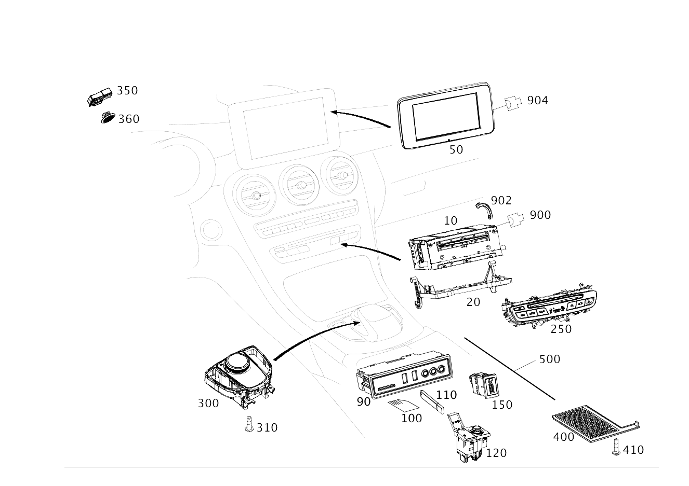

| № | Артикул | Название | Кол. | Примечание | Ограничение |
|---|---|---|---|---|---|
| 10 | A 205 900 88 17 | Блок управления (CONTROL UNIT) | 1 | Головное устройство [426] ДЛЯ ЦИФРОВОГО РУКОВОДСТВА ПО ЭКСПЛУАТАЦИИ ЗАКАЗАТЬ ТАКЖЕ ПРОГРАММНОЕ ОБЕСПЕЧЕНИЕ В КГ 58, TU300 [672] ДЕТАЛЬ ПОСЛЕ УСТАН.ПРОВЕРИТЬ НА АКТУАЛЬНОСТЬ "ПРОШИВНОГО" ПО [697] ДЕТАЛЬ ПОСТАВЛЯЕТСЯ ТОЛЬКО/ИЛИ ТАКЖЕ КАК ЗАП.ЧАСТЬ | 805+520+(3U1/3U5)+-(055+140) |
| 10 | A 205 900 72 21 | Блок управления (CONTROL UNIT) | 1 | Головное устройство [426] ДЛЯ ЦИФРОВОГО РУКОВОДСТВА ПО ЭКСПЛУАТАЦИИ ЗАКАЗАТЬ ТАКЖЕ ПРОГРАММНОЕ ОБЕСПЕЧЕНИЕ В КГ 58, TU300 [672] ДЕТАЛЬ ПОСЛЕ УСТАН.ПРОВЕРИТЬ НА АКТУАЛЬНОСТЬ "ПРОШИВНОГО" ПО [697] ДЕТАЛЬ ПОСТАВЛЯЕТСЯ ТОЛЬКО/ИЛИ ТАКЖЕ КАК ЗАП.ЧАСТЬ | 520+(3U1/3U5)+806 |
| 10 | A 205 900 16 22 | Блок управления (CONTROL UNIT) | 1 | Головное устройство [426] ДЛЯ ЦИФРОВОГО РУКОВОДСТВА ПО ЭКСПЛУАТАЦИИ ЗАКАЗАТЬ ТАКЖЕ ПРОГРАММНОЕ ОБЕСПЕЧЕНИЕ В КГ 58, TU300 [672] ДЕТАЛЬ ПОСЛЕ УСТАН.ПРОВЕРИТЬ НА АКТУАЛЬНОСТЬ "ПРОШИВНОГО" ПО [697] ДЕТАЛЬ ПОСТАВЛЯЕТСЯ ТОЛЬКО/ИЛИ ТАКЖЕ КАК ЗАП.ЧАСТЬ | 520+(3U1/3U5)+806 |
| 10 | A 205 900 04 27 | Блок управления (CONTROL UNIT) | 1 | Головное устройство [426] ДЛЯ ЦИФРОВОГО РУКОВОДСТВА ПО ЭКСПЛУАТАЦИИ ЗАКАЗАТЬ ТАКЖЕ ПРОГРАММНОЕ ОБЕСПЕЧЕНИЕ В КГ 58, TU300 [672] ДЕТАЛЬ ПОСЛЕ УСТАН.ПРОВЕРИТЬ НА АКТУАЛЬНОСТЬ "ПРОШИВНОГО" ПО [697] ДЕТАЛЬ ПОСТАВЛЯЕТСЯ ТОЛЬКО/ИЛИ ТАКЖЕ КАК ЗАП.ЧАСТЬ | 807+-057+520+(3U1/3U5) |
| 10 | A 205 900 36 29 | Блок управления (CONTROL UNIT) | 1 | Головное устройство [426] ДЛЯ ЦИФРОВОГО РУКОВОДСТВА ПО ЭКСПЛУАТАЦИИ ЗАКАЗАТЬ ТАКЖЕ ПРОГРАММНОЕ ОБЕСПЕЧЕНИЕ В КГ 58, TU300 [672] ДЕТАЛЬ ПОСЛЕ УСТАН.ПРОВЕРИТЬ НА АКТУАЛЬНОСТЬ "ПРОШИВНОГО" ПО [697] ДЕТАЛЬ ПОСТАВЛЯЕТСЯ ТОЛЬКО/ИЛИ ТАКЖЕ КАК ЗАП.ЧАСТЬ | 807+-057+520+(3U1/3U5) |
| 10 | A 205 900 33 22 | Блок управления (CONTROL UNIT) | 1 | Головное устройство [426] ДЛЯ ЦИФРОВОГО РУКОВОДСТВА ПО ЭКСПЛУАТАЦИИ ЗАКАЗАТЬ ТАКЖЕ ПРОГРАММНОЕ ОБЕСПЕЧЕНИЕ В КГ 58, TU300 [672] ДЕТАЛЬ ПОСЛЕ УСТАН.ПРОВЕРИТЬ НА АКТУАЛЬНОСТЬ "ПРОШИВНОГО" ПО [697] ДЕТАЛЬ ПОСТАВЛЯЕТСЯ ТОЛЬКО/ИЛИ ТАКЖЕ КАК ЗАП.ЧАСТЬ | 807+531+815+3U1 |
| 10 | A 205 900 29 29 | Блок управления (CONTROL UNIT) | 1 | Головное устройство [426] ДЛЯ ЦИФРОВОГО РУКОВОДСТВА ПО ЭКСПЛУАТАЦИИ ЗАКАЗАТЬ ТАКЖЕ ПРОГРАММНОЕ ОБЕСПЕЧЕНИЕ В КГ 58, TU300 [672] ДЕТАЛЬ ПОСЛЕ УСТАН.ПРОВЕРИТЬ НА АКТУАЛЬНОСТЬ "ПРОШИВНОГО" ПО [697] ДЕТАЛЬ ПОСТАВЛЯЕТСЯ ТОЛЬКО/ИЛИ ТАКЖЕ КАК ЗАП.ЧАСТЬ | (807/808)+531+815+3U1 |
| 10 | A 205 900 84 30 | Блок управления (CONTROL UNIT) | 1 | Головное устройство [426] ДЛЯ ЦИФРОВОГО РУКОВОДСТВА ПО ЭКСПЛУАТАЦИИ ЗАКАЗАТЬ ТАКЖЕ ПРОГРАММНОЕ ОБЕСПЕЧЕНИЕ В КГ 58, TU300 [672] ДЕТАЛЬ ПОСЛЕ УСТАН.ПРОВЕРИТЬ НА АКТУАЛЬНОСТЬ "ПРОШИВНОГО" ПО [697] ДЕТАЛЬ ПОСТАВЛЯЕТСЯ ТОЛЬКО/ИЛИ ТАКЖЕ КАК ЗАП.ЧАСТЬ | (807/808)+531+815+3U1 |
| 10 | A 205 900 05 27 | Блок управления (CONTROL UNIT) | 1 | Головное устройство [426] ДЛЯ ЦИФРОВОГО РУКОВОДСТВА ПО ЭКСПЛУАТАЦИИ ЗАКАЗАТЬ ТАКЖЕ ПРОГРАММНОЕ ОБЕСПЕЧЕНИЕ В КГ 58, TU300 [672] ДЕТАЛЬ ПОСЛЕ УСТАН.ПРОВЕРИТЬ НА АКТУАЛЬНОСТЬ "ПРОШИВНОГО" ПО [697] ДЕТАЛЬ ПОСТАВЛЯЕТСЯ ТОЛЬКО/ИЛИ ТАКЖЕ КАК ЗАП.ЧАСТЬ [003828] НА А/М С КОДОМ 522 В СОЧЕТАНИИ С КОДОМ 357 ДОПОЛНИТ. ЗАКАЗАТЬ КАРТУ ПАМЯТИ ДЛЯ НАВИГАЦ.СИСТЕМЫ, РАБОТАЮЩЕЙ С КАРТОЙ ПАМЯТИ SD | 807+-057+522+818+(3U1/3U4/3U5) |
| 10 | A 205 900 37 29 | Блок управления (CONTROL UNIT) | 1 | Головное устройство [426] ДЛЯ ЦИФРОВОГО РУКОВОДСТВА ПО ЭКСПЛУАТАЦИИ ЗАКАЗАТЬ ТАКЖЕ ПРОГРАММНОЕ ОБЕСПЕЧЕНИЕ В КГ 58, TU300 [672] ДЕТАЛЬ ПОСЛЕ УСТАН.ПРОВЕРИТЬ НА АКТУАЛЬНОСТЬ "ПРОШИВНОГО" ПО [697] ДЕТАЛЬ ПОСТАВЛЯЕТСЯ ТОЛЬКО/ИЛИ ТАКЖЕ КАК ЗАП.ЧАСТЬ [003828] НА А/М С КОДОМ 522 В СОЧЕТАНИИ С КОДОМ 357 ДОПОЛНИТ. ЗАКАЗАТЬ КАРТУ ПАМЯТИ ДЛЯ НАВИГАЦ.СИСТЕМЫ, РАБОТАЮЩЕЙ С КАРТОЙ ПАМЯТИ SD | 807+-057+522+818+(3U1/3U4/3U5) |
| 10 | A 205 900 34 22 | Блок управления (CONTROL UNIT) | 1 | Головное устройство [426] ДЛЯ ЦИФРОВОГО РУКОВОДСТВА ПО ЭКСПЛУАТАЦИИ ЗАКАЗАТЬ ТАКЖЕ ПРОГРАММНОЕ ОБЕСПЕЧЕНИЕ В КГ 58, TU300 [672] ДЕТАЛЬ ПОСЛЕ УСТАН.ПРОВЕРИТЬ НА АКТУАЛЬНОСТЬ "ПРОШИВНОГО" ПО [697] ДЕТАЛЬ ПОСТАВЛЯЕТСЯ ТОЛЬКО/ИЛИ ТАКЖЕ КАК ЗАП.ЧАСТЬ | 807+531+814+3U1 |
| 10 | A 205 900 85 27 | Блок управления (CONTROL UNIT) | 1 | Головное устройство [426] ДЛЯ ЦИФРОВОГО РУКОВОДСТВА ПО ЭКСПЛУАТАЦИИ ЗАКАЗАТЬ ТАКЖЕ ПРОГРАММНОЕ ОБЕСПЕЧЕНИЕ В КГ 58, TU300 [672] ДЕТАЛЬ ПОСЛЕ УСТАН.ПРОВЕРИТЬ НА АКТУАЛЬНОСТЬ "ПРОШИВНОГО" ПО [402] БОЛЬШЕ НЕ ПОСТАВЛЯЕТСЯ | 807+531+814+3U1 |
| 10 | A 205 900 30 29 | Блок управления (CONTROL UNIT) | 1 | Головное устройство [426] ДЛЯ ЦИФРОВОГО РУКОВОДСТВА ПО ЭКСПЛУАТАЦИИ ЗАКАЗАТЬ ТАКЖЕ ПРОГРАММНОЕ ОБЕСПЕЧЕНИЕ В КГ 58, TU300 [672] ДЕТАЛЬ ПОСЛЕ УСТАН.ПРОВЕРИТЬ НА АКТУАЛЬНОСТЬ "ПРОШИВНОГО" ПО [697] ДЕТАЛЬ ПОСТАВЛЯЕТСЯ ТОЛЬКО/ИЛИ ТАКЖЕ КАК ЗАП.ЧАСТЬ | (807/808)+531+814+3U1 |
| 10 | A 205 900 85 30 | Блок управления (CONTROL UNIT) | 1 | Головное устройство [426] ДЛЯ ЦИФРОВОГО РУКОВОДСТВА ПО ЭКСПЛУАТАЦИИ ЗАКАЗАТЬ ТАКЖЕ ПРОГРАММНОЕ ОБЕСПЕЧЕНИЕ В КГ 58, TU300 [672] ДЕТАЛЬ ПОСЛЕ УСТАН.ПРОВЕРИТЬ НА АКТУАЛЬНОСТЬ "ПРОШИВНОГО" ПО [697] ДЕТАЛЬ ПОСТАВЛЯЕТСЯ ТОЛЬКО/ИЛИ ТАКЖЕ КАК ЗАП.ЧАСТЬ | (807/808)+531+814+3U1 |
| 10 | A 205 900 06 27 | Блок управления | 1 | Головное устройство [426] ДЛЯ ЦИФРОВОГО РУКОВОДСТВА ПО ЭКСПЛУАТАЦИИ ЗАКАЗАТЬ ТАКЖЕ ПРОГРАММНОЕ ОБЕСПЕЧЕНИЕ В КГ 58, TU300 [672] ДЕТАЛЬ ПОСЛЕ УСТАН.ПРОВЕРИТЬ НА АКТУАЛЬНОСТЬ "ПРОШИВНОГО" ПО [697] ДЕТАЛЬ ПОСТАВЛЯЕТСЯ ТОЛЬКО/ИЛИ ТАКЖЕ КАК ЗАП.ЧАСТЬ [003828] НА А/М С КОДОМ 522 В СОЧЕТАНИИ С КОДОМ 357 ДОПОЛНИТ. ЗАКАЗАТЬ КАРТУ ПАМЯТИ ДЛЯ НАВИГАЦ.СИСТЕМЫ, РАБОТАЮЩЕЙ С КАРТОЙ ПАМЯТИ SD | 807+-057+522+818+3U2 |
| 10 | A 205 900 38 29 | Блок управления (CONTROL UNIT) | 1 | Головное устройство [426] ДЛЯ ЦИФРОВОГО РУКОВОДСТВА ПО ЭКСПЛУАТАЦИИ ЗАКАЗАТЬ ТАКЖЕ ПРОГРАММНОЕ ОБЕСПЕЧЕНИЕ В КГ 58, TU300 [672] ДЕТАЛЬ ПОСЛЕ УСТАН.ПРОВЕРИТЬ НА АКТУАЛЬНОСТЬ "ПРОШИВНОГО" ПО [003828] НА А/М С КОДОМ 522 В СОЧЕТАНИИ С КОДОМ 357 ДОПОЛНИТ. ЗАКАЗАТЬ КАРТУ ПАМЯТИ ДЛЯ НАВИГАЦ.СИСТЕМЫ, РАБОТАЮЩЕЙ С КАРТОЙ ПАМЯТИ SD | 807+-057+522+818+3U2 |
| 10 | A 205 900 35 22 | Блок управления (CONTROL UNIT) | 1 | Головное устройство [426] ДЛЯ ЦИФРОВОГО РУКОВОДСТВА ПО ЭКСПЛУАТАЦИИ ЗАКАЗАТЬ ТАКЖЕ ПРОГРАММНОЕ ОБЕСПЕЧЕНИЕ В КГ 58, TU300 [672] ДЕТАЛЬ ПОСЛЕ УСТАН.ПРОВЕРИТЬ НА АКТУАЛЬНОСТЬ "ПРОШИВНОГО" ПО | 807+531+815+3U2 |
| 10 | A 205 900 86 27 | Блок управления | 1 | Головное устройство [426] ДЛЯ ЦИФРОВОГО РУКОВОДСТВА ПО ЭКСПЛУАТАЦИИ ЗАКАЗАТЬ ТАКЖЕ ПРОГРАММНОЕ ОБЕСПЕЧЕНИЕ В КГ 58, TU300 [672] ДЕТАЛЬ ПОСЛЕ УСТАН.ПРОВЕРИТЬ НА АКТУАЛЬНОСТЬ "ПРОШИВНОГО" ПО | 807+531+815+3U2 |
| 10 | A 205 900 31 29 | Блок управления (CONTROL UNIT) | 1 | Головное устройство [426] ДЛЯ ЦИФРОВОГО РУКОВОДСТВА ПО ЭКСПЛУАТАЦИИ ЗАКАЗАТЬ ТАКЖЕ ПРОГРАММНОЕ ОБЕСПЕЧЕНИЕ В КГ 58, TU300 [672] ДЕТАЛЬ ПОСЛЕ УСТАН.ПРОВЕРИТЬ НА АКТУАЛЬНОСТЬ "ПРОШИВНОГО" ПО | 807+531+815+3U2 |
| 10 | A 205 900 86 30 | Блок управления (CONTROL UNIT) | 1 | Головное устройство [426] ДЛЯ ЦИФРОВОГО РУКОВОДСТВА ПО ЭКСПЛУАТАЦИИ ЗАКАЗАТЬ ТАКЖЕ ПРОГРАММНОЕ ОБЕСПЕЧЕНИЕ В КГ 58, TU300 [672] ДЕТАЛЬ ПОСЛЕ УСТАН.ПРОВЕРИТЬ НА АКТУАЛЬНОСТЬ "ПРОШИВНОГО" ПО [697] ДЕТАЛЬ ПОСТАВЛЯЕТСЯ ТОЛЬКО/ИЛИ ТАКЖЕ КАК ЗАП.ЧАСТЬ | 807+531+815+3U2 |
| 10 | A 205 900 36 22 | Блок управления (CONTROL UNIT) | 1 | Головное устройство [426] ДЛЯ ЦИФРОВОГО РУКОВОДСТВА ПО ЭКСПЛУАТАЦИИ ЗАКАЗАТЬ ТАКЖЕ ПРОГРАММНОЕ ОБЕСПЕЧЕНИЕ В КГ 58, TU300 [672] ДЕТАЛЬ ПОСЛЕ УСТАН.ПРОВЕРИТЬ НА АКТУАЛЬНОСТЬ "ПРОШИВНОГО" ПО [697] ДЕТАЛЬ ПОСТАВЛЯЕТСЯ ТОЛЬКО/ИЛИ ТАКЖЕ КАК ЗАП.ЧАСТЬ | 807+531+815+3U3 |
| 10 | A 205 900 87 27 | Блок управления | 1 | Головное устройство [426] ДЛЯ ЦИФРОВОГО РУКОВОДСТВА ПО ЭКСПЛУАТАЦИИ ЗАКАЗАТЬ ТАКЖЕ ПРОГРАММНОЕ ОБЕСПЕЧЕНИЕ В КГ 58, TU300 [672] ДЕТАЛЬ ПОСЛЕ УСТАН.ПРОВЕРИТЬ НА АКТУАЛЬНОСТЬ "ПРОШИВНОГО" ПО | 807+531+815+3U3 |
| 10 | A 205 900 32 29 | Блок управления (CONTROL UNIT) | 1 | Головное устройство [426] ДЛЯ ЦИФРОВОГО РУКОВОДСТВА ПО ЭКСПЛУАТАЦИИ ЗАКАЗАТЬ ТАКЖЕ ПРОГРАММНОЕ ОБЕСПЕЧЕНИЕ В КГ 58, TU300 [672] ДЕТАЛЬ ПОСЛЕ УСТАН.ПРОВЕРИТЬ НА АКТУАЛЬНОСТЬ "ПРОШИВНОГО" ПО | 807+531+815+3U3 |
| 10 | A 205 900 87 30 | Блок управления (CONTROL UNIT) | 1 | Головное устройство [426] ДЛЯ ЦИФРОВОГО РУКОВОДСТВА ПО ЭКСПЛУАТАЦИИ ЗАКАЗАТЬ ТАКЖЕ ПРОГРАММНОЕ ОБЕСПЕЧЕНИЕ В КГ 58, TU300 [672] ДЕТАЛЬ ПОСЛЕ УСТАН.ПРОВЕРИТЬ НА АКТУАЛЬНОСТЬ "ПРОШИВНОГО" ПО [697] ДЕТАЛЬ ПОСТАВЛЯЕТСЯ ТОЛЬКО/ИЛИ ТАКЖЕ КАК ЗАП.ЧАСТЬ | 807+531+815+3U3 |
| 10 | A 205 900 37 22 | Блок управления (CONTROL UNIT) | 1 | Головное устройство [426] ДЛЯ ЦИФРОВОГО РУКОВОДСТВА ПО ЭКСПЛУАТАЦИИ ЗАКАЗАТЬ ТАКЖЕ ПРОГРАММНОЕ ОБЕСПЕЧЕНИЕ В КГ 58, TU300 [672] ДЕТАЛЬ ПОСЛЕ УСТАН.ПРОВЕРИТЬ НА АКТУАЛЬНОСТЬ "ПРОШИВНОГО" ПО | 807+531+814+3U4 |
| 10 | A 205 900 88 27 | Блок управления | 1 | Головное устройство [426] ДЛЯ ЦИФРОВОГО РУКОВОДСТВА ПО ЭКСПЛУАТАЦИИ ЗАКАЗАТЬ ТАКЖЕ ПРОГРАММНОЕ ОБЕСПЕЧЕНИЕ В КГ 58, TU300 [672] ДЕТАЛЬ ПОСЛЕ УСТАН.ПРОВЕРИТЬ НА АКТУАЛЬНОСТЬ "ПРОШИВНОГО" ПО | 807+531+814+3U4 |
| 10 | A 205 900 20 28 | Блок управления | 1 | Головное устройство [426] ДЛЯ ЦИФРОВОГО РУКОВОДСТВА ПО ЭКСПЛУАТАЦИИ ЗАКАЗАТЬ ТАКЖЕ ПРОГРАММНОЕ ОБЕСПЕЧЕНИЕ В КГ 58, TU300 [672] ДЕТАЛЬ ПОСЛЕ УСТАН.ПРОВЕРИТЬ НА АКТУАЛЬНОСТЬ "ПРОШИВНОГО" ПО | 807+531+814+3U4 |
| 10 | A 205 900 33 29 | Блок управления (CONTROL UNIT) | 1 | Головное устройство [426] ДЛЯ ЦИФРОВОГО РУКОВОДСТВА ПО ЭКСПЛУАТАЦИИ ЗАКАЗАТЬ ТАКЖЕ ПРОГРАММНОЕ ОБЕСПЕЧЕНИЕ В КГ 58, TU300 [672] ДЕТАЛЬ ПОСЛЕ УСТАН.ПРОВЕРИТЬ НА АКТУАЛЬНОСТЬ "ПРОШИВНОГО" ПО | (807/808)+531+814+3U4 |
| 10 | A 205 900 88 30 | Блок управления (CONTROL UNIT) | 1 | Головное устройство [426] ДЛЯ ЦИФРОВОГО РУКОВОДСТВА ПО ЭКСПЛУАТАЦИИ ЗАКАЗАТЬ ТАКЖЕ ПРОГРАММНОЕ ОБЕСПЕЧЕНИЕ В КГ 58, TU300 [672] ДЕТАЛЬ ПОСЛЕ УСТАН.ПРОВЕРИТЬ НА АКТУАЛЬНОСТЬ "ПРОШИВНОГО" ПО | (807/808)+531+814+3U4 |
| 10 | A 205 900 38 22 | Блок управления (CONTROL UNIT) | 1 | Головное устройство [426] ДЛЯ ЦИФРОВОГО РУКОВОДСТВА ПО ЭКСПЛУАТАЦИИ ЗАКАЗАТЬ ТАКЖЕ ПРОГРАММНОЕ ОБЕСПЕЧЕНИЕ В КГ 58, TU300 [672] ДЕТАЛЬ ПОСЛЕ УСТАН.ПРОВЕРИТЬ НА АКТУАЛЬНОСТЬ "ПРОШИВНОГО" ПО | 807+531+815+3U5 |
| 10 | A 205 900 89 27 | Блок управления | 1 | Головное устройство [426] ДЛЯ ЦИФРОВОГО РУКОВОДСТВА ПО ЭКСПЛУАТАЦИИ ЗАКАЗАТЬ ТАКЖЕ ПРОГРАММНОЕ ОБЕСПЕЧЕНИЕ В КГ 58, TU300 [672] ДЕТАЛЬ ПОСЛЕ УСТАН.ПРОВЕРИТЬ НА АКТУАЛЬНОСТЬ "ПРОШИВНОГО" ПО [697] ДЕТАЛЬ ПОСТАВЛЯЕТСЯ ТОЛЬКО/ИЛИ ТАКЖЕ КАК ЗАП.ЧАСТЬ | 807+531+815+3U5 |
| 10 | A 205 900 34 29 | Блок управления (CONTROL UNIT) | 1 | Головное устройство [426] ДЛЯ ЦИФРОВОГО РУКОВОДСТВА ПО ЭКСПЛУАТАЦИИ ЗАКАЗАТЬ ТАКЖЕ ПРОГРАММНОЕ ОБЕСПЕЧЕНИЕ В КГ 58, TU300 [672] ДЕТАЛЬ ПОСЛЕ УСТАН.ПРОВЕРИТЬ НА АКТУАЛЬНОСТЬ "ПРОШИВНОГО" ПО [697] ДЕТАЛЬ ПОСТАВЛЯЕТСЯ ТОЛЬКО/ИЛИ ТАКЖЕ КАК ЗАП.ЧАСТЬ | 807+531+815+3U5 |
| 10 | A 205 900 90 30 | Блок управления (CONTROL UNIT) | 1 | Головное устройство [426] ДЛЯ ЦИФРОВОГО РУКОВОДСТВА ПО ЭКСПЛУАТАЦИИ ЗАКАЗАТЬ ТАКЖЕ ПРОГРАММНОЕ ОБЕСПЕЧЕНИЕ В КГ 58, TU300 [672] ДЕТАЛЬ ПОСЛЕ УСТАН.ПРОВЕРИТЬ НА АКТУАЛЬНОСТЬ "ПРОШИВНОГО" ПО [697] ДЕТАЛЬ ПОСТАВЛЯЕТСЯ ТОЛЬКО/ИЛИ ТАКЖЕ КАК ЗАП.ЧАСТЬ | 807+531+815+3U5 |
| 10 | A 205 900 39 22 | Блок управления (CONTROL UNIT) | 1 | Головное устройство [426] ДЛЯ ЦИФРОВОГО РУКОВОДСТВА ПО ЭКСПЛУАТАЦИИ ЗАКАЗАТЬ ТАКЖЕ ПРОГРАММНОЕ ОБЕСПЕЧЕНИЕ В КГ 58, TU300 [672] ДЕТАЛЬ ПОСЛЕ УСТАН.ПРОВЕРИТЬ НА АКТУАЛЬНОСТЬ "ПРОШИВНОГО" ПО [697] ДЕТАЛЬ ПОСТАВЛЯЕТСЯ ТОЛЬКО/ИЛИ ТАКЖЕ КАК ЗАП.ЧАСТЬ | 807+531+814+3U5 |
| 10 | A 205 900 90 27 | Блок управления | 1 | Головное устройство [426] ДЛЯ ЦИФРОВОГО РУКОВОДСТВА ПО ЭКСПЛУАТАЦИИ ЗАКАЗАТЬ ТАКЖЕ ПРОГРАММНОЕ ОБЕСПЕЧЕНИЕ В КГ 58, TU300 [672] ДЕТАЛЬ ПОСЛЕ УСТАН.ПРОВЕРИТЬ НА АКТУАЛЬНОСТЬ "ПРОШИВНОГО" ПО [697] ДЕТАЛЬ ПОСТАВЛЯЕТСЯ ТОЛЬКО/ИЛИ ТАКЖЕ КАК ЗАП.ЧАСТЬ | 807+531+814+3U5 |
| 10 | A 205 900 35 29 | Блок управления (CONTROL UNIT) | 1 | Головное устройство [426] ДЛЯ ЦИФРОВОГО РУКОВОДСТВА ПО ЭКСПЛУАТАЦИИ ЗАКАЗАТЬ ТАКЖЕ ПРОГРАММНОЕ ОБЕСПЕЧЕНИЕ В КГ 58, TU300 [672] ДЕТАЛЬ ПОСЛЕ УСТАН.ПРОВЕРИТЬ НА АКТУАЛЬНОСТЬ "ПРОШИВНОГО" ПО [697] ДЕТАЛЬ ПОСТАВЛЯЕТСЯ ТОЛЬКО/ИЛИ ТАКЖЕ КАК ЗАП.ЧАСТЬ | (807/808)+531+814+3U5 |
| 10 | A 205 900 91 30 | Блок управления (CONTROL UNIT) | 1 | Головное устройство [426] ДЛЯ ЦИФРОВОГО РУКОВОДСТВА ПО ЭКСПЛУАТАЦИИ ЗАКАЗАТЬ ТАКЖЕ ПРОГРАММНОЕ ОБЕСПЕЧЕНИЕ В КГ 58, TU300 [672] ДЕТАЛЬ ПОСЛЕ УСТАН.ПРОВЕРИТЬ НА АКТУАЛЬНОСТЬ "ПРОШИВНОГО" ПО [697] ДЕТАЛЬ ПОСТАВЛЯЕТСЯ ТОЛЬКО/ИЛИ ТАКЖЕ КАК ЗАП.ЧАСТЬ | (807/808)+531+814+3U5 |
| 10 | A 205 900 90 28 | Блок управления (CONTROL UNIT) | 1 | Головное устройство [426] ДЛЯ ЦИФРОВОГО РУКОВОДСТВА ПО ЭКСПЛУАТАЦИИ ЗАКАЗАТЬ ТАКЖЕ ПРОГРАММНОЕ ОБЕСПЕЧЕНИЕ В КГ 58, TU300 [672] ДЕТАЛЬ ПОСЛЕ УСТАН.ПРОВЕРИТЬ НА АКТУАЛЬНОСТЬ "ПРОШИВНОГО" ПО [697] ДЕТАЛЬ ПОСТАВЛЯЕТСЯ ТОЛЬКО/ИЛИ ТАКЖЕ КАК ЗАП.ЧАСТЬ | (807+057/808+-154)+520+(3U1/3U5) |
| 10 | A 205 900 94 30 | Блок управления (CONTROL UNIT) | 1 | Головное устройство [426] ДЛЯ ЦИФРОВОГО РУКОВОДСТВА ПО ЭКСПЛУАТАЦИИ ЗАКАЗАТЬ ТАКЖЕ ПРОГРАММНОЕ ОБЕСПЕЧЕНИЕ В КГ 58, TU300 [672] ДЕТАЛЬ ПОСЛЕ УСТАН.ПРОВЕРИТЬ НА АКТУАЛЬНОСТЬ "ПРОШИВНОГО" ПО [697] ДЕТАЛЬ ПОСТАВЛЯЕТСЯ ТОЛЬКО/ИЛИ ТАКЖЕ КАК ЗАП.ЧАСТЬ | (807+057/808+-154)+520+(3U1/3U5) |
| 10 | A 205 900 09 33 | Блок управления (CONTROL UNIT) | 1 | Головное устройство [426] ДЛЯ ЦИФРОВОГО РУКОВОДСТВА ПО ЭКСПЛУАТАЦИИ ЗАКАЗАТЬ ТАКЖЕ ПРОГРАММНОЕ ОБЕСПЕЧЕНИЕ В КГ 58, TU300 [675] ПОСЛЕ МОНТАЖА ОБНОВИТЬ ПО И ЗАКОДИРОВАТЬ БУ. [697] ДЕТАЛЬ ПОСТАВЛЯЕТСЯ ТОЛЬКО/ИЛИ ТАКЖЕ КАК ЗАП.ЧАСТЬ | (807+057/808+-154)+520+(3U1/3U5) |
| 10 | A 205 900 91 28 | Блок управления (CONTROL UNIT) | 1 | Головное устройство [426] ДЛЯ ЦИФРОВОГО РУКОВОДСТВА ПО ЭКСПЛУАТАЦИИ ЗАКАЗАТЬ ТАКЖЕ ПРОГРАММНОЕ ОБЕСПЕЧЕНИЕ В КГ 58, TU300 [672] ДЕТАЛЬ ПОСЛЕ УСТАН.ПРОВЕРИТЬ НА АКТУАЛЬНОСТЬ "ПРОШИВНОГО" ПО [697] ДЕТАЛЬ ПОСТАВЛЯЕТСЯ ТОЛЬКО/ИЛИ ТАКЖЕ КАК ЗАП.ЧАСТЬ [003828] НА А/М С КОДОМ 522 В СОЧЕТАНИИ С КОДОМ 357 ДОПОЛНИТ. ЗАКАЗАТЬ КАРТУ ПАМЯТИ ДЛЯ НАВИГАЦ.СИСТЕМЫ, РАБОТАЮЩЕЙ С КАРТОЙ ПАМЯТИ SD | (807+057/808+-154)+522+818+(3U1/3U4/3U5) |
| 10 | A 205 900 95 30 | Блок управления (CONTROL UNIT) | 1 | Головное устройство [426] ДЛЯ ЦИФРОВОГО РУКОВОДСТВА ПО ЭКСПЛУАТАЦИИ ЗАКАЗАТЬ ТАКЖЕ ПРОГРАММНОЕ ОБЕСПЕЧЕНИЕ В КГ 58, TU300 [672] ДЕТАЛЬ ПОСЛЕ УСТАН.ПРОВЕРИТЬ НА АКТУАЛЬНОСТЬ "ПРОШИВНОГО" ПО [697] ДЕТАЛЬ ПОСТАВЛЯЕТСЯ ТОЛЬКО/ИЛИ ТАКЖЕ КАК ЗАП.ЧАСТЬ [003828] НА А/М С КОДОМ 522 В СОЧЕТАНИИ С КОДОМ 357 ДОПОЛНИТ. ЗАКАЗАТЬ КАРТУ ПАМЯТИ ДЛЯ НАВИГАЦ.СИСТЕМЫ, РАБОТАЮЩЕЙ С КАРТОЙ ПАМЯТИ SD | (807+057/808+-154)+522+818+(3U1/3U4/3U5) |
| 10 | A 205 900 10 33 | Блок управления (CONTROL UNIT) | 1 | Головное устройство [426] ДЛЯ ЦИФРОВОГО РУКОВОДСТВА ПО ЭКСПЛУАТАЦИИ ЗАКАЗАТЬ ТАКЖЕ ПРОГРАММНОЕ ОБЕСПЕЧЕНИЕ В КГ 58, TU300 [672] ДЕТАЛЬ ПОСЛЕ УСТАН.ПРОВЕРИТЬ НА АКТУАЛЬНОСТЬ "ПРОШИВНОГО" ПО [697] ДЕТАЛЬ ПОСТАВЛЯЕТСЯ ТОЛЬКО/ИЛИ ТАКЖЕ КАК ЗАП.ЧАСТЬ [003828] НА А/М С КОДОМ 522 В СОЧЕТАНИИ С КОДОМ 357 ДОПОЛНИТ. ЗАКАЗАТЬ КАРТУ ПАМЯТИ ДЛЯ НАВИГАЦ.СИСТЕМЫ, РАБОТАЮЩЕЙ С КАРТОЙ ПАМЯТИ SD | (807+057/808+-154)+522+818+(3U1/3U4/3U5) |
| 10 | A 205 900 92 28 | Блок управления (CONTROL UNIT) | 1 | Головное устройство [426] ДЛЯ ЦИФРОВОГО РУКОВОДСТВА ПО ЭКСПЛУАТАЦИИ ЗАКАЗАТЬ ТАКЖЕ ПРОГРАММНОЕ ОБЕСПЕЧЕНИЕ В КГ 58, TU300 [672] ДЕТАЛЬ ПОСЛЕ УСТАН.ПРОВЕРИТЬ НА АКТУАЛЬНОСТЬ "ПРОШИВНОГО" ПО [697] ДЕТАЛЬ ПОСТАВЛЯЕТСЯ ТОЛЬКО/ИЛИ ТАКЖЕ КАК ЗАП.ЧАСТЬ [003828] НА А/М С КОДОМ 522 В СОЧЕТАНИИ С КОДОМ 357 ДОПОЛНИТ. ЗАКАЗАТЬ КАРТУ ПАМЯТИ ДЛЯ НАВИГАЦ.СИСТЕМЫ, РАБОТАЮЩЕЙ С КАРТОЙ ПАМЯТИ SD | (807+057/808+-154)+522+818+3U2 |
| 10 | A 205 900 96 30 | Блок управления (CONTROL UNIT) | 1 | Головное устройство [426] ДЛЯ ЦИФРОВОГО РУКОВОДСТВА ПО ЭКСПЛУАТАЦИИ ЗАКАЗАТЬ ТАКЖЕ ПРОГРАММНОЕ ОБЕСПЕЧЕНИЕ В КГ 58, TU300 [672] ДЕТАЛЬ ПОСЛЕ УСТАН.ПРОВЕРИТЬ НА АКТУАЛЬНОСТЬ "ПРОШИВНОГО" ПО [697] ДЕТАЛЬ ПОСТАВЛЯЕТСЯ ТОЛЬКО/ИЛИ ТАКЖЕ КАК ЗАП.ЧАСТЬ [003828] НА А/М С КОДОМ 522 В СОЧЕТАНИИ С КОДОМ 357 ДОПОЛНИТ. ЗАКАЗАТЬ КАРТУ ПАМЯТИ ДЛЯ НАВИГАЦ.СИСТЕМЫ, РАБОТАЮЩЕЙ С КАРТОЙ ПАМЯТИ SD | (807+057/808+-154)+522+818+3U2 |
| 10 | A 205 900 11 33 | Блок управления (CONTROL UNIT) | 1 | Головное устройство [426] ДЛЯ ЦИФРОВОГО РУКОВОДСТВА ПО ЭКСПЛУАТАЦИИ ЗАКАЗАТЬ ТАКЖЕ ПРОГРАММНОЕ ОБЕСПЕЧЕНИЕ В КГ 58, TU300 [672] ДЕТАЛЬ ПОСЛЕ УСТАН.ПРОВЕРИТЬ НА АКТУАЛЬНОСТЬ "ПРОШИВНОГО" ПО [697] ДЕТАЛЬ ПОСТАВЛЯЕТСЯ ТОЛЬКО/ИЛИ ТАКЖЕ КАК ЗАП.ЧАСТЬ [003828] НА А/М С КОДОМ 522 В СОЧЕТАНИИ С КОДОМ 357 ДОПОЛНИТ. ЗАКАЗАТЬ КАРТУ ПАМЯТИ ДЛЯ НАВИГАЦ.СИСТЕМЫ, РАБОТАЮЩЕЙ С КАРТОЙ ПАМЯТИ SD | (807+057/808+-154)+522+818+3U2 |
| 10 | A 205 900 55 29 | Блок управления | 1 | Головное устройство [426] ДЛЯ ЦИФРОВОГО РУКОВОДСТВА ПО ЭКСПЛУАТАЦИИ ЗАКАЗАТЬ ТАКЖЕ ПРОГРАММНОЕ ОБЕСПЕЧЕНИЕ В КГ 58, TU300 [672] ДЕТАЛЬ ПОСЛЕ УСТАН.ПРОВЕРИТЬ НА АКТУАЛЬНОСТЬ "ПРОШИВНОГО" ПО | 807+057+531+815+3U4 |
| 10 | A 205 900 89 30 | Блок управления (CONTROL UNIT) | 1 | Головное устройство [426] ДЛЯ ЦИФРОВОГО РУКОВОДСТВА ПО ЭКСПЛУАТАЦИИ ЗАКАЗАТЬ ТАКЖЕ ПРОГРАММНОЕ ОБЕСПЕЧЕНИЕ В КГ 58, TU300 [672] ДЕТАЛЬ ПОСЛЕ УСТАН.ПРОВЕРИТЬ НА АКТУАЛЬНОСТЬ "ПРОШИВНОГО" ПО | 807+057+531+815+3U4 |
| 10 | A 213 900 88 29 | Блок управления (CONTROL UNIT) | 1 | Головное устройство [672] ДЕТАЛЬ ПОСЛЕ УСТАН.ПРОВЕРИТЬ НА АКТУАЛЬНОСТЬ "ПРОШИВНОГО" ПО | (809/800/801)+(506+859)+3U1 |
| 10 | A 213 900 88 29 | Блок управления (CONTROL UNIT) | 1 | Головное устройство [672] ДЕТАЛЬ ПОСЛЕ УСТАН.ПРОВЕРИТЬ НА АКТУАЛЬНОСТЬ "ПРОШИВНОГО" ПО | (809/800/801)+(506+859)+3U1 |
| 10 | A 213 900 20 25 | Блок управления (CONTROL UNIT) | 1 | Головное устройство [426] ДЛЯ ЦИФРОВОГО РУКОВОДСТВА ПО ЭКСПЛУАТАЦИИ ЗАКАЗАТЬ ТАКЖЕ ПРОГРАММНОЕ ОБЕСПЕЧЕНИЕ В КГ 58, TU300 [672] ДЕТАЛЬ ПОСЛЕ УСТАН.ПРОВЕРИТЬ НА АКТУАЛЬНОСТЬ "ПРОШИВНОГО" ПО [697] ДЕТАЛЬ ПОСТАВЛЯЕТСЯ ТОЛЬКО/ИЛИ ТАКЖЕ КАК ЗАП.ЧАСТЬ | (809/800/801)+(506+859)+3U1 |
| 10 | A 213 900 28 26 | Блок управления (CONTROL UNIT) | 1 | Головное устройство [426] ДЛЯ ЦИФРОВОГО РУКОВОДСТВА ПО ЭКСПЛУАТАЦИИ ЗАКАЗАТЬ ТАКЖЕ ПРОГРАММНОЕ ОБЕСПЕЧЕНИЕ В КГ 58, TU300 [672] ДЕТАЛЬ ПОСЛЕ УСТАН.ПРОВЕРИТЬ НА АКТУАЛЬНОСТЬ "ПРОШИВНОГО" ПО [697] ДЕТАЛЬ ПОСТАВЛЯЕТСЯ ТОЛЬКО/ИЛИ ТАКЖЕ КАК ЗАП.ЧАСТЬ | (809/800/801)+(506+859)+3U1 |
| 10 | A 213 900 25 27 | Блок управления (CONTROL UNIT) | 1 | Головное устройство [426] ДЛЯ ЦИФРОВОГО РУКОВОДСТВА ПО ЭКСПЛУАТАЦИИ ЗАКАЗАТЬ ТАКЖЕ ПРОГРАММНОЕ ОБЕСПЕЧЕНИЕ В КГ 58, TU300 [672] ДЕТАЛЬ ПОСЛЕ УСТАН.ПРОВЕРИТЬ НА АКТУАЛЬНОСТЬ "ПРОШИВНОГО" ПО [697] ДЕТАЛЬ ПОСТАВЛЯЕТСЯ ТОЛЬКО/ИЛИ ТАКЖЕ КАК ЗАП.ЧАСТЬ | (809/800/801)+(506+859)+3U1 |
| 10 | A 213 900 88 29 | Блок управления (CONTROL UNIT) | 1 | Головное устройство [672] ДЕТАЛЬ ПОСЛЕ УСТАН.ПРОВЕРИТЬ НА АКТУАЛЬНОСТЬ "ПРОШИВНОГО" ПО | (809/800/801)+(506+859)+3U1 |
| 10 | A 213 900 88 29 | Блок управления (CONTROL UNIT) | 1 | Головное устройство [672] ДЕТАЛЬ ПОСЛЕ УСТАН.ПРОВЕРИТЬ НА АКТУАЛЬНОСТЬ "ПРОШИВНОГО" ПО | (809/800/801)+(506+859)+3U1 |
| 10 | A 213 900 91 29 | Блок управления (CONTROL UNIT) | 1 | Головное устройство [672] ДЕТАЛЬ ПОСЛЕ УСТАН.ПРОВЕРИТЬ НА АКТУАЛЬНОСТЬ "ПРОШИВНОГО" ПО [697] ДЕТАЛЬ ПОСТАВЛЯЕТСЯ ТОЛЬКО/ИЛИ ТАКЖЕ КАК ЗАП.ЧАСТЬ | (809/800/801)+(506+859)+3U2 |
| 10 | A 213 900 22 36 | Блок управления (CONTROL UNIT) | 1 | Головное устройство [672] ДЕТАЛЬ ПОСЛЕ УСТАН.ПРОВЕРИТЬ НА АКТУАЛЬНОСТЬ "ПРОШИВНОГО" ПО | (809/800/801)+(506+859)+3U2 |
| 10 | A 213 900 23 25 | Блок управления (CONTROL UNIT) | 1 | Головное устройство [426] ДЛЯ ЦИФРОВОГО РУКОВОДСТВА ПО ЭКСПЛУАТАЦИИ ЗАКАЗАТЬ ТАКЖЕ ПРОГРАММНОЕ ОБЕСПЕЧЕНИЕ В КГ 58, TU300 [672] ДЕТАЛЬ ПОСЛЕ УСТАН.ПРОВЕРИТЬ НА АКТУАЛЬНОСТЬ "ПРОШИВНОГО" ПО | (809/800/801)+(506+859)+3U2 |
| 10 | A 213 900 31 26 | Блок управления (CONTROL UNIT) | 1 | Головное устройство [426] ДЛЯ ЦИФРОВОГО РУКОВОДСТВА ПО ЭКСПЛУАТАЦИИ ЗАКАЗАТЬ ТАКЖЕ ПРОГРАММНОЕ ОБЕСПЕЧЕНИЕ В КГ 58, TU300 [672] ДЕТАЛЬ ПОСЛЕ УСТАН.ПРОВЕРИТЬ НА АКТУАЛЬНОСТЬ "ПРОШИВНОГО" ПО [697] ДЕТАЛЬ ПОСТАВЛЯЕТСЯ ТОЛЬКО/ИЛИ ТАКЖЕ КАК ЗАП.ЧАСТЬ | (809/800/801)+(506+859)+3U2 |
| 10 | A 213 900 28 27 | Блок управления (CONTROL UNIT) | 1 | Головное устройство [426] ДЛЯ ЦИФРОВОГО РУКОВОДСТВА ПО ЭКСПЛУАТАЦИИ ЗАКАЗАТЬ ТАКЖЕ ПРОГРАММНОЕ ОБЕСПЕЧЕНИЕ В КГ 58, TU300 [672] ДЕТАЛЬ ПОСЛЕ УСТАН.ПРОВЕРИТЬ НА АКТУАЛЬНОСТЬ "ПРОШИВНОГО" ПО [697] ДЕТАЛЬ ПОСТАВЛЯЕТСЯ ТОЛЬКО/ИЛИ ТАКЖЕ КАК ЗАП.ЧАСТЬ | (809/800/801)+(506+859)+3U2 |
| 10 | A 213 900 91 29 | Блок управления (CONTROL UNIT) | 1 | Головное устройство [672] ДЕТАЛЬ ПОСЛЕ УСТАН.ПРОВЕРИТЬ НА АКТУАЛЬНОСТЬ "ПРОШИВНОГО" ПО [697] ДЕТАЛЬ ПОСТАВЛЯЕТСЯ ТОЛЬКО/ИЛИ ТАКЖЕ КАК ЗАП.ЧАСТЬ | (809/800/801)+(506+859)+3U2 |
| 10 | A 213 900 90 29 | Блок управления (CONTROL UNIT) | 1 | Головное устройство [672] ДЕТАЛЬ ПОСЛЕ УСТАН.ПРОВЕРИТЬ НА АКТУАЛЬНОСТЬ "ПРОШИВНОГО" ПО | (809/800/801)+(506+859)+3U1+(537/79B) |
| 10 | A 213 900 21 36 | Блок управления (CONTROL UNIT) | 1 | Головное устройство [672] ДЕТАЛЬ ПОСЛЕ УСТАН.ПРОВЕРИТЬ НА АКТУАЛЬНОСТЬ "ПРОШИВНОГО" ПО [697] ДЕТАЛЬ ПОСТАВЛЯЕТСЯ ТОЛЬКО/ИЛИ ТАКЖЕ КАК ЗАП.ЧАСТЬ | (809/800/801)+(506+859)+3U1+(537/79B) |
| 10 | A 213 900 22 25 | Блок управления (CONTROL UNIT) | 1 | Головное устройство [426] ДЛЯ ЦИФРОВОГО РУКОВОДСТВА ПО ЭКСПЛУАТАЦИИ ЗАКАЗАТЬ ТАКЖЕ ПРОГРАММНОЕ ОБЕСПЕЧЕНИЕ В КГ 58, TU300 [672] ДЕТАЛЬ ПОСЛЕ УСТАН.ПРОВЕРИТЬ НА АКТУАЛЬНОСТЬ "ПРОШИВНОГО" ПО [697] ДЕТАЛЬ ПОСТАВЛЯЕТСЯ ТОЛЬКО/ИЛИ ТАКЖЕ КАК ЗАП.ЧАСТЬ | (809/800/801)+(506+859)+3U1+(537/79B) |
| 10 | A 213 900 30 26 | Блок управления (CONTROL UNIT) | 1 | Головное устройство [426] ДЛЯ ЦИФРОВОГО РУКОВОДСТВА ПО ЭКСПЛУАТАЦИИ ЗАКАЗАТЬ ТАКЖЕ ПРОГРАММНОЕ ОБЕСПЕЧЕНИЕ В КГ 58, TU300 [672] ДЕТАЛЬ ПОСЛЕ УСТАН.ПРОВЕРИТЬ НА АКТУАЛЬНОСТЬ "ПРОШИВНОГО" ПО [697] ДЕТАЛЬ ПОСТАВЛЯЕТСЯ ТОЛЬКО/ИЛИ ТАКЖЕ КАК ЗАП.ЧАСТЬ | (809/800/801)+(506+859)+3U1+(537/79B) |
| 10 | A 213 900 27 27 | Блок управления (CONTROL UNIT) | 1 | Головное устройство; HU [426] ДЛЯ ЦИФРОВОГО РУКОВОДСТВА ПО ЭКСПЛУАТАЦИИ ЗАКАЗАТЬ ТАКЖЕ ПРОГРАММНОЕ ОБЕСПЕЧЕНИЕ В КГ 58, TU300 [672] ДЕТАЛЬ ПОСЛЕ УСТАН.ПРОВЕРИТЬ НА АКТУАЛЬНОСТЬ "ПРОШИВНОГО" ПО [697] ДЕТАЛЬ ПОСТАВЛЯЕТСЯ ТОЛЬКО/ИЛИ ТАКЖЕ КАК ЗАП.ЧАСТЬ | (809/800/801)+(506+859)+3U1+(537/79B) |
| 10 | A 213 900 90 29 | Блок управления (CONTROL UNIT) | 1 | Головное устройство [672] ДЕТАЛЬ ПОСЛЕ УСТАН.ПРОВЕРИТЬ НА АКТУАЛЬНОСТЬ "ПРОШИВНОГО" ПО | (809/800/801)+(506+859)+3U1+(537/79B) |
| 10 | A 213 900 89 29 | Блок управления (CONTROL UNIT) | 1 | Головное устройство [672] ДЕТАЛЬ ПОСЛЕ УСТАН.ПРОВЕРИТЬ НА АКТУАЛЬНОСТЬ "ПРОШИВНОГО" ПО [697] ДЕТАЛЬ ПОСТАВЛЯЕТСЯ ТОЛЬКО/ИЛИ ТАКЖЕ КАК ЗАП.ЧАСТЬ | (809/800/801)+(506+859)+3U2+536 |
| 10 | A 213 900 20 36 | Блок управления (CONTROL UNIT) | 1 | Головное устройство [672] ДЕТАЛЬ ПОСЛЕ УСТАН.ПРОВЕРИТЬ НА АКТУАЛЬНОСТЬ "ПРОШИВНОГО" ПО | (809/800/801)+(506+859)+3U2+536 |
| 10 | A 213 900 49 04 | Блок управления (CONTROL UNIT) | 1 | Головное устройство [426] ДЛЯ ЦИФРОВОГО РУКОВОДСТВА ПО ЭКСПЛУАТАЦИИ ЗАКАЗАТЬ ТАКЖЕ ПРОГРАММНОЕ ОБЕСПЕЧЕНИЕ В КГ 58, TU300 [672] ДЕТАЛЬ ПОСЛЕ УСТАН.ПРОВЕРИТЬ НА АКТУАЛЬНОСТЬ "ПРОШИВНОГО" ПО | 506+3U1+809 |
| 10 | A 213 900 91 23 | Блок управления (CONTROL UNIT) | 1 | Головное устройство [426] ДЛЯ ЦИФРОВОГО РУКОВОДСТВА ПО ЭКСПЛУАТАЦИИ ЗАКАЗАТЬ ТАКЖЕ ПРОГРАММНОЕ ОБЕСПЕЧЕНИЕ В КГ 58, TU300 [672] ДЕТАЛЬ ПОСЛЕ УСТАН.ПРОВЕРИТЬ НА АКТУАЛЬНОСТЬ "ПРОШИВНОГО" ПО | 506+3U1+809 |
| 10 | A 213 900 33 24 | Блок управления (CONTROL UNIT) | 1 | Головное устройство [426] ДЛЯ ЦИФРОВОГО РУКОВОДСТВА ПО ЭКСПЛУАТАЦИИ ЗАКАЗАТЬ ТАКЖЕ ПРОГРАММНОЕ ОБЕСПЕЧЕНИЕ В КГ 58, TU300 [672] ДЕТАЛЬ ПОСЛЕ УСТАН.ПРОВЕРИТЬ НА АКТУАЛЬНОСТЬ "ПРОШИВНОГО" ПО | 506+3U1+809 |
| 10 | A 213 900 24 25 | Блок управления (CONTROL UNIT) | 1 | Головное устройство [426] ДЛЯ ЦИФРОВОГО РУКОВОДСТВА ПО ЭКСПЛУАТАЦИИ ЗАКАЗАТЬ ТАКЖЕ ПРОГРАММНОЕ ОБЕСПЕЧЕНИЕ В КГ 58, TU300 [672] ДЕТАЛЬ ПОСЛЕ УСТАН.ПРОВЕРИТЬ НА АКТУАЛЬНОСТЬ "ПРОШИВНОГО" ПО | 506+3U1+809 |
| 10 | A 213 900 98 26 | Блок управления | 1 | Головное устройство [426] ДЛЯ ЦИФРОВОГО РУКОВОДСТВА ПО ЭКСПЛУАТАЦИИ ЗАКАЗАТЬ ТАКЖЕ ПРОГРАММНОЕ ОБЕСПЕЧЕНИЕ В КГ 58, TU300 [672] ДЕТАЛЬ ПОСЛЕ УСТАН.ПРОВЕРИТЬ НА АКТУАЛЬНОСТЬ "ПРОШИВНОГО" ПО [402] БОЛЬШЕ НЕ ПОСТАВЛЯЕТСЯ | 506+3U1+809 |
| 10 | A 213 900 21 25 | Блок управления (CONTROL UNIT) | 1 | Головное устройство [426] ДЛЯ ЦИФРОВОГО РУКОВОДСТВА ПО ЭКСПЛУАТАЦИИ ЗАКАЗАТЬ ТАКЖЕ ПРОГРАММНОЕ ОБЕСПЕЧЕНИЕ В КГ 58, TU300 [672] ДЕТАЛЬ ПОСЛЕ УСТАН.ПРОВЕРИТЬ НА АКТУАЛЬНОСТЬ "ПРОШИВНОГО" ПО [697] ДЕТАЛЬ ПОСТАВЛЯЕТСЯ ТОЛЬКО/ИЛИ ТАКЖЕ КАК ЗАП.ЧАСТЬ | (809/800/801)+(506+859)+3U2+536 |
| 10 | A 213 900 29 26 | Блок управления (CONTROL UNIT) | 1 | Головное устройство [426] ДЛЯ ЦИФРОВОГО РУКОВОДСТВА ПО ЭКСПЛУАТАЦИИ ЗАКАЗАТЬ ТАКЖЕ ПРОГРАММНОЕ ОБЕСПЕЧЕНИЕ В КГ 58, TU300 [672] ДЕТАЛЬ ПОСЛЕ УСТАН.ПРОВЕРИТЬ НА АКТУАЛЬНОСТЬ "ПРОШИВНОГО" ПО | (809/800/801)+(506+859)+3U2+536 |
| 10 | A 213 900 26 27 | Блок управления (CONTROL UNIT) | 1 | Головное устройство; HU [426] ДЛЯ ЦИФРОВОГО РУКОВОДСТВА ПО ЭКСПЛУАТАЦИИ ЗАКАЗАТЬ ТАКЖЕ ПРОГРАММНОЕ ОБЕСПЕЧЕНИЕ В КГ 58, TU300 [672] ДЕТАЛЬ ПОСЛЕ УСТАН.ПРОВЕРИТЬ НА АКТУАЛЬНОСТЬ "ПРОШИВНОГО" ПО | (809/800/801)+(506+859)+3U2+536 |
| 10 | A 213 900 89 29 | Блок управления (CONTROL UNIT) | 1 | Головное устройство [672] ДЕТАЛЬ ПОСЛЕ УСТАН.ПРОВЕРИТЬ НА АКТУАЛЬНОСТЬ "ПРОШИВНОГО" ПО [697] ДЕТАЛЬ ПОСТАВЛЯЕТСЯ ТОЛЬКО/ИЛИ ТАКЖЕ КАК ЗАП.ЧАСТЬ | (809/800/801)+(506+859)+3U2+536 |
| 10 | A 213 900 92 29 | Блок управления (CONTROL UNIT) | 1 | Головное устройство [672] ДЕТАЛЬ ПОСЛЕ УСТАН.ПРОВЕРИТЬ НА АКТУАЛЬНОСТЬ "ПРОШИВНОГО" ПО | 506+3U1 |
| 10 | A 213 900 92 29 | Блок управления (CONTROL UNIT) | 1 | Головное устройство [672] ДЕТАЛЬ ПОСЛЕ УСТАН.ПРОВЕРИТЬ НА АКТУАЛЬНОСТЬ "ПРОШИВНОГО" ПО | 506+3U1 |
| 10 | A 213 900 24 25 | Блок управления (CONTROL UNIT) | 1 | Головное устройство [426] ДЛЯ ЦИФРОВОГО РУКОВОДСТВА ПО ЭКСПЛУАТАЦИИ ЗАКАЗАТЬ ТАКЖЕ ПРОГРАММНОЕ ОБЕСПЕЧЕНИЕ В КГ 58, TU300 [672] ДЕТАЛЬ ПОСЛЕ УСТАН.ПРОВЕРИТЬ НА АКТУАЛЬНОСТЬ "ПРОШИВНОГО" ПО | 506+3U1 |
| 10 | A 213 900 24 26 | Блок управления (CONTROL UNIT) | 1 | Головное устройство [426] ДЛЯ ЦИФРОВОГО РУКОВОДСТВА ПО ЭКСПЛУАТАЦИИ ЗАКАЗАТЬ ТАКЖЕ ПРОГРАММНОЕ ОБЕСПЕЧЕНИЕ В КГ 58, TU300 [672] ДЕТАЛЬ ПОСЛЕ УСТАН.ПРОВЕРИТЬ НА АКТУАЛЬНОСТЬ "ПРОШИВНОГО" ПО | 506+3U1 |
| 10 | A 213 900 29 27 | Блок управления (CONTROL UNIT) | 1 | Головное устройство [426] ДЛЯ ЦИФРОВОГО РУКОВОДСТВА ПО ЭКСПЛУАТАЦИИ ЗАКАЗАТЬ ТАКЖЕ ПРОГРАММНОЕ ОБЕСПЕЧЕНИЕ В КГ 58, TU300 [672] ДЕТАЛЬ ПОСЛЕ УСТАН.ПРОВЕРИТЬ НА АКТУАЛЬНОСТЬ "ПРОШИВНОГО" ПО | 506+3U1 |
| 10 | A 213 900 92 29 | Блок управления (CONTROL UNIT) | 1 | Головное устройство [672] ДЕТАЛЬ ПОСЛЕ УСТАН.ПРОВЕРИТЬ НА АКТУАЛЬНОСТЬ "ПРОШИВНОГО" ПО | 506+3U1 |
| 10 | A 213 900 92 29 | Блок управления (CONTROL UNIT) | 1 | Головное устройство [672] ДЕТАЛЬ ПОСЛЕ УСТАН.ПРОВЕРИТЬ НА АКТУАЛЬНОСТЬ "ПРОШИВНОГО" ПО | 506+3U1 |
| 10 | A 213 900 26 25 | Блок управления | 1 | Головное устройство [426] ДЛЯ ЦИФРОВОГО РУКОВОДСТВА ПО ЭКСПЛУАТАЦИИ ЗАКАЗАТЬ ТАКЖЕ ПРОГРАММНОЕ ОБЕСПЕЧЕНИЕ В КГ 58, TU300 [672] ДЕТАЛЬ ПОСЛЕ УСТАН.ПРОВЕРИТЬ НА АКТУАЛЬНОСТЬ "ПРОШИВНОГО" ПО | (809/800/801)+506+3U2+536 |
| 10 | A 213 900 26 26 | Блок управления (CONTROL UNIT) | 1 | Головное устройство [426] ДЛЯ ЦИФРОВОГО РУКОВОДСТВА ПО ЭКСПЛУАТАЦИИ ЗАКАЗАТЬ ТАКЖЕ ПРОГРАММНОЕ ОБЕСПЕЧЕНИЕ В КГ 58, TU300 [672] ДЕТАЛЬ ПОСЛЕ УСТАН.ПРОВЕРИТЬ НА АКТУАЛЬНОСТЬ "ПРОШИВНОГО" ПО | (809/800/801)+506+3U2+536 |
| 10 | A 213 900 31 27 | Блок управления (CONTROL UNIT) | 1 | Головное устройство [426] ДЛЯ ЦИФРОВОГО РУКОВОДСТВА ПО ЭКСПЛУАТАЦИИ ЗАКАЗАТЬ ТАКЖЕ ПРОГРАММНОЕ ОБЕСПЕЧЕНИЕ В КГ 58, TU300 [672] ДЕТАЛЬ ПОСЛЕ УСТАН.ПРОВЕРИТЬ НА АКТУАЛЬНОСТЬ "ПРОШИВНОГО" ПО | (809/800/801)+506+3U2+536 |
| 10 | A 213 900 94 29 | Блок управления (CONTROL UNIT) | 1 | Головное устройство [672] ДЕТАЛЬ ПОСЛЕ УСТАН.ПРОВЕРИТЬ НА АКТУАЛЬНОСТЬ "ПРОШИВНОГО" ПО [697] ДЕТАЛЬ ПОСТАВЛЯЕТСЯ ТОЛЬКО/ИЛИ ТАКЖЕ КАК ЗАП.ЧАСТЬ | (809/800/801)+506+3U2+536 |
| 10 | A 213 900 94 29 | Блок управления (CONTROL UNIT) | 1 | Головное устройство [672] ДЕТАЛЬ ПОСЛЕ УСТАН.ПРОВЕРИТЬ НА АКТУАЛЬНОСТЬ "ПРОШИВНОГО" ПО [697] ДЕТАЛЬ ПОСТАВЛЯЕТСЯ ТОЛЬКО/ИЛИ ТАКЖЕ КАК ЗАП.ЧАСТЬ | (809/800/801)+506+3U2+536 |
| 10 | A 213 900 93 29 | Блок управления (CONTROL UNIT) | 1 | Головное устройство [672] ДЕТАЛЬ ПОСЛЕ УСТАН.ПРОВЕРИТЬ НА АКТУАЛЬНОСТЬ "ПРОШИВНОГО" ПО | (809/800/801)+506+3U1+(537/79B) |
| 10 | A 213 900 24 36 | Блок управления (CONTROL UNIT) | 1 | Головное устройство [672] ДЕТАЛЬ ПОСЛЕ УСТАН.ПРОВЕРИТЬ НА АКТУАЛЬНОСТЬ "ПРОШИВНОГО" ПО | (809/800/801)+506+3U1+(537/79B) |
| 10 | A 213 900 25 25 | Блок управления (CONTROL UNIT) | 1 | Головное устройство [426] ДЛЯ ЦИФРОВОГО РУКОВОДСТВА ПО ЭКСПЛУАТАЦИИ ЗАКАЗАТЬ ТАКЖЕ ПРОГРАММНОЕ ОБЕСПЕЧЕНИЕ В КГ 58, TU300 [672] ДЕТАЛЬ ПОСЛЕ УСТАН.ПРОВЕРИТЬ НА АКТУАЛЬНОСТЬ "ПРОШИВНОГО" ПО | (809/800/801)+506+3U1+(537/79B) |
| 10 | A 213 900 25 26 | Блок управления (CONTROL UNIT) | 1 | Головное устройство [426] ДЛЯ ЦИФРОВОГО РУКОВОДСТВА ПО ЭКСПЛУАТАЦИИ ЗАКАЗАТЬ ТАКЖЕ ПРОГРАММНОЕ ОБЕСПЕЧЕНИЕ В КГ 58, TU300 [672] ДЕТАЛЬ ПОСЛЕ УСТАН.ПРОВЕРИТЬ НА АКТУАЛЬНОСТЬ "ПРОШИВНОГО" ПО | (809/800/801)+506+3U1+(537/79B) |
| 10 | A 213 900 30 27 | Блок управления (CONTROL UNIT) | 1 | Головное устройство [426] ДЛЯ ЦИФРОВОГО РУКОВОДСТВА ПО ЭКСПЛУАТАЦИИ ЗАКАЗАТЬ ТАКЖЕ ПРОГРАММНОЕ ОБЕСПЕЧЕНИЕ В КГ 58, TU300 [672] ДЕТАЛЬ ПОСЛЕ УСТАН.ПРОВЕРИТЬ НА АКТУАЛЬНОСТЬ "ПРОШИВНОГО" ПО | (809/800/801)+506+3U1+(537/79B) |
| 10 | A 213 900 93 29 | Блок управления (CONTROL UNIT) | 1 | Головное устройство [672] ДЕТАЛЬ ПОСЛЕ УСТАН.ПРОВЕРИТЬ НА АКТУАЛЬНОСТЬ "ПРОШИВНОГО" ПО | (809/800/801)+506+3U1+(537/79B) |
| 10 | A 213 900 27 25 | Блок управления | 1 | Головное устройство [426] ДЛЯ ЦИФРОВОГО РУКОВОДСТВА ПО ЭКСПЛУАТАЦИИ ЗАКАЗАТЬ ТАКЖЕ ПРОГРАММНОЕ ОБЕСПЕЧЕНИЕ В КГ 58, TU300 [672] ДЕТАЛЬ ПОСЛЕ УСТАН.ПРОВЕРИТЬ НА АКТУАЛЬНОСТЬ "ПРОШИВНОГО" ПО | (809/800/801)+506+3U2 |
| 10 | A 213 900 27 26 | Блок управления (CONTROL UNIT) | 1 | Головное устройство [426] ДЛЯ ЦИФРОВОГО РУКОВОДСТВА ПО ЭКСПЛУАТАЦИИ ЗАКАЗАТЬ ТАКЖЕ ПРОГРАММНОЕ ОБЕСПЕЧЕНИЕ В КГ 58, TU300 [672] ДЕТАЛЬ ПОСЛЕ УСТАН.ПРОВЕРИТЬ НА АКТУАЛЬНОСТЬ "ПРОШИВНОГО" ПО | (809/800/801)+506+3U2 |
| 10 | A 213 900 32 27 | Блок управления (CONTROL UNIT) | 1 | Головное устройство [426] ДЛЯ ЦИФРОВОГО РУКОВОДСТВА ПО ЭКСПЛУАТАЦИИ ЗАКАЗАТЬ ТАКЖЕ ПРОГРАММНОЕ ОБЕСПЕЧЕНИЕ В КГ 58, TU300 [672] ДЕТАЛЬ ПОСЛЕ УСТАН.ПРОВЕРИТЬ НА АКТУАЛЬНОСТЬ "ПРОШИВНОГО" ПО | (809/800/801)+506+3U2 |
| 10 | A 213 900 95 29 | Блок управления (CONTROL UNIT) | 1 | Головное устройство [672] ДЕТАЛЬ ПОСЛЕ УСТАН.ПРОВЕРИТЬ НА АКТУАЛЬНОСТЬ "ПРОШИВНОГО" ПО | (809/800/801)+506+3U2 |
| 10 | A 213 900 95 29 | Блок управления (CONTROL UNIT) | 1 | Головное устройство [672] ДЕТАЛЬ ПОСЛЕ УСТАН.ПРОВЕРИТЬ НА АКТУАЛЬНОСТЬ "ПРОШИВНОГО" ПО | (809/800/801)+506+3U2 |
| 10 | A 222 900 37 19 | Блок управления (CONTROL UNIT) | 1 | Головное устройство [426] ДЛЯ ЦИФРОВОГО РУКОВОДСТВА ПО ЭКСПЛУАТАЦИИ ЗАКАЗАТЬ ТАКЖЕ ПРОГРАММНОЕ ОБЕСПЕЧЕНИЕ В КГ 58, TU300 [672] ДЕТАЛЬ ПОСЛЕ УСТАН.ПРОВЕРИТЬ НА АКТУАЛЬНОСТЬ "ПРОШИВНОГО" ПО | (809/800/801)+531+3U1 |
| 10 | A 222 900 96 19 | Блок управления (CONTROL UNIT) | 1 | Головное устройство; HU [426] ДЛЯ ЦИФРОВОГО РУКОВОДСТВА ПО ЭКСПЛУАТАЦИИ ЗАКАЗАТЬ ТАКЖЕ ПРОГРАММНОЕ ОБЕСПЕЧЕНИЕ В КГ 58, TU300 [672] ДЕТАЛЬ ПОСЛЕ УСТАН.ПРОВЕРИТЬ НА АКТУАЛЬНОСТЬ "ПРОШИВНОГО" ПО [697] ДЕТАЛЬ ПОСТАВЛЯЕТСЯ ТОЛЬКО/ИЛИ ТАКЖЕ КАК ЗАП.ЧАСТЬ | (809/800/801)+531+3U1 |
| 10 | A 222 900 64 20 | Блок управления (CONTROL UNIT) | 1 | Головное устройство; HU [426] ДЛЯ ЦИФРОВОГО РУКОВОДСТВА ПО ЭКСПЛУАТАЦИИ ЗАКАЗАТЬ ТАКЖЕ ПРОГРАММНОЕ ОБЕСПЕЧЕНИЕ В КГ 58, TU300 [672] ДЕТАЛЬ ПОСЛЕ УСТАН.ПРОВЕРИТЬ НА АКТУАЛЬНОСТЬ "ПРОШИВНОГО" ПО [697] ДЕТАЛЬ ПОСТАВЛЯЕТСЯ ТОЛЬКО/ИЛИ ТАКЖЕ КАК ЗАП.ЧАСТЬ | (809/800/801)+531+3U1 |
| 10 | A 222 900 30 21 | Блок управления (CONTROL UNIT) | 1 | Головное устройство [672] ДЕТАЛЬ ПОСЛЕ УСТАН.ПРОВЕРИТЬ НА АКТУАЛЬНОСТЬ "ПРОШИВНОГО" ПО [697] ДЕТАЛЬ ПОСТАВЛЯЕТСЯ ТОЛЬКО/ИЛИ ТАКЖЕ КАК ЗАП.ЧАСТЬ | (809/800/801)+531+3U1 |
| 10 | A 222 900 36 19 | Блок управления (CONTROL UNIT) | 1 | Головное устройство [426] ДЛЯ ЦИФРОВОГО РУКОВОДСТВА ПО ЭКСПЛУАТАЦИИ ЗАКАЗАТЬ ТАКЖЕ ПРОГРАММНОЕ ОБЕСПЕЧЕНИЕ В КГ 58, TU300 [672] ДЕТАЛЬ ПОСЛЕ УСТАН.ПРОВЕРИТЬ НА АКТУАЛЬНОСТЬ "ПРОШИВНОГО" ПО [697] ДЕТАЛЬ ПОСТАВЛЯЕТСЯ ТОЛЬКО/ИЛИ ТАКЖЕ КАК ЗАП.ЧАСТЬ | (809/800/801)+531+3U1+(537/79B) |
| 10 | A 222 900 95 19 | Блок управления (CONTROL UNIT) | 1 | Головное устройство; HU [426] ДЛЯ ЦИФРОВОГО РУКОВОДСТВА ПО ЭКСПЛУАТАЦИИ ЗАКАЗАТЬ ТАКЖЕ ПРОГРАММНОЕ ОБЕСПЕЧЕНИЕ В КГ 58, TU300 [672] ДЕТАЛЬ ПОСЛЕ УСТАН.ПРОВЕРИТЬ НА АКТУАЛЬНОСТЬ "ПРОШИВНОГО" ПО | (809/800/801)+531+3U1+(537/79B) |
| 10 | A 222 900 63 20 | Блок управления (CONTROL UNIT) | 1 | Головное устройство; HU [426] ДЛЯ ЦИФРОВОГО РУКОВОДСТВА ПО ЭКСПЛУАТАЦИИ ЗАКАЗАТЬ ТАКЖЕ ПРОГРАММНОЕ ОБЕСПЕЧЕНИЕ В КГ 58, TU300 [672] ДЕТАЛЬ ПОСЛЕ УСТАН.ПРОВЕРИТЬ НА АКТУАЛЬНОСТЬ "ПРОШИВНОГО" ПО [697] ДЕТАЛЬ ПОСТАВЛЯЕТСЯ ТОЛЬКО/ИЛИ ТАКЖЕ КАК ЗАП.ЧАСТЬ | (809/800/801)+531+3U1+(537/79B) |
| 10 | A 222 900 29 21 | Блок управления (CONTROL UNIT) | 1 | Головное устройство [672] ДЕТАЛЬ ПОСЛЕ УСТАН.ПРОВЕРИТЬ НА АКТУАЛЬНОСТЬ "ПРОШИВНОГО" ПО [697] ДЕТАЛЬ ПОСТАВЛЯЕТСЯ ТОЛЬКО/ИЛИ ТАКЖЕ КАК ЗАП.ЧАСТЬ | (809/800/801)+531+3U1+(537/79B) |
| 10 | A 222 900 39 19 | Блок управления (CONTROL UNIT) | 1 | Головное устройство [426] ДЛЯ ЦИФРОВОГО РУКОВОДСТВА ПО ЭКСПЛУАТАЦИИ ЗАКАЗАТЬ ТАКЖЕ ПРОГРАММНОЕ ОБЕСПЕЧЕНИЕ В КГ 58, TU300 [672] ДЕТАЛЬ ПОСЛЕ УСТАН.ПРОВЕРИТЬ НА АКТУАЛЬНОСТЬ "ПРОШИВНОГО" ПО [697] ДЕТАЛЬ ПОСТАВЛЯЕТСЯ ТОЛЬКО/ИЛИ ТАКЖЕ КАК ЗАП.ЧАСТЬ | (809/800/801)+531+3U2 |
| 10 | A 222 900 98 19 | Блок управления (CONTROL UNIT) | 1 | Головное устройство; HU [426] ДЛЯ ЦИФРОВОГО РУКОВОДСТВА ПО ЭКСПЛУАТАЦИИ ЗАКАЗАТЬ ТАКЖЕ ПРОГРАММНОЕ ОБЕСПЕЧЕНИЕ В КГ 58, TU300 [672] ДЕТАЛЬ ПОСЛЕ УСТАН.ПРОВЕРИТЬ НА АКТУАЛЬНОСТЬ "ПРОШИВНОГО" ПО [697] ДЕТАЛЬ ПОСТАВЛЯЕТСЯ ТОЛЬКО/ИЛИ ТАКЖЕ КАК ЗАП.ЧАСТЬ | (809/800/801)+531+3U2 |
| 10 | A 222 900 66 20 | Блок управления (CONTROL UNIT) | 1 | Головное устройство; HU [426] ДЛЯ ЦИФРОВОГО РУКОВОДСТВА ПО ЭКСПЛУАТАЦИИ ЗАКАЗАТЬ ТАКЖЕ ПРОГРАММНОЕ ОБЕСПЕЧЕНИЕ В КГ 58, TU300 [672] ДЕТАЛЬ ПОСЛЕ УСТАН.ПРОВЕРИТЬ НА АКТУАЛЬНОСТЬ "ПРОШИВНОГО" ПО [697] ДЕТАЛЬ ПОСТАВЛЯЕТСЯ ТОЛЬКО/ИЛИ ТАКЖЕ КАК ЗАП.ЧАСТЬ | (809/800/801)+531+3U2 |
| 10 | A 222 900 32 21 | Блок управления (CONTROL UNIT) | 1 | Головное устройство [672] ДЕТАЛЬ ПОСЛЕ УСТАН.ПРОВЕРИТЬ НА АКТУАЛЬНОСТЬ "ПРОШИВНОГО" ПО [697] ДЕТАЛЬ ПОСТАВЛЯЕТСЯ ТОЛЬКО/ИЛИ ТАКЖЕ КАК ЗАП.ЧАСТЬ | (809/800/801)+531+3U2 |
| 10 | A 222 900 70 19 | Блок управления (CONTROL UNIT) | 1 | Головное устройство [426] ДЛЯ ЦИФРОВОГО РУКОВОДСТВА ПО ЭКСПЛУАТАЦИИ ЗАКАЗАТЬ ТАКЖЕ ПРОГРАММНОЕ ОБЕСПЕЧЕНИЕ В КГ 58, TU300 [672] ДЕТАЛЬ ПОСЛЕ УСТАН.ПРОВЕРИТЬ НА АКТУАЛЬНОСТЬ "ПРОШИВНОГО" ПО [697] ДЕТАЛЬ ПОСТАВЛЯЕТСЯ ТОЛЬКО/ИЛИ ТАКЖЕ КАК ЗАП.ЧАСТЬ | (809/800/801)+531+3U2+536 |
| 10 | A 222 900 97 19 | Блок управления (CONTROL UNIT) | 1 | Головное устройство; HU [426] ДЛЯ ЦИФРОВОГО РУКОВОДСТВА ПО ЭКСПЛУАТАЦИИ ЗАКАЗАТЬ ТАКЖЕ ПРОГРАММНОЕ ОБЕСПЕЧЕНИЕ В КГ 58, TU300 [672] ДЕТАЛЬ ПОСЛЕ УСТАН.ПРОВЕРИТЬ НА АКТУАЛЬНОСТЬ "ПРОШИВНОГО" ПО [697] ДЕТАЛЬ ПОСТАВЛЯЕТСЯ ТОЛЬКО/ИЛИ ТАКЖЕ КАК ЗАП.ЧАСТЬ | (809/800/801)+531+3U2+536 |
| 10 | A 222 900 65 20 | Блок управления (CONTROL UNIT) | 1 | Головное устройство; HU [426] ДЛЯ ЦИФРОВОГО РУКОВОДСТВА ПО ЭКСПЛУАТАЦИИ ЗАКАЗАТЬ ТАКЖЕ ПРОГРАММНОЕ ОБЕСПЕЧЕНИЕ В КГ 58, TU300 [672] ДЕТАЛЬ ПОСЛЕ УСТАН.ПРОВЕРИТЬ НА АКТУАЛЬНОСТЬ "ПРОШИВНОГО" ПО [697] ДЕТАЛЬ ПОСТАВЛЯЕТСЯ ТОЛЬКО/ИЛИ ТАКЖЕ КАК ЗАП.ЧАСТЬ | (809/800/801)+531+3U2+536 |
| 10 | A 222 900 31 21 | Блок управления (CONTROL UNIT) | 1 | Головное устройство [672] ДЕТАЛЬ ПОСЛЕ УСТАН.ПРОВЕРИТЬ НА АКТУАЛЬНОСТЬ "ПРОШИВНОГО" ПО [697] ДЕТАЛЬ ПОСТАВЛЯЕТСЯ ТОЛЬКО/ИЛИ ТАКЖЕ КАК ЗАП.ЧАСТЬ | (809/800/801)+531+3U2+536 |
| 10 | A 222 900 71 19 | Блок управления (CONTROL UNIT) | 1 | Головное устройство [426] ДЛЯ ЦИФРОВОГО РУКОВОДСТВА ПО ЭКСПЛУАТАЦИИ ЗАКАЗАТЬ ТАКЖЕ ПРОГРАММНОЕ ОБЕСПЕЧЕНИЕ В КГ 58, TU300 [672] ДЕТАЛЬ ПОСЛЕ УСТАН.ПРОВЕРИТЬ НА АКТУАЛЬНОСТЬ "ПРОШИВНОГО" ПО [697] ДЕТАЛЬ ПОСТАВЛЯЕТСЯ ТОЛЬКО/ИЛИ ТАКЖЕ КАК ЗАП.ЧАСТЬ | (809/800/801)+531+3U3 |
| 10 | A 222 900 99 19 | Блок управления (CONTROL UNIT) | 1 | Головное устройство; HU [426] ДЛЯ ЦИФРОВОГО РУКОВОДСТВА ПО ЭКСПЛУАТАЦИИ ЗАКАЗАТЬ ТАКЖЕ ПРОГРАММНОЕ ОБЕСПЕЧЕНИЕ В КГ 58, TU300 [672] ДЕТАЛЬ ПОСЛЕ УСТАН.ПРОВЕРИТЬ НА АКТУАЛЬНОСТЬ "ПРОШИВНОГО" ПО [697] ДЕТАЛЬ ПОСТАВЛЯЕТСЯ ТОЛЬКО/ИЛИ ТАКЖЕ КАК ЗАП.ЧАСТЬ | (809/800/801)+531+3U3 |
| 10 | A 222 900 21 20 | Блок управления (CONTROL UNIT) | 1 | Головное устройство; HU [426] ДЛЯ ЦИФРОВОГО РУКОВОДСТВА ПО ЭКСПЛУАТАЦИИ ЗАКАЗАТЬ ТАКЖЕ ПРОГРАММНОЕ ОБЕСПЕЧЕНИЕ В КГ 58, TU300 [672] ДЕТАЛЬ ПОСЛЕ УСТАН.ПРОВЕРИТЬ НА АКТУАЛЬНОСТЬ "ПРОШИВНОГО" ПО [697] ДЕТАЛЬ ПОСТАВЛЯЕТСЯ ТОЛЬКО/ИЛИ ТАКЖЕ КАК ЗАП.ЧАСТЬ | (809/800/801)+531+3U3 |
| 10 | A 222 900 33 21 | Блок управления (CONTROL UNIT) | 1 | Головное устройство [672] ДЕТАЛЬ ПОСЛЕ УСТАН.ПРОВЕРИТЬ НА АКТУАЛЬНОСТЬ "ПРОШИВНОГО" ПО [697] ДЕТАЛЬ ПОСТАВЛЯЕТСЯ ТОЛЬКО/ИЛИ ТАКЖЕ КАК ЗАП.ЧАСТЬ | (809/800/801)+531+3U3 |
| 10 | A 222 900 72 19 | Блок управления (CONTROL UNIT) | 1 | Головное устройство [426] ДЛЯ ЦИФРОВОГО РУКОВОДСТВА ПО ЭКСПЛУАТАЦИИ ЗАКАЗАТЬ ТАКЖЕ ПРОГРАММНОЕ ОБЕСПЕЧЕНИЕ В КГ 58, TU300 [672] ДЕТАЛЬ ПОСЛЕ УСТАН.ПРОВЕРИТЬ НА АКТУАЛЬНОСТЬ "ПРОШИВНОГО" ПО [697] ДЕТАЛЬ ПОСТАВЛЯЕТСЯ ТОЛЬКО/ИЛИ ТАКЖЕ КАК ЗАП.ЧАСТЬ | (809/800/801)+531+3U4 |
| 10 | A 222 900 00 20 | Блок управления (CONTROL UNIT) | 1 | Головное устройство; HU [426] ДЛЯ ЦИФРОВОГО РУКОВОДСТВА ПО ЭКСПЛУАТАЦИИ ЗАКАЗАТЬ ТАКЖЕ ПРОГРАММНОЕ ОБЕСПЕЧЕНИЕ В КГ 58, TU300 [672] ДЕТАЛЬ ПОСЛЕ УСТАН.ПРОВЕРИТЬ НА АКТУАЛЬНОСТЬ "ПРОШИВНОГО" ПО [697] ДЕТАЛЬ ПОСТАВЛЯЕТСЯ ТОЛЬКО/ИЛИ ТАКЖЕ КАК ЗАП.ЧАСТЬ | (809/800/801)+531+3U4 |
| 10 | A 222 900 22 20 | Блок управления (CONTROL UNIT) | 1 | Головное устройство; HU [426] ДЛЯ ЦИФРОВОГО РУКОВОДСТВА ПО ЭКСПЛУАТАЦИИ ЗАКАЗАТЬ ТАКЖЕ ПРОГРАММНОЕ ОБЕСПЕЧЕНИЕ В КГ 58, TU300 [672] ДЕТАЛЬ ПОСЛЕ УСТАН.ПРОВЕРИТЬ НА АКТУАЛЬНОСТЬ "ПРОШИВНОГО" ПО [697] ДЕТАЛЬ ПОСТАВЛЯЕТСЯ ТОЛЬКО/ИЛИ ТАКЖЕ КАК ЗАП.ЧАСТЬ | (809/800/801)+531+3U4 |
| 10 | A 222 900 34 21 | Блок управления (CONTROL UNIT) | 1 | Головное устройство [672] ДЕТАЛЬ ПОСЛЕ УСТАН.ПРОВЕРИТЬ НА АКТУАЛЬНОСТЬ "ПРОШИВНОГО" ПО [697] ДЕТАЛЬ ПОСТАВЛЯЕТСЯ ТОЛЬКО/ИЛИ ТАКЖЕ КАК ЗАП.ЧАСТЬ | (809/800/801)+531+3U4 |
| 10 | A 222 900 34 21 | Блок управления (CONTROL UNIT) | 1 | Головное устройство [672] ДЕТАЛЬ ПОСЛЕ УСТАН.ПРОВЕРИТЬ НА АКТУАЛЬНОСТЬ "ПРОШИВНОГО" ПО [697] ДЕТАЛЬ ПОСТАВЛЯЕТСЯ ТОЛЬКО/ИЛИ ТАКЖЕ КАК ЗАП.ЧАСТЬ | (809/800/801)+531+3U4 |
| 10 | A 222 900 22 22 | Блок управления (CONTROL UNIT) | 1 | Головное устройство [672] ДЕТАЛЬ ПОСЛЕ УСТАН.ПРОВЕРИТЬ НА АКТУАЛЬНОСТЬ "ПРОШИВНОГО" ПО [697] ДЕТАЛЬ ПОСТАВЛЯЕТСЯ ТОЛЬКО/ИЛИ ТАКЖЕ КАК ЗАП.ЧАСТЬ | (809/800/801)+531+3U4 |
| 10 | A 222 900 42 19 | Блок управления (CONTROL UNIT) | 1 | Головное устройство [426] ДЛЯ ЦИФРОВОГО РУКОВОДСТВА ПО ЭКСПЛУАТАЦИИ ЗАКАЗАТЬ ТАКЖЕ ПРОГРАММНОЕ ОБЕСПЕЧЕНИЕ В КГ 58, TU300 [672] ДЕТАЛЬ ПОСЛЕ УСТАН.ПРОВЕРИТЬ НА АКТУАЛЬНОСТЬ "ПРОШИВНОГО" ПО [697] ДЕТАЛЬ ПОСТАВЛЯЕТСЯ ТОЛЬКО/ИЛИ ТАКЖЕ КАК ЗАП.ЧАСТЬ | (809/800/801)+531+3U5 |
| 10 | A 222 900 01 20 | Блок управления (CONTROL UNIT) | 1 | Головное устройство; HU [426] ДЛЯ ЦИФРОВОГО РУКОВОДСТВА ПО ЭКСПЛУАТАЦИИ ЗАКАЗАТЬ ТАКЖЕ ПРОГРАММНОЕ ОБЕСПЕЧЕНИЕ В КГ 58, TU300 [672] ДЕТАЛЬ ПОСЛЕ УСТАН.ПРОВЕРИТЬ НА АКТУАЛЬНОСТЬ "ПРОШИВНОГО" ПО [697] ДЕТАЛЬ ПОСТАВЛЯЕТСЯ ТОЛЬКО/ИЛИ ТАКЖЕ КАК ЗАП.ЧАСТЬ | (809/800/801)+531+3U5 |
| 10 | A 222 900 23 20 | Блок управления (CONTROL UNIT) | 1 | Головное устройство; HU [426] ДЛЯ ЦИФРОВОГО РУКОВОДСТВА ПО ЭКСПЛУАТАЦИИ ЗАКАЗАТЬ ТАКЖЕ ПРОГРАММНОЕ ОБЕСПЕЧЕНИЕ В КГ 58, TU300 [672] ДЕТАЛЬ ПОСЛЕ УСТАН.ПРОВЕРИТЬ НА АКТУАЛЬНОСТЬ "ПРОШИВНОГО" ПО [697] ДЕТАЛЬ ПОСТАВЛЯЕТСЯ ТОЛЬКО/ИЛИ ТАКЖЕ КАК ЗАП.ЧАСТЬ | (809/800/801)+531+3U5 |
| 10 | A 222 900 35 21 | Блок управления (CONTROL UNIT) | 1 | Головное устройство [672] ДЕТАЛЬ ПОСЛЕ УСТАН.ПРОВЕРИТЬ НА АКТУАЛЬНОСТЬ "ПРОШИВНОГО" ПО [697] ДЕТАЛЬ ПОСТАВЛЯЕТСЯ ТОЛЬКО/ИЛИ ТАКЖЕ КАК ЗАП.ЧАСТЬ | (809/800/801)+531+3U5 |
| 10 | A 205 900 57 34 | Блок управления (CONTROL UNIT) | 1 | Головное устройство [426] ДЛЯ ЦИФРОВОГО РУКОВОДСТВА ПО ЭКСПЛУАТАЦИИ ЗАКАЗАТЬ ТАКЖЕ ПРОГРАММНОЕ ОБЕСПЕЧЕНИЕ В КГ 58, TU300 [672] ДЕТАЛЬ ПОСЛЕ УСТАН.ПРОВЕРИТЬ НА АКТУАЛЬНОСТЬ "ПРОШИВНОГО" ПО [697] ДЕТАЛЬ ПОСТАВЛЯЕТСЯ ТОЛЬКО/ИЛИ ТАКЖЕ КАК ЗАП.ЧАСТЬ | (807/808)+531+814+3U1 |
| 10 | A 205 900 63 34 | Блок управления (CONTROL UNIT) | 1 | Головное устройство [426] ДЛЯ ЦИФРОВОГО РУКОВОДСТВА ПО ЭКСПЛУАТАЦИИ ЗАКАЗАТЬ ТАКЖЕ ПРОГРАММНОЕ ОБЕСПЕЧЕНИЕ В КГ 58, TU300 [672] ДЕТАЛЬ ПОСЛЕ УСТАН.ПРОВЕРИТЬ НА АКТУАЛЬНОСТЬ "ПРОШИВНОГО" ПО [697] ДЕТАЛЬ ПОСТАВЛЯЕТСЯ ТОЛЬКО/ИЛИ ТАКЖЕ КАК ЗАП.ЧАСТЬ | (807/808)+531+814+3U5 |
| 10 | A 205 900 61 34 | Блок управления (CONTROL UNIT) | 1 | Головное устройство [426] ДЛЯ ЦИФРОВОГО РУКОВОДСТВА ПО ЭКСПЛУАТАЦИИ ЗАКАЗАТЬ ТАКЖЕ ПРОГРАММНОЕ ОБЕСПЕЧЕНИЕ В КГ 58, TU300 [672] ДЕТАЛЬ ПОСЛЕ УСТАН.ПРОВЕРИТЬ НА АКТУАЛЬНОСТЬ "ПРОШИВНОГО" ПО | (807/808)+531+814+3U4 |
| 10 | A 205 900 89 17 | Блок управления (CONTROL UNIT) | 1 | Головное устройство [426] ДЛЯ ЦИФРОВОГО РУКОВОДСТВА ПО ЭКСПЛУАТАЦИИ ЗАКАЗАТЬ ТАКЖЕ ПРОГРАММНОЕ ОБЕСПЕЧЕНИЕ В КГ 58, TU300 [672] ДЕТАЛЬ ПОСЛЕ УСТАН.ПРОВЕРИТЬ НА АКТУАЛЬНОСТЬ "ПРОШИВНОГО" ПО [697] ДЕТАЛЬ ПОСТАВЛЯЕТСЯ ТОЛЬКО/ИЛИ ТАКЖЕ КАК ЗАП.ЧАСТЬ [003828] НА А/М С КОДОМ 522 В СОЧЕТАНИИ С КОДОМ 357 ДОПОЛНИТ. ЗАКАЗАТЬ КАРТУ ПАМЯТИ ДЛЯ НАВИГАЦ.СИСТЕМЫ, РАБОТАЮЩЕЙ С КАРТОЙ ПАМЯТИ SD | 805+522+818+(3U1/3U4/3U5)+-(055+140) |
| 10 | A 205 900 73 21 | Блок управления (CONTROL UNIT) | 1 | Головное устройство [426] ДЛЯ ЦИФРОВОГО РУКОВОДСТВА ПО ЭКСПЛУАТАЦИИ ЗАКАЗАТЬ ТАКЖЕ ПРОГРАММНОЕ ОБЕСПЕЧЕНИЕ В КГ 58, TU300 [672] ДЕТАЛЬ ПОСЛЕ УСТАН.ПРОВЕРИТЬ НА АКТУАЛЬНОСТЬ "ПРОШИВНОГО" ПО [697] ДЕТАЛЬ ПОСТАВЛЯЕТСЯ ТОЛЬКО/ИЛИ ТАКЖЕ КАК ЗАП.ЧАСТЬ [003828] НА А/М С КОДОМ 522 В СОЧЕТАНИИ С КОДОМ 357 ДОПОЛНИТ. ЗАКАЗАТЬ КАРТУ ПАМЯТИ ДЛЯ НАВИГАЦ.СИСТЕМЫ, РАБОТАЮЩЕЙ С КАРТОЙ ПАМЯТИ SD | 522+818+(3U1/3U4/3U5)+(805+055+140/806) |
| 10 | A 205 900 17 22 | Блок управления (CONTROL UNIT) | 1 | Головное устройство [426] ДЛЯ ЦИФРОВОГО РУКОВОДСТВА ПО ЭКСПЛУАТАЦИИ ЗАКАЗАТЬ ТАКЖЕ ПРОГРАММНОЕ ОБЕСПЕЧЕНИЕ В КГ 58, TU300 [672] ДЕТАЛЬ ПОСЛЕ УСТАН.ПРОВЕРИТЬ НА АКТУАЛЬНОСТЬ "ПРОШИВНОГО" ПО [697] ДЕТАЛЬ ПОСТАВЛЯЕТСЯ ТОЛЬКО/ИЛИ ТАКЖЕ КАК ЗАП.ЧАСТЬ [003828] НА А/М С КОДОМ 522 В СОЧЕТАНИИ С КОДОМ 357 ДОПОЛНИТ. ЗАКАЗАТЬ КАРТУ ПАМЯТИ ДЛЯ НАВИГАЦ.СИСТЕМЫ, РАБОТАЮЩЕЙ С КАРТОЙ ПАМЯТИ SD | 522+818+(3U1/3U4/3U5)+(805+055+140/806) |
| 10 | A 205 900 62 22 | Блок управления (CONTROL UNIT) | 1 | Головное устройство [426] ДЛЯ ЦИФРОВОГО РУКОВОДСТВА ПО ЭКСПЛУАТАЦИИ ЗАКАЗАТЬ ТАКЖЕ ПРОГРАММНОЕ ОБЕСПЕЧЕНИЕ В КГ 58, TU300 [672] ДЕТАЛЬ ПОСЛЕ УСТАН.ПРОВЕРИТЬ НА АКТУАЛЬНОСТЬ "ПРОШИВНОГО" ПО [697] ДЕТАЛЬ ПОСТАВЛЯЕТСЯ ТОЛЬКО/ИЛИ ТАКЖЕ КАК ЗАП.ЧАСТЬ [003828] НА А/М С КОДОМ 522 В СОЧЕТАНИИ С КОДОМ 357 ДОПОЛНИТ. ЗАКАЗАТЬ КАРТУ ПАМЯТИ ДЛЯ НАВИГАЦ.СИСТЕМЫ, РАБОТАЮЩЕЙ С КАРТОЙ ПАМЯТИ SD | 522+818+(3U1/3U4/3U5)+(805+055+140/806) |
| 10 | A 205 900 02 41 | Блок управления (CONTROL UNIT) | 1 | Головное устройство [675] ПОСЛЕ МОНТАЖА ОБНОВИТЬ ПО И ЗАКОДИРОВАТЬ БУ. | (807+057/808+-154)+522+818+(3U1/3U4/3U5) |
| 10 | A 205 900 90 17 | Блок управления | 1 | Головное устройство [426] ДЛЯ ЦИФРОВОГО РУКОВОДСТВА ПО ЭКСПЛУАТАЦИИ ЗАКАЗАТЬ ТАКЖЕ ПРОГРАММНОЕ ОБЕСПЕЧЕНИЕ В КГ 58, TU300 [672] ДЕТАЛЬ ПОСЛЕ УСТАН.ПРОВЕРИТЬ НА АКТУАЛЬНОСТЬ "ПРОШИВНОГО" ПО [003828] НА А/М С КОДОМ 522 В СОЧЕТАНИИ С КОДОМ 357 ДОПОЛНИТ. ЗАКАЗАТЬ КАРТУ ПАМЯТИ ДЛЯ НАВИГАЦ.СИСТЕМЫ, РАБОТАЮЩЕЙ С КАРТОЙ ПАМЯТИ SD | 805+522+818+3U2+-(055+140) |
| 10 | A 205 900 74 21 | Блок управления (CONTROL UNIT) | 1 | Головное устройство [426] ДЛЯ ЦИФРОВОГО РУКОВОДСТВА ПО ЭКСПЛУАТАЦИИ ЗАКАЗАТЬ ТАКЖЕ ПРОГРАММНОЕ ОБЕСПЕЧЕНИЕ В КГ 58, TU300 [672] ДЕТАЛЬ ПОСЛЕ УСТАН.ПРОВЕРИТЬ НА АКТУАЛЬНОСТЬ "ПРОШИВНОГО" ПО [003828] НА А/М С КОДОМ 522 В СОЧЕТАНИИ С КОДОМ 357 ДОПОЛНИТ. ЗАКАЗАТЬ КАРТУ ПАМЯТИ ДЛЯ НАВИГАЦ.СИСТЕМЫ, РАБОТАЮЩЕЙ С КАРТОЙ ПАМЯТИ SD | 522+818+3U2+806 |
| 10 | A 205 900 18 22 | Блок управления (CONTROL UNIT) | 1 | Головное устройство [426] ДЛЯ ЦИФРОВОГО РУКОВОДСТВА ПО ЭКСПЛУАТАЦИИ ЗАКАЗАТЬ ТАКЖЕ ПРОГРАММНОЕ ОБЕСПЕЧЕНИЕ В КГ 58, TU300 [672] ДЕТАЛЬ ПОСЛЕ УСТАН.ПРОВЕРИТЬ НА АКТУАЛЬНОСТЬ "ПРОШИВНОГО" ПО [003828] НА А/М С КОДОМ 522 В СОЧЕТАНИИ С КОДОМ 357 ДОПОЛНИТ. ЗАКАЗАТЬ КАРТУ ПАМЯТИ ДЛЯ НАВИГАЦ.СИСТЕМЫ, РАБОТАЮЩЕЙ С КАРТОЙ ПАМЯТИ SD | 522+818+3U2+806 |
| 10 | A 205 900 63 22 | Блок управления (CONTROL UNIT) | 1 | Головное устройство [426] ДЛЯ ЦИФРОВОГО РУКОВОДСТВА ПО ЭКСПЛУАТАЦИИ ЗАКАЗАТЬ ТАКЖЕ ПРОГРАММНОЕ ОБЕСПЕЧЕНИЕ В КГ 58, TU300 [672] ДЕТАЛЬ ПОСЛЕ УСТАН.ПРОВЕРИТЬ НА АКТУАЛЬНОСТЬ "ПРОШИВНОГО" ПО [697] ДЕТАЛЬ ПОСТАВЛЯЕТСЯ ТОЛЬКО/ИЛИ ТАКЖЕ КАК ЗАП.ЧАСТЬ [003828] НА А/М С КОДОМ 522 В СОЧЕТАНИИ С КОДОМ 357 ДОПОЛНИТ. ЗАКАЗАТЬ КАРТУ ПАМЯТИ ДЛЯ НАВИГАЦ.СИСТЕМЫ, РАБОТАЮЩЕЙ С КАРТОЙ ПАМЯТИ SD | 522+818+3U2+806 |
| 10 | A 205 900 81 17 | Блок управления (CONTROL UNIT) | 1 | Головное устройство [426] ДЛЯ ЦИФРОВОГО РУКОВОДСТВА ПО ЭКСПЛУАТАЦИИ ЗАКАЗАТЬ ТАКЖЕ ПРОГРАММНОЕ ОБЕСПЕЧЕНИЕ В КГ 58, TU300 [672] ДЕТАЛЬ ПОСЛЕ УСТАН.ПРОВЕРИТЬ НА АКТУАЛЬНОСТЬ "ПРОШИВНОГО" ПО [697] ДЕТАЛЬ ПОСТАВЛЯЕТСЯ ТОЛЬКО/ИЛИ ТАКЖЕ КАК ЗАП.ЧАСТЬ | 805+531+815+3U1+-(055+140) |
| 10 | A 205 900 37 19 | Блок управления (CONTROL UNIT) | 1 | Головное устройство [426] ДЛЯ ЦИФРОВОГО РУКОВОДСТВА ПО ЭКСПЛУАТАЦИИ ЗАКАЗАТЬ ТАКЖЕ ПРОГРАММНОЕ ОБЕСПЕЧЕНИЕ В КГ 58, TU300 [672] ДЕТАЛЬ ПОСЛЕ УСТАН.ПРОВЕРИТЬ НА АКТУАЛЬНОСТЬ "ПРОШИВНОГО" ПО [697] ДЕТАЛЬ ПОСТАВЛЯЕТСЯ ТОЛЬКО/ИЛИ ТАКЖЕ КАК ЗАП.ЧАСТЬ | 805+531+815+3U1+-(055+140) |
| 10 | A 205 900 77 21 | Блок управления (CONTROL UNIT) | 1 | Головное устройство [426] ДЛЯ ЦИФРОВОГО РУКОВОДСТВА ПО ЭКСПЛУАТАЦИИ ЗАКАЗАТЬ ТАКЖЕ ПРОГРАММНОЕ ОБЕСПЕЧЕНИЕ В КГ 58, TU300 [672] ДЕТАЛЬ ПОСЛЕ УСТАН.ПРОВЕРИТЬ НА АКТУАЛЬНОСТЬ "ПРОШИВНОГО" ПО [697] ДЕТАЛЬ ПОСТАВЛЯЕТСЯ ТОЛЬКО/ИЛИ ТАКЖЕ КАК ЗАП.ЧАСТЬ | 531+815+3U1+806+-056 |
| 10 | A 205 900 44 22 | Блок управления (CONTROL UNIT) | 1 | Головное устройство [426] ДЛЯ ЦИФРОВОГО РУКОВОДСТВА ПО ЭКСПЛУАТАЦИИ ЗАКАЗАТЬ ТАКЖЕ ПРОГРАММНОЕ ОБЕСПЕЧЕНИЕ В КГ 58, TU300 [672] ДЕТАЛЬ ПОСЛЕ УСТАН.ПРОВЕРИТЬ НА АКТУАЛЬНОСТЬ "ПРОШИВНОГО" ПО [697] ДЕТАЛЬ ПОСТАВЛЯЕТСЯ ТОЛЬКО/ИЛИ ТАКЖЕ КАК ЗАП.ЧАСТЬ | 531+815+3U1+806+-056 |
| 10 | A 205 900 54 26 | Блок управления (CONTROL UNIT) | 1 | Головное устройство [426] ДЛЯ ЦИФРОВОГО РУКОВОДСТВА ПО ЭКСПЛУАТАЦИИ ЗАКАЗАТЬ ТАКЖЕ ПРОГРАММНОЕ ОБЕСПЕЧЕНИЕ В КГ 58, TU300 [672] ДЕТАЛЬ ПОСЛЕ УСТАН.ПРОВЕРИТЬ НА АКТУАЛЬНОСТЬ "ПРОШИВНОГО" ПО | 806+056+531+815+3U1 |
| 10 | A 205 900 46 29 | Блок управления (CONTROL UNIT) | 1 | Головное устройство [426] ДЛЯ ЦИФРОВОГО РУКОВОДСТВА ПО ЭКСПЛУАТАЦИИ ЗАКАЗАТЬ ТАКЖЕ ПРОГРАММНОЕ ОБЕСПЕЧЕНИЕ В КГ 58, TU300 [672] ДЕТАЛЬ ПОСЛЕ УСТАН.ПРОВЕРИТЬ НА АКТУАЛЬНОСТЬ "ПРОШИВНОГО" ПО [697] ДЕТАЛЬ ПОСТАВЛЯЕТСЯ ТОЛЬКО/ИЛИ ТАКЖЕ КАК ЗАП.ЧАСТЬ | 806+056+531+815+3U1 |
| 10 | A 205 900 64 34 | Блок управления (CONTROL UNIT) | 1 | Головное устройство [426] ДЛЯ ЦИФРОВОГО РУКОВОДСТВА ПО ЭКСПЛУАТАЦИИ ЗАКАЗАТЬ ТАКЖЕ ПРОГРАММНОЕ ОБЕСПЕЧЕНИЕ В КГ 58, TU300 [672] ДЕТАЛЬ ПОСЛЕ УСТАН.ПРОВЕРИТЬ НА АКТУАЛЬНОСТЬ "ПРОШИВНОГО" ПО [697] ДЕТАЛЬ ПОСТАВЛЯЕТСЯ ТОЛЬКО/ИЛИ ТАКЖЕ КАК ЗАП.ЧАСТЬ | 806+056+531+815+3U1 |
| 10 | A 205 900 75 23 | Блок управления (CONTROL UNIT) | 1 | Головное устройство [426] ДЛЯ ЦИФРОВОГО РУКОВОДСТВА ПО ЭКСПЛУАТАЦИИ ЗАКАЗАТЬ ТАКЖЕ ПРОГРАММНОЕ ОБЕСПЕЧЕНИЕ В КГ 58, TU300 [672] ДЕТАЛЬ ПОСЛЕ УСТАН.ПРОВЕРИТЬ НА АКТУАЛЬНОСТЬ "ПРОШИВНОГО" ПО | 531+815+3U1+098+806+-056 |
| 10 | A 205 900 82 17 | Блок управления (CONTROL UNIT) | 1 | Головное устройство [426] ДЛЯ ЦИФРОВОГО РУКОВОДСТВА ПО ЭКСПЛУАТАЦИИ ЗАКАЗАТЬ ТАКЖЕ ПРОГРАММНОЕ ОБЕСПЕЧЕНИЕ В КГ 58, TU300 [672] ДЕТАЛЬ ПОСЛЕ УСТАН.ПРОВЕРИТЬ НА АКТУАЛЬНОСТЬ "ПРОШИВНОГО" ПО [697] ДЕТАЛЬ ПОСТАВЛЯЕТСЯ ТОЛЬКО/ИЛИ ТАКЖЕ КАК ЗАП.ЧАСТЬ | 805+531+814+3U1+-(055+140) |
| 10 | A 205 900 38 19 | Блок управления (CONTROL UNIT) | 1 | Головное устройство [426] ДЛЯ ЦИФРОВОГО РУКОВОДСТВА ПО ЭКСПЛУАТАЦИИ ЗАКАЗАТЬ ТАКЖЕ ПРОГРАММНОЕ ОБЕСПЕЧЕНИЕ В КГ 58, TU300 [672] ДЕТАЛЬ ПОСЛЕ УСТАН.ПРОВЕРИТЬ НА АКТУАЛЬНОСТЬ "ПРОШИВНОГО" ПО [697] ДЕТАЛЬ ПОСТАВЛЯЕТСЯ ТОЛЬКО/ИЛИ ТАКЖЕ КАК ЗАП.ЧАСТЬ | 805+531+814+3U1+-(055+140) |
| 10 | A 205 900 78 21 | Блок управления (CONTROL UNIT) | 1 | Головное устройство [426] ДЛЯ ЦИФРОВОГО РУКОВОДСТВА ПО ЭКСПЛУАТАЦИИ ЗАКАЗАТЬ ТАКЖЕ ПРОГРАММНОЕ ОБЕСПЕЧЕНИЕ В КГ 58, TU300 [672] ДЕТАЛЬ ПОСЛЕ УСТАН.ПРОВЕРИТЬ НА АКТУАЛЬНОСТЬ "ПРОШИВНОГО" ПО [697] ДЕТАЛЬ ПОСТАВЛЯЕТСЯ ТОЛЬКО/ИЛИ ТАКЖЕ КАК ЗАП.ЧАСТЬ | 531+814+3U1+806+-056 |
| 10 | A 205 900 45 22 | Блок управления (CONTROL UNIT) | 1 | Головное устройство [426] ДЛЯ ЦИФРОВОГО РУКОВОДСТВА ПО ЭКСПЛУАТАЦИИ ЗАКАЗАТЬ ТАКЖЕ ПРОГРАММНОЕ ОБЕСПЕЧЕНИЕ В КГ 58, TU300 [672] ДЕТАЛЬ ПОСЛЕ УСТАН.ПРОВЕРИТЬ НА АКТУАЛЬНОСТЬ "ПРОШИВНОГО" ПО [697] ДЕТАЛЬ ПОСТАВЛЯЕТСЯ ТОЛЬКО/ИЛИ ТАКЖЕ КАК ЗАП.ЧАСТЬ | 531+814+3U1+806+-056 |
| 10 | A 205 900 55 26 | Блок управления (CONTROL UNIT) | 1 | Головное устройство [426] ДЛЯ ЦИФРОВОГО РУКОВОДСТВА ПО ЭКСПЛУАТАЦИИ ЗАКАЗАТЬ ТАКЖЕ ПРОГРАММНОЕ ОБЕСПЕЧЕНИЕ В КГ 58, TU300 [672] ДЕТАЛЬ ПОСЛЕ УСТАН.ПРОВЕРИТЬ НА АКТУАЛЬНОСТЬ "ПРОШИВНОГО" ПО [697] ДЕТАЛЬ ПОСТАВЛЯЕТСЯ ТОЛЬКО/ИЛИ ТАКЖЕ КАК ЗАП.ЧАСТЬ | 806+056+531+814+3U1 |
| 10 | A 205 900 47 29 | Блок управления (CONTROL UNIT) | 1 | Головное устройство [426] ДЛЯ ЦИФРОВОГО РУКОВОДСТВА ПО ЭКСПЛУАТАЦИИ ЗАКАЗАТЬ ТАКЖЕ ПРОГРАММНОЕ ОБЕСПЕЧЕНИЕ В КГ 58, TU300 [672] ДЕТАЛЬ ПОСЛЕ УСТАН.ПРОВЕРИТЬ НА АКТУАЛЬНОСТЬ "ПРОШИВНОГО" ПО [697] ДЕТАЛЬ ПОСТАВЛЯЕТСЯ ТОЛЬКО/ИЛИ ТАКЖЕ КАК ЗАП.ЧАСТЬ | 806+056+531+814+3U1 |
| 10 | A 205 900 65 34 | Блок управления (CONTROL UNIT) | 1 | Головное устройство [426] ДЛЯ ЦИФРОВОГО РУКОВОДСТВА ПО ЭКСПЛУАТАЦИИ ЗАКАЗАТЬ ТАКЖЕ ПРОГРАММНОЕ ОБЕСПЕЧЕНИЕ В КГ 58, TU300 [672] ДЕТАЛЬ ПОСЛЕ УСТАН.ПРОВЕРИТЬ НА АКТУАЛЬНОСТЬ "ПРОШИВНОГО" ПО [697] ДЕТАЛЬ ПОСТАВЛЯЕТСЯ ТОЛЬКО/ИЛИ ТАКЖЕ КАК ЗАП.ЧАСТЬ | 806+056+531+814+3U1 |
| 10 | A 205 900 76 23 | Блок управления (CONTROL UNIT) | 1 | Головное устройство [426] ДЛЯ ЦИФРОВОГО РУКОВОДСТВА ПО ЭКСПЛУАТАЦИИ ЗАКАЗАТЬ ТАКЖЕ ПРОГРАММНОЕ ОБЕСПЕЧЕНИЕ В КГ 58, TU300 [672] ДЕТАЛЬ ПОСЛЕ УСТАН.ПРОВЕРИТЬ НА АКТУАЛЬНОСТЬ "ПРОШИВНОГО" ПО [697] ДЕТАЛЬ ПОСТАВЛЯЕТСЯ ТОЛЬКО/ИЛИ ТАКЖЕ КАК ЗАП.ЧАСТЬ | 531+814+3U1+098+806+-056 |
| 10 | A 205 900 83 17 | Блок управления (CONTROL UNIT) | 1 | Головное устройство [426] ДЛЯ ЦИФРОВОГО РУКОВОДСТВА ПО ЭКСПЛУАТАЦИИ ЗАКАЗАТЬ ТАКЖЕ ПРОГРАММНОЕ ОБЕСПЕЧЕНИЕ В КГ 58, TU300 [672] ДЕТАЛЬ ПОСЛЕ УСТАН.ПРОВЕРИТЬ НА АКТУАЛЬНОСТЬ "ПРОШИВНОГО" ПО | 805+531+815+3U2+-(055+140) |
| 10 | A 205 900 39 19 | Блок управления (CONTROL UNIT) | 1 | Головное устройство [426] ДЛЯ ЦИФРОВОГО РУКОВОДСТВА ПО ЭКСПЛУАТАЦИИ ЗАКАЗАТЬ ТАКЖЕ ПРОГРАММНОЕ ОБЕСПЕЧЕНИЕ В КГ 58, TU300 [672] ДЕТАЛЬ ПОСЛЕ УСТАН.ПРОВЕРИТЬ НА АКТУАЛЬНОСТЬ "ПРОШИВНОГО" ПО | 805+531+815+3U2+-(055+140) |
| 10 | A 205 900 79 21 | Блок управления (CONTROL UNIT) | 1 | Головное устройство [426] ДЛЯ ЦИФРОВОГО РУКОВОДСТВА ПО ЭКСПЛУАТАЦИИ ЗАКАЗАТЬ ТАКЖЕ ПРОГРАММНОЕ ОБЕСПЕЧЕНИЕ В КГ 58, TU300 [672] ДЕТАЛЬ ПОСЛЕ УСТАН.ПРОВЕРИТЬ НА АКТУАЛЬНОСТЬ "ПРОШИВНОГО" ПО [697] ДЕТАЛЬ ПОСТАВЛЯЕТСЯ ТОЛЬКО/ИЛИ ТАКЖЕ КАК ЗАП.ЧАСТЬ | 531+815+3U2+806+-056 |
| 10 | A 205 900 46 22 | Блок управления | 1 | Головное устройство [426] ДЛЯ ЦИФРОВОГО РУКОВОДСТВА ПО ЭКСПЛУАТАЦИИ ЗАКАЗАТЬ ТАКЖЕ ПРОГРАММНОЕ ОБЕСПЕЧЕНИЕ В КГ 58, TU300 [672] ДЕТАЛЬ ПОСЛЕ УСТАН.ПРОВЕРИТЬ НА АКТУАЛЬНОСТЬ "ПРОШИВНОГО" ПО [697] ДЕТАЛЬ ПОСТАВЛЯЕТСЯ ТОЛЬКО/ИЛИ ТАКЖЕ КАК ЗАП.ЧАСТЬ | 531+815+3U2+806+-056 |
| 10 | A 205 900 56 26 | Блок управления (CONTROL UNIT) | 1 | Головное устройство [426] ДЛЯ ЦИФРОВОГО РУКОВОДСТВА ПО ЭКСПЛУАТАЦИИ ЗАКАЗАТЬ ТАКЖЕ ПРОГРАММНОЕ ОБЕСПЕЧЕНИЕ В КГ 58, TU300 [672] ДЕТАЛЬ ПОСЛЕ УСТАН.ПРОВЕРИТЬ НА АКТУАЛЬНОСТЬ "ПРОШИВНОГО" ПО [697] ДЕТАЛЬ ПОСТАВЛЯЕТСЯ ТОЛЬКО/ИЛИ ТАКЖЕ КАК ЗАП.ЧАСТЬ | 806+056+531+815+3U2 |
| 10 | A 205 900 48 29 | Блок управления (CONTROL UNIT) | 1 | Головное устройство [426] ДЛЯ ЦИФРОВОГО РУКОВОДСТВА ПО ЭКСПЛУАТАЦИИ ЗАКАЗАТЬ ТАКЖЕ ПРОГРАММНОЕ ОБЕСПЕЧЕНИЕ В КГ 58, TU300 [672] ДЕТАЛЬ ПОСЛЕ УСТАН.ПРОВЕРИТЬ НА АКТУАЛЬНОСТЬ "ПРОШИВНОГО" ПО [697] ДЕТАЛЬ ПОСТАВЛЯЕТСЯ ТОЛЬКО/ИЛИ ТАКЖЕ КАК ЗАП.ЧАСТЬ | 806+056+531+815+3U2 |
| 10 | A 205 900 66 34 | Блок управления (CONTROL UNIT) | 1 | Головное устройство [426] ДЛЯ ЦИФРОВОГО РУКОВОДСТВА ПО ЭКСПЛУАТАЦИИ ЗАКАЗАТЬ ТАКЖЕ ПРОГРАММНОЕ ОБЕСПЕЧЕНИЕ В КГ 58, TU300 [672] ДЕТАЛЬ ПОСЛЕ УСТАН.ПРОВЕРИТЬ НА АКТУАЛЬНОСТЬ "ПРОШИВНОГО" ПО [697] ДЕТАЛЬ ПОСТАВЛЯЕТСЯ ТОЛЬКО/ИЛИ ТАКЖЕ КАК ЗАП.ЧАСТЬ | 806+056+531+815+3U2 |
| 10 | A 205 900 77 23 | Блок управления (CONTROL UNIT) | 1 | Головное устройство [426] ДЛЯ ЦИФРОВОГО РУКОВОДСТВА ПО ЭКСПЛУАТАЦИИ ЗАКАЗАТЬ ТАКЖЕ ПРОГРАММНОЕ ОБЕСПЕЧЕНИЕ В КГ 58, TU300 [672] ДЕТАЛЬ ПОСЛЕ УСТАН.ПРОВЕРИТЬ НА АКТУАЛЬНОСТЬ "ПРОШИВНОГО" ПО | 531+815+3U2+098+806+-056 |
| 10 | A 205 900 84 17 | Блок управления (CONTROL UNIT) | 1 | Головное устройство [426] ДЛЯ ЦИФРОВОГО РУКОВОДСТВА ПО ЭКСПЛУАТАЦИИ ЗАКАЗАТЬ ТАКЖЕ ПРОГРАММНОЕ ОБЕСПЕЧЕНИЕ В КГ 58, TU300 [672] ДЕТАЛЬ ПОСЛЕ УСТАН.ПРОВЕРИТЬ НА АКТУАЛЬНОСТЬ "ПРОШИВНОГО" ПО | 805+531+814+3U3+-(055+140) |
| 10 | A 205 900 40 19 | Блок управления (CONTROL UNIT) | 1 | Головное устройство [426] ДЛЯ ЦИФРОВОГО РУКОВОДСТВА ПО ЭКСПЛУАТАЦИИ ЗАКАЗАТЬ ТАКЖЕ ПРОГРАММНОЕ ОБЕСПЕЧЕНИЕ В КГ 58, TU300 [672] ДЕТАЛЬ ПОСЛЕ УСТАН.ПРОВЕРИТЬ НА АКТУАЛЬНОСТЬ "ПРОШИВНОГО" ПО | 805+531+814+3U3+-(055+140) |
| 10 | A 205 900 80 21 | Блок управления (CONTROL UNIT) | 1 | Головное устройство [426] ДЛЯ ЦИФРОВОГО РУКОВОДСТВА ПО ЭКСПЛУАТАЦИИ ЗАКАЗАТЬ ТАКЖЕ ПРОГРАММНОЕ ОБЕСПЕЧЕНИЕ В КГ 58, TU300 [672] ДЕТАЛЬ ПОСЛЕ УСТАН.ПРОВЕРИТЬ НА АКТУАЛЬНОСТЬ "ПРОШИВНОГО" ПО [697] ДЕТАЛЬ ПОСТАВЛЯЕТСЯ ТОЛЬКО/ИЛИ ТАКЖЕ КАК ЗАП.ЧАСТЬ | 531+815+3U3+806+-056 |
| 10 | A 205 900 08 22 | Блок управления (CONTROL UNIT) | 1 | Головное устройство [426] ДЛЯ ЦИФРОВОГО РУКОВОДСТВА ПО ЭКСПЛУАТАЦИИ ЗАКАЗАТЬ ТАКЖЕ ПРОГРАММНОЕ ОБЕСПЕЧЕНИЕ В КГ 58, TU300 [672] ДЕТАЛЬ ПОСЛЕ УСТАН.ПРОВЕРИТЬ НА АКТУАЛЬНОСТЬ "ПРОШИВНОГО" ПО [697] ДЕТАЛЬ ПОСТАВЛЯЕТСЯ ТОЛЬКО/ИЛИ ТАКЖЕ КАК ЗАП.ЧАСТЬ | 531+815+3U3+806+-056 |
| 10 | A 205 900 47 22 | Блок управления (CONTROL UNIT) | 1 | Головное устройство [426] ДЛЯ ЦИФРОВОГО РУКОВОДСТВА ПО ЭКСПЛУАТАЦИИ ЗАКАЗАТЬ ТАКЖЕ ПРОГРАММНОЕ ОБЕСПЕЧЕНИЕ В КГ 58, TU300 [672] ДЕТАЛЬ ПОСЛЕ УСТАН.ПРОВЕРИТЬ НА АКТУАЛЬНОСТЬ "ПРОШИВНОГО" ПО [697] ДЕТАЛЬ ПОСТАВЛЯЕТСЯ ТОЛЬКО/ИЛИ ТАКЖЕ КАК ЗАП.ЧАСТЬ | 531+815+3U3+806+-056 |
| 10 | A 205 900 57 26 | Блок управления (CONTROL UNIT) | 1 | Головное устройство [426] ДЛЯ ЦИФРОВОГО РУКОВОДСТВА ПО ЭКСПЛУАТАЦИИ ЗАКАЗАТЬ ТАКЖЕ ПРОГРАММНОЕ ОБЕСПЕЧЕНИЕ В КГ 58, TU300 [672] ДЕТАЛЬ ПОСЛЕ УСТАН.ПРОВЕРИТЬ НА АКТУАЛЬНОСТЬ "ПРОШИВНОГО" ПО [697] ДЕТАЛЬ ПОСТАВЛЯЕТСЯ ТОЛЬКО/ИЛИ ТАКЖЕ КАК ЗАП.ЧАСТЬ | 806+056+531+815+3U3 |
| 10 | A 205 900 49 29 | Блок управления (CONTROL UNIT) | 1 | Головное устройство [426] ДЛЯ ЦИФРОВОГО РУКОВОДСТВА ПО ЭКСПЛУАТАЦИИ ЗАКАЗАТЬ ТАКЖЕ ПРОГРАММНОЕ ОБЕСПЕЧЕНИЕ В КГ 58, TU300 [672] ДЕТАЛЬ ПОСЛЕ УСТАН.ПРОВЕРИТЬ НА АКТУАЛЬНОСТЬ "ПРОШИВНОГО" ПО [697] ДЕТАЛЬ ПОСТАВЛЯЕТСЯ ТОЛЬКО/ИЛИ ТАКЖЕ КАК ЗАП.ЧАСТЬ | 806+531+815+3U3 |
| 10 | A 205 900 67 34 | Блок управления (CONTROL UNIT) | 1 | Головное устройство [426] ДЛЯ ЦИФРОВОГО РУКОВОДСТВА ПО ЭКСПЛУАТАЦИИ ЗАКАЗАТЬ ТАКЖЕ ПРОГРАММНОЕ ОБЕСПЕЧЕНИЕ В КГ 58, TU300 [672] ДЕТАЛЬ ПОСЛЕ УСТАН.ПРОВЕРИТЬ НА АКТУАЛЬНОСТЬ "ПРОШИВНОГО" ПО [697] ДЕТАЛЬ ПОСТАВЛЯЕТСЯ ТОЛЬКО/ИЛИ ТАКЖЕ КАК ЗАП.ЧАСТЬ | 806+531+815+3U3 |
| 10 | A 205 900 78 23 | Блок управления (CONTROL UNIT) | 1 | Головное устройство [426] ДЛЯ ЦИФРОВОГО РУКОВОДСТВА ПО ЭКСПЛУАТАЦИИ ЗАКАЗАТЬ ТАКЖЕ ПРОГРАММНОЕ ОБЕСПЕЧЕНИЕ В КГ 58, TU300 [672] ДЕТАЛЬ ПОСЛЕ УСТАН.ПРОВЕРИТЬ НА АКТУАЛЬНОСТЬ "ПРОШИВНОГО" ПО [697] ДЕТАЛЬ ПОСТАВЛЯЕТСЯ ТОЛЬКО/ИЛИ ТАКЖЕ КАК ЗАП.ЧАСТЬ | 531+815+3U3+098+806+-056 |
| 10 | A 205 900 43 33 | Блок управления (CONTROL UNIT) | 1 | Головное устройство [426] ДЛЯ ЦИФРОВОГО РУКОВОДСТВА ПО ЭКСПЛУАТАЦИИ ЗАКАЗАТЬ ТАКЖЕ ПРОГРАММНОЕ ОБЕСПЕЧЕНИЕ В КГ 58, TU300 [672] ДЕТАЛЬ ПОСЛЕ УСТАН.ПРОВЕРИТЬ НА АКТУАЛЬНОСТЬ "ПРОШИВНОГО" ПО | 808+520+(3U1/3U5)+154+-M177 |
| 10 | A 205 900 88 37 | Блок управления (CONTROL UNIT) | 1 | Головное устройство [426] ДЛЯ ЦИФРОВОГО РУКОВОДСТВА ПО ЭКСПЛУАТАЦИИ ЗАКАЗАТЬ ТАКЖЕ ПРОГРАММНОЕ ОБЕСПЕЧЕНИЕ В КГ 58, TU300 [672] ДЕТАЛЬ ПОСЛЕ УСТАН.ПРОВЕРИТЬ НА АКТУАЛЬНОСТЬ "ПРОШИВНОГО" ПО | 808+520+(3U1/3U5)+154+-M177 |
| 10 | A 205 900 49 36 | Блок управления (CONTROL UNIT) | 1 | Головное устройство [426] ДЛЯ ЦИФРОВОГО РУКОВОДСТВА ПО ЭКСПЛУАТАЦИИ ЗАКАЗАТЬ ТАКЖЕ ПРОГРАММНОЕ ОБЕСПЕЧЕНИЕ В КГ 58, TU300 [672] ДЕТАЛЬ ПОСЛЕ УСТАН.ПРОВЕРИТЬ НА АКТУАЛЬНОСТЬ "ПРОШИВНОГО" ПО | 808+520+(3U1/3U5)+154+-M177 |
| 10 | A 205 900 39 40 | Блок управления (CONTROL UNIT) | 1 | Головное устройство [426] ДЛЯ ЦИФРОВОГО РУКОВОДСТВА ПО ЭКСПЛУАТАЦИИ ЗАКАЗАТЬ ТАКЖЕ ПРОГРАММНОЕ ОБЕСПЕЧЕНИЕ В КГ 58, TU300 [672] ДЕТАЛЬ ПОСЛЕ УСТАН.ПРОВЕРИТЬ НА АКТУАЛЬНОСТЬ "ПРОШИВНОГО" ПО | 808+520+(3U1/3U5)+154+-M177 |
| 10 | A 205 900 92 40 | Блок управления (CONTROL UNIT) | 1 | Головное устройство [426] ДЛЯ ЦИФРОВОГО РУКОВОДСТВА ПО ЭКСПЛУАТАЦИИ ЗАКАЗАТЬ ТАКЖЕ ПРОГРАММНОЕ ОБЕСПЕЧЕНИЕ В КГ 58, TU300 [672] ДЕТАЛЬ ПОСЛЕ УСТАН.ПРОВЕРИТЬ НА АКТУАЛЬНОСТЬ "ПРОШИВНОГО" ПО | 808+520+(3U1/3U5)+154+-M177 |
| 10 | A 205 900 44 33 | Блок управления (CONTROL UNIT) | 1 | Головное устройство [426] ДЛЯ ЦИФРОВОГО РУКОВОДСТВА ПО ЭКСПЛУАТАЦИИ ЗАКАЗАТЬ ТАКЖЕ ПРОГРАММНОЕ ОБЕСПЕЧЕНИЕ В КГ 58, TU300 [672] ДЕТАЛЬ ПОСЛЕ УСТАН.ПРОВЕРИТЬ НА АКТУАЛЬНОСТЬ "ПРОШИВНОГО" ПО | 808+522+818+(3U1/3U4/3U5)+154 |
| 10 | A 205 900 44 33 | Блок управления (CONTROL UNIT) | 1 | Головное устройство [426] ДЛЯ ЦИФРОВОГО РУКОВОДСТВА ПО ЭКСПЛУАТАЦИИ ЗАКАЗАТЬ ТАКЖЕ ПРОГРАММНОЕ ОБЕСПЕЧЕНИЕ В КГ 58, TU300 [672] ДЕТАЛЬ ПОСЛЕ УСТАН.ПРОВЕРИТЬ НА АКТУАЛЬНОСТЬ "ПРОШИВНОГО" ПО [003828] НА А/М С КОДОМ 522 В СОЧЕТАНИИ С КОДОМ 357 ДОПОЛНИТ. ЗАКАЗАТЬ КАРТУ ПАМЯТИ ДЛЯ НАВИГАЦ.СИСТЕМЫ, РАБОТАЮЩЕЙ С КАРТОЙ ПАМЯТИ SD | 808+522+818+(3U1/3U4/3U5)+154 |
| 10 | A 205 900 89 37 | Блок управления (CONTROL UNIT) | 1 | Головное устройство [426] ДЛЯ ЦИФРОВОГО РУКОВОДСТВА ПО ЭКСПЛУАТАЦИИ ЗАКАЗАТЬ ТАКЖЕ ПРОГРАММНОЕ ОБЕСПЕЧЕНИЕ В КГ 58, TU300 [672] ДЕТАЛЬ ПОСЛЕ УСТАН.ПРОВЕРИТЬ НА АКТУАЛЬНОСТЬ "ПРОШИВНОГО" ПО [003828] НА А/М С КОДОМ 522 В СОЧЕТАНИИ С КОДОМ 357 ДОПОЛНИТ. ЗАКАЗАТЬ КАРТУ ПАМЯТИ ДЛЯ НАВИГАЦ.СИСТЕМЫ, РАБОТАЮЩЕЙ С КАРТОЙ ПАМЯТИ SD | 808+522+818+(3U1/3U4/3U5)+154 |
| 10 | A 205 900 50 36 | Блок управления (CONTROL UNIT) | 1 | Головное устройство [426] ДЛЯ ЦИФРОВОГО РУКОВОДСТВА ПО ЭКСПЛУАТАЦИИ ЗАКАЗАТЬ ТАКЖЕ ПРОГРАММНОЕ ОБЕСПЕЧЕНИЕ В КГ 58, TU300 [672] ДЕТАЛЬ ПОСЛЕ УСТАН.ПРОВЕРИТЬ НА АКТУАЛЬНОСТЬ "ПРОШИВНОГО" ПО [003828] НА А/М С КОДОМ 522 В СОЧЕТАНИИ С КОДОМ 357 ДОПОЛНИТ. ЗАКАЗАТЬ КАРТУ ПАМЯТИ ДЛЯ НАВИГАЦ.СИСТЕМЫ, РАБОТАЮЩЕЙ С КАРТОЙ ПАМЯТИ SD | 808+522+818+(3U1/3U4/3U5)+154 |
| 10 | A 205 900 40 40 | Блок управления (CONTROL UNIT) | 1 | Головное устройство [426] ДЛЯ ЦИФРОВОГО РУКОВОДСТВА ПО ЭКСПЛУАТАЦИИ ЗАКАЗАТЬ ТАКЖЕ ПРОГРАММНОЕ ОБЕСПЕЧЕНИЕ В КГ 58, TU300 [672] ДЕТАЛЬ ПОСЛЕ УСТАН.ПРОВЕРИТЬ НА АКТУАЛЬНОСТЬ "ПРОШИВНОГО" ПО [003828] НА А/М С КОДОМ 522 В СОЧЕТАНИИ С КОДОМ 357 ДОПОЛНИТ. ЗАКАЗАТЬ КАРТУ ПАМЯТИ ДЛЯ НАВИГАЦ.СИСТЕМЫ, РАБОТАЮЩЕЙ С КАРТОЙ ПАМЯТИ SD | 808+522+818+(3U1/3U4/3U5)+154 |
| 10 | A 205 900 93 40 | Блок управления (CONTROL UNIT) | 1 | Головное устройство [426] ДЛЯ ЦИФРОВОГО РУКОВОДСТВА ПО ЭКСПЛУАТАЦИИ ЗАКАЗАТЬ ТАКЖЕ ПРОГРАММНОЕ ОБЕСПЕЧЕНИЕ В КГ 58, TU300 [672] ДЕТАЛЬ ПОСЛЕ УСТАН.ПРОВЕРИТЬ НА АКТУАЛЬНОСТЬ "ПРОШИВНОГО" ПО | 522+818+(3U1/3U4/3U5)+154 |
| 10 | A 205 900 85 17 | Блок управления (CONTROL UNIT) | 1 | Головное устройство [426] ДЛЯ ЦИФРОВОГО РУКОВОДСТВА ПО ЭКСПЛУАТАЦИИ ЗАКАЗАТЬ ТАКЖЕ ПРОГРАММНОЕ ОБЕСПЕЧЕНИЕ В КГ 58, TU300 [672] ДЕТАЛЬ ПОСЛЕ УСТАН.ПРОВЕРИТЬ НА АКТУАЛЬНОСТЬ "ПРОШИВНОГО" ПО | 805+531+814+3U4+-(055+140) |
| 10 | A 205 900 41 19 | Блок управления (CONTROL UNIT) | 1 | Головное устройство [426] ДЛЯ ЦИФРОВОГО РУКОВОДСТВА ПО ЭКСПЛУАТАЦИИ ЗАКАЗАТЬ ТАКЖЕ ПРОГРАММНОЕ ОБЕСПЕЧЕНИЕ В КГ 58, TU300 [672] ДЕТАЛЬ ПОСЛЕ УСТАН.ПРОВЕРИТЬ НА АКТУАЛЬНОСТЬ "ПРОШИВНОГО" ПО [697] ДЕТАЛЬ ПОСТАВЛЯЕТСЯ ТОЛЬКО/ИЛИ ТАКЖЕ КАК ЗАП.ЧАСТЬ | 805+531+814+3U4+-(055+140) |
| 10 | A 205 900 81 21 | Блок управления (CONTROL UNIT) | 1 | Головное устройство [426] ДЛЯ ЦИФРОВОГО РУКОВОДСТВА ПО ЭКСПЛУАТАЦИИ ЗАКАЗАТЬ ТАКЖЕ ПРОГРАММНОЕ ОБЕСПЕЧЕНИЕ В КГ 58, TU300 [672] ДЕТАЛЬ ПОСЛЕ УСТАН.ПРОВЕРИТЬ НА АКТУАЛЬНОСТЬ "ПРОШИВНОГО" ПО [697] ДЕТАЛЬ ПОСТАВЛЯЕТСЯ ТОЛЬКО/ИЛИ ТАКЖЕ КАК ЗАП.ЧАСТЬ | 531+814+3U4+(805+055+140/806+-056) |
| 10 | A 205 900 48 22 | Блок управления (CONTROL UNIT) | 1 | Головное устройство [426] ДЛЯ ЦИФРОВОГО РУКОВОДСТВА ПО ЭКСПЛУАТАЦИИ ЗАКАЗАТЬ ТАКЖЕ ПРОГРАММНОЕ ОБЕСПЕЧЕНИЕ В КГ 58, TU300 [672] ДЕТАЛЬ ПОСЛЕ УСТАН.ПРОВЕРИТЬ НА АКТУАЛЬНОСТЬ "ПРОШИВНОГО" ПО [697] ДЕТАЛЬ ПОСТАВЛЯЕТСЯ ТОЛЬКО/ИЛИ ТАКЖЕ КАК ЗАП.ЧАСТЬ | 531+814+3U4+(805+055+140/806+-056) |
| 10 | A 205 900 79 23 | Блок управления (CONTROL UNIT) | 1 | Головное устройство [426] ДЛЯ ЦИФРОВОГО РУКОВОДСТВА ПО ЭКСПЛУАТАЦИИ ЗАКАЗАТЬ ТАКЖЕ ПРОГРАММНОЕ ОБЕСПЕЧЕНИЕ В КГ 58, TU300 [672] ДЕТАЛЬ ПОСЛЕ УСТАН.ПРОВЕРИТЬ НА АКТУАЛЬНОСТЬ "ПРОШИВНОГО" ПО [697] ДЕТАЛЬ ПОСТАВЛЯЕТСЯ ТОЛЬКО/ИЛИ ТАКЖЕ КАК ЗАП.ЧАСТЬ | 531+814+3U4+(805+055+140/806+-056) |
| 10 | A 205 900 58 26 | Блок управления (CONTROL UNIT) | 1 | Головное устройство [426] ДЛЯ ЦИФРОВОГО РУКОВОДСТВА ПО ЭКСПЛУАТАЦИИ ЗАКАЗАТЬ ТАКЖЕ ПРОГРАММНОЕ ОБЕСПЕЧЕНИЕ В КГ 58, TU300 [672] ДЕТАЛЬ ПОСЛЕ УСТАН.ПРОВЕРИТЬ НА АКТУАЛЬНОСТЬ "ПРОШИВНОГО" ПО [697] ДЕТАЛЬ ПОСТАВЛЯЕТСЯ ТОЛЬКО/ИЛИ ТАКЖЕ КАК ЗАП.ЧАСТЬ | 531+814+3U4+(805+055+140/806) |
| 10 | A 205 900 50 29 | Блок управления (CONTROL UNIT) | 1 | Головное устройство [426] ДЛЯ ЦИФРОВОГО РУКОВОДСТВА ПО ЭКСПЛУАТАЦИИ ЗАКАЗАТЬ ТАКЖЕ ПРОГРАММНОЕ ОБЕСПЕЧЕНИЕ В КГ 58, TU300 [672] ДЕТАЛЬ ПОСЛЕ УСТАН.ПРОВЕРИТЬ НА АКТУАЛЬНОСТЬ "ПРОШИВНОГО" ПО [697] ДЕТАЛЬ ПОСТАВЛЯЕТСЯ ТОЛЬКО/ИЛИ ТАКЖЕ КАК ЗАП.ЧАСТЬ | 531+814+3U4+(805+055+140/806) |
| 10 | A 205 900 68 34 | Блок управления (CONTROL UNIT) | 1 | Головное устройство [426] ДЛЯ ЦИФРОВОГО РУКОВОДСТВА ПО ЭКСПЛУАТАЦИИ ЗАКАЗАТЬ ТАКЖЕ ПРОГРАММНОЕ ОБЕСПЕЧЕНИЕ В КГ 58, TU300 [672] ДЕТАЛЬ ПОСЛЕ УСТАН.ПРОВЕРИТЬ НА АКТУАЛЬНОСТЬ "ПРОШИВНОГО" ПО [697] ДЕТАЛЬ ПОСТАВЛЯЕТСЯ ТОЛЬКО/ИЛИ ТАКЖЕ КАК ЗАП.ЧАСТЬ | 531+814+3U4+(805+055+140/806) |
| 10 | A 205 900 33 44 | Блок управления (CONTROL UNIT) | 1 | Головное устройство [426] ДЛЯ ЦИФРОВОГО РУКОВОДСТВА ПО ЭКСПЛУАТАЦИИ ЗАКАЗАТЬ ТАКЖЕ ПРОГРАММНОЕ ОБЕСПЕЧЕНИЕ В КГ 58, TU300 [672] ДЕТАЛЬ ПОСЛЕ УСТАН.ПРОВЕРИТЬ НА АКТУАЛЬНОСТЬ "ПРОШИВНОГО" ПО | 522+818+3U2+154 |
| 10 | A 205 900 45 33 | Блок управления (CONTROL UNIT) | 1 | Головное устройство [426] ДЛЯ ЦИФРОВОГО РУКОВОДСТВА ПО ЭКСПЛУАТАЦИИ ЗАКАЗАТЬ ТАКЖЕ ПРОГРАММНОЕ ОБЕСПЕЧЕНИЕ В КГ 58, TU300 [672] ДЕТАЛЬ ПОСЛЕ УСТАН.ПРОВЕРИТЬ НА АКТУАЛЬНОСТЬ "ПРОШИВНОГО" ПО | 808+522+818+3U2+154+-M177 |
| 10 | A 205 900 45 33 | Блок управления (CONTROL UNIT) | 1 | Головное устройство [426] ДЛЯ ЦИФРОВОГО РУКОВОДСТВА ПО ЭКСПЛУАТАЦИИ ЗАКАЗАТЬ ТАКЖЕ ПРОГРАММНОЕ ОБЕСПЕЧЕНИЕ В КГ 58, TU300 [672] ДЕТАЛЬ ПОСЛЕ УСТАН.ПРОВЕРИТЬ НА АКТУАЛЬНОСТЬ "ПРОШИВНОГО" ПО [003828] НА А/М С КОДОМ 522 В СОЧЕТАНИИ С КОДОМ 357 ДОПОЛНИТ. ЗАКАЗАТЬ КАРТУ ПАМЯТИ ДЛЯ НАВИГАЦ.СИСТЕМЫ, РАБОТАЮЩЕЙ С КАРТОЙ ПАМЯТИ SD | 808+522+818+3U2+154+-M177 |
| 10 | A 205 900 90 37 | Блок управления (CONTROL UNIT) | 1 | Головное устройство [426] ДЛЯ ЦИФРОВОГО РУКОВОДСТВА ПО ЭКСПЛУАТАЦИИ ЗАКАЗАТЬ ТАКЖЕ ПРОГРАММНОЕ ОБЕСПЕЧЕНИЕ В КГ 58, TU300 [672] ДЕТАЛЬ ПОСЛЕ УСТАН.ПРОВЕРИТЬ НА АКТУАЛЬНОСТЬ "ПРОШИВНОГО" ПО [003828] НА А/М С КОДОМ 522 В СОЧЕТАНИИ С КОДОМ 357 ДОПОЛНИТ. ЗАКАЗАТЬ КАРТУ ПАМЯТИ ДЛЯ НАВИГАЦ.СИСТЕМЫ, РАБОТАЮЩЕЙ С КАРТОЙ ПАМЯТИ SD | 808+522+818+3U2+154+-M177 |
| 10 | A 205 900 51 36 | Блок управления (CONTROL UNIT) | 1 | Головное устройство [426] ДЛЯ ЦИФРОВОГО РУКОВОДСТВА ПО ЭКСПЛУАТАЦИИ ЗАКАЗАТЬ ТАКЖЕ ПРОГРАММНОЕ ОБЕСПЕЧЕНИЕ В КГ 58, TU300 [672] ДЕТАЛЬ ПОСЛЕ УСТАН.ПРОВЕРИТЬ НА АКТУАЛЬНОСТЬ "ПРОШИВНОГО" ПО [003828] НА А/М С КОДОМ 522 В СОЧЕТАНИИ С КОДОМ 357 ДОПОЛНИТ. ЗАКАЗАТЬ КАРТУ ПАМЯТИ ДЛЯ НАВИГАЦ.СИСТЕМЫ, РАБОТАЮЩЕЙ С КАРТОЙ ПАМЯТИ SD | 808+522+818+3U2+154+-M177 |
| 10 | A 205 900 41 40 | Блок управления (CONTROL UNIT) | 1 | Головное устройство [426] ДЛЯ ЦИФРОВОГО РУКОВОДСТВА ПО ЭКСПЛУАТАЦИИ ЗАКАЗАТЬ ТАКЖЕ ПРОГРАММНОЕ ОБЕСПЕЧЕНИЕ В КГ 58, TU300 [672] ДЕТАЛЬ ПОСЛЕ УСТАН.ПРОВЕРИТЬ НА АКТУАЛЬНОСТЬ "ПРОШИВНОГО" ПО [003828] НА А/М С КОДОМ 522 В СОЧЕТАНИИ С КОДОМ 357 ДОПОЛНИТ. ЗАКАЗАТЬ КАРТУ ПАМЯТИ ДЛЯ НАВИГАЦ.СИСТЕМЫ, РАБОТАЮЩЕЙ С КАРТОЙ ПАМЯТИ SD | 808+522+818+3U2+154+-M177 |
| 10 | A 205 900 86 17 | Блок управления (CONTROL UNIT) | 1 | Головное устройство [426] ДЛЯ ЦИФРОВОГО РУКОВОДСТВА ПО ЭКСПЛУАТАЦИИ ЗАКАЗАТЬ ТАКЖЕ ПРОГРАММНОЕ ОБЕСПЕЧЕНИЕ В КГ 58, TU300 [672] ДЕТАЛЬ ПОСЛЕ УСТАН.ПРОВЕРИТЬ НА АКТУАЛЬНОСТЬ "ПРОШИВНОГО" ПО [697] ДЕТАЛЬ ПОСТАВЛЯЕТСЯ ТОЛЬКО/ИЛИ ТАКЖЕ КАК ЗАП.ЧАСТЬ | 805+531+815+3U5+-(055+140) |
| 10 | A 205 900 42 19 | Блок управления (CONTROL UNIT) | 1 | Головное устройство [426] ДЛЯ ЦИФРОВОГО РУКОВОДСТВА ПО ЭКСПЛУАТАЦИИ ЗАКАЗАТЬ ТАКЖЕ ПРОГРАММНОЕ ОБЕСПЕЧЕНИЕ В КГ 58, TU300 [672] ДЕТАЛЬ ПОСЛЕ УСТАН.ПРОВЕРИТЬ НА АКТУАЛЬНОСТЬ "ПРОШИВНОГО" ПО | 805+531+815+3U5+-(055+140) |
| 10 | A 205 900 82 21 | Блок управления (CONTROL UNIT) | 1 | Головное устройство [426] ДЛЯ ЦИФРОВОГО РУКОВОДСТВА ПО ЭКСПЛУАТАЦИИ ЗАКАЗАТЬ ТАКЖЕ ПРОГРАММНОЕ ОБЕСПЕЧЕНИЕ В КГ 58, TU300 [672] ДЕТАЛЬ ПОСЛЕ УСТАН.ПРОВЕРИТЬ НА АКТУАЛЬНОСТЬ "ПРОШИВНОГО" ПО [697] ДЕТАЛЬ ПОСТАВЛЯЕТСЯ ТОЛЬКО/ИЛИ ТАКЖЕ КАК ЗАП.ЧАСТЬ | 531+815+3U5+806+-056 |
| 10 | A 205 900 49 22 | Блок управления (CONTROL UNIT) | 1 | Головное устройство [426] ДЛЯ ЦИФРОВОГО РУКОВОДСТВА ПО ЭКСПЛУАТАЦИИ ЗАКАЗАТЬ ТАКЖЕ ПРОГРАММНОЕ ОБЕСПЕЧЕНИЕ В КГ 58, TU300 [672] ДЕТАЛЬ ПОСЛЕ УСТАН.ПРОВЕРИТЬ НА АКТУАЛЬНОСТЬ "ПРОШИВНОГО" ПО | 531+815+3U5+806+-056 |
| 10 | A 205 900 59 26 | Блок управления (CONTROL UNIT) | 1 | Головное устройство [426] ДЛЯ ЦИФРОВОГО РУКОВОДСТВА ПО ЭКСПЛУАТАЦИИ ЗАКАЗАТЬ ТАКЖЕ ПРОГРАММНОЕ ОБЕСПЕЧЕНИЕ В КГ 58, TU300 [672] ДЕТАЛЬ ПОСЛЕ УСТАН.ПРОВЕРИТЬ НА АКТУАЛЬНОСТЬ "ПРОШИВНОГО" ПО [697] ДЕТАЛЬ ПОСТАВЛЯЕТСЯ ТОЛЬКО/ИЛИ ТАКЖЕ КАК ЗАП.ЧАСТЬ | 806+056+531+815+3U5 |
| 10 | A 205 900 51 29 | Блок управления (CONTROL UNIT) | 1 | Головное устройство [426] ДЛЯ ЦИФРОВОГО РУКОВОДСТВА ПО ЭКСПЛУАТАЦИИ ЗАКАЗАТЬ ТАКЖЕ ПРОГРАММНОЕ ОБЕСПЕЧЕНИЕ В КГ 58, TU300 [672] ДЕТАЛЬ ПОСЛЕ УСТАН.ПРОВЕРИТЬ НА АКТУАЛЬНОСТЬ "ПРОШИВНОГО" ПО [697] ДЕТАЛЬ ПОСТАВЛЯЕТСЯ ТОЛЬКО/ИЛИ ТАКЖЕ КАК ЗАП.ЧАСТЬ | 806+056+531+815+3U5 |
| 10 | A 205 900 69 34 | Блок управления (CONTROL UNIT) | 1 | Головное устройство [426] ДЛЯ ЦИФРОВОГО РУКОВОДСТВА ПО ЭКСПЛУАТАЦИИ ЗАКАЗАТЬ ТАКЖЕ ПРОГРАММНОЕ ОБЕСПЕЧЕНИЕ В КГ 58, TU300 [672] ДЕТАЛЬ ПОСЛЕ УСТАН.ПРОВЕРИТЬ НА АКТУАЛЬНОСТЬ "ПРОШИВНОГО" ПО [697] ДЕТАЛЬ ПОСТАВЛЯЕТСЯ ТОЛЬКО/ИЛИ ТАКЖЕ КАК ЗАП.ЧАСТЬ | 806+056+531+815+3U5 |
| 10 | A 205 900 80 23 | Блок управления (CONTROL UNIT) | 1 | Головное устройство [426] ДЛЯ ЦИФРОВОГО РУКОВОДСТВА ПО ЭКСПЛУАТАЦИИ ЗАКАЗАТЬ ТАКЖЕ ПРОГРАММНОЕ ОБЕСПЕЧЕНИЕ В КГ 58, TU300 [672] ДЕТАЛЬ ПОСЛЕ УСТАН.ПРОВЕРИТЬ НА АКТУАЛЬНОСТЬ "ПРОШИВНОГО" ПО [697] ДЕТАЛЬ ПОСТАВЛЯЕТСЯ ТОЛЬКО/ИЛИ ТАКЖЕ КАК ЗАП.ЧАСТЬ | 531+815+3U5+098+806+-056 |
| 10 | A 205 900 87 17 | Блок управления (CONTROL UNIT) | 1 | Головное устройство [426] ДЛЯ ЦИФРОВОГО РУКОВОДСТВА ПО ЭКСПЛУАТАЦИИ ЗАКАЗАТЬ ТАКЖЕ ПРОГРАММНОЕ ОБЕСПЕЧЕНИЕ В КГ 58, TU300 [672] ДЕТАЛЬ ПОСЛЕ УСТАН.ПРОВЕРИТЬ НА АКТУАЛЬНОСТЬ "ПРОШИВНОГО" ПО | 805+531+814+3U5+-(055+140) |
| 10 | A 205 900 43 19 | Блок управления (CONTROL UNIT) | 1 | Головное устройство [426] ДЛЯ ЦИФРОВОГО РУКОВОДСТВА ПО ЭКСПЛУАТАЦИИ ЗАКАЗАТЬ ТАКЖЕ ПРОГРАММНОЕ ОБЕСПЕЧЕНИЕ В КГ 58, TU300 [672] ДЕТАЛЬ ПОСЛЕ УСТАН.ПРОВЕРИТЬ НА АКТУАЛЬНОСТЬ "ПРОШИВНОГО" ПО | 805+531+814+3U5+-(055+140) |
| 10 | A 205 900 83 21 | Блок управления (CONTROL UNIT) | 1 | Головное устройство [426] ДЛЯ ЦИФРОВОГО РУКОВОДСТВА ПО ЭКСПЛУАТАЦИИ ЗАКАЗАТЬ ТАКЖЕ ПРОГРАММНОЕ ОБЕСПЕЧЕНИЕ В КГ 58, TU300 [672] ДЕТАЛЬ ПОСЛЕ УСТАН.ПРОВЕРИТЬ НА АКТУАЛЬНОСТЬ "ПРОШИВНОГО" ПО | 531+814+3U5+806+-056 |
| 10 | A 205 900 50 22 | Блок управления (CONTROL UNIT) | 1 | Головное устройство [426] ДЛЯ ЦИФРОВОГО РУКОВОДСТВА ПО ЭКСПЛУАТАЦИИ ЗАКАЗАТЬ ТАКЖЕ ПРОГРАММНОЕ ОБЕСПЕЧЕНИЕ В КГ 58, TU300 [672] ДЕТАЛЬ ПОСЛЕ УСТАН.ПРОВЕРИТЬ НА АКТУАЛЬНОСТЬ "ПРОШИВНОГО" ПО | 531+814+3U5+806+-056 |
| 10 | A 205 900 60 26 | Блок управления (CONTROL UNIT) | 1 | Головное устройство [426] ДЛЯ ЦИФРОВОГО РУКОВОДСТВА ПО ЭКСПЛУАТАЦИИ ЗАКАЗАТЬ ТАКЖЕ ПРОГРАММНОЕ ОБЕСПЕЧЕНИЕ В КГ 58, TU300 [672] ДЕТАЛЬ ПОСЛЕ УСТАН.ПРОВЕРИТЬ НА АКТУАЛЬНОСТЬ "ПРОШИВНОГО" ПО [697] ДЕТАЛЬ ПОСТАВЛЯЕТСЯ ТОЛЬКО/ИЛИ ТАКЖЕ КАК ЗАП.ЧАСТЬ | 806+056+531+814+3U5 |
| 10 | A 205 900 52 29 | Блок управления (CONTROL UNIT) | 1 | Головное устройство [426] ДЛЯ ЦИФРОВОГО РУКОВОДСТВА ПО ЭКСПЛУАТАЦИИ ЗАКАЗАТЬ ТАКЖЕ ПРОГРАММНОЕ ОБЕСПЕЧЕНИЕ В КГ 58, TU300 [672] ДЕТАЛЬ ПОСЛЕ УСТАН.ПРОВЕРИТЬ НА АКТУАЛЬНОСТЬ "ПРОШИВНОГО" ПО [697] ДЕТАЛЬ ПОСТАВЛЯЕТСЯ ТОЛЬКО/ИЛИ ТАКЖЕ КАК ЗАП.ЧАСТЬ | 806+056+531+814+3U5 |
| 10 | A 205 900 70 34 | Блок управления (CONTROL UNIT) | 1 | Головное устройство [426] ДЛЯ ЦИФРОВОГО РУКОВОДСТВА ПО ЭКСПЛУАТАЦИИ ЗАКАЗАТЬ ТАКЖЕ ПРОГРАММНОЕ ОБЕСПЕЧЕНИЕ В КГ 58, TU300 [672] ДЕТАЛЬ ПОСЛЕ УСТАН.ПРОВЕРИТЬ НА АКТУАЛЬНОСТЬ "ПРОШИВНОГО" ПО [697] ДЕТАЛЬ ПОСТАВЛЯЕТСЯ ТОЛЬКО/ИЛИ ТАКЖЕ КАК ЗАП.ЧАСТЬ | 806+056+531+814+3U5 |
| 10 | A 205 900 81 23 | Блок управления (CONTROL UNIT) | 1 | Головное устройство [426] ДЛЯ ЦИФРОВОГО РУКОВОДСТВА ПО ЭКСПЛУАТАЦИИ ЗАКАЗАТЬ ТАКЖЕ ПРОГРАММНОЕ ОБЕСПЕЧЕНИЕ В КГ 58, TU300 [672] ДЕТАЛЬ ПОСЛЕ УСТАН.ПРОВЕРИТЬ НА АКТУАЛЬНОСТЬ "ПРОШИВНОГО" ПО | 531+814+3U5+098+806+-056 |
| 10 | A 205 900 21 34 | Блок управления (CONTROL UNIT) | 1 | Головное устройство [426] ДЛЯ ЦИФРОВОГО РУКОВОДСТВА ПО ЭКСПЛУАТАЦИИ ЗАКАЗАТЬ ТАКЖЕ ПРОГРАММНОЕ ОБЕСПЕЧЕНИЕ В КГ 58, TU300 [672] ДЕТАЛЬ ПОСЛЕ УСТАН.ПРОВЕРИТЬ НА АКТУАЛЬНОСТЬ "ПРОШИВНОГО" ПО | (807/808)+531+815+3U1 |
| 10 | A 205 900 78 34 | Блок управления (CONTROL UNIT) | 1 | Головное устройство [426] ДЛЯ ЦИФРОВОГО РУКОВОДСТВА ПО ЭКСПЛУАТАЦИИ ЗАКАЗАТЬ ТАКЖЕ ПРОГРАММНОЕ ОБЕСПЕЧЕНИЕ В КГ 58, TU300 [672] ДЕТАЛЬ ПОСЛЕ УСТАН.ПРОВЕРИТЬ НА АКТУАЛЬНОСТЬ "ПРОШИВНОГО" ПО | (807/808)+531+815+3U1 |
| 10 | A 205 900 42 36 | Блок управления (CONTROL UNIT) | 1 | Головное устройство [426] ДЛЯ ЦИФРОВОГО РУКОВОДСТВА ПО ЭКСПЛУАТАЦИИ ЗАКАЗАТЬ ТАКЖЕ ПРОГРАММНОЕ ОБЕСПЕЧЕНИЕ В КГ 58, TU300 [672] ДЕТАЛЬ ПОСЛЕ УСТАН.ПРОВЕРИТЬ НА АКТУАЛЬНОСТЬ "ПРОШИВНОГО" ПО [697] ДЕТАЛЬ ПОСТАВЛЯЕТСЯ ТОЛЬКО/ИЛИ ТАКЖЕ КАК ЗАП.ЧАСТЬ | (807/808)+531+815+3U1 |
| 10 | A 205 900 22 34 | Блок управления (CONTROL UNIT) | 1 | Головное устройство [426] ДЛЯ ЦИФРОВОГО РУКОВОДСТВА ПО ЭКСПЛУАТАЦИИ ЗАКАЗАТЬ ТАКЖЕ ПРОГРАММНОЕ ОБЕСПЕЧЕНИЕ В КГ 58, TU300 [672] ДЕТАЛЬ ПОСЛЕ УСТАН.ПРОВЕРИТЬ НА АКТУАЛЬНОСТЬ "ПРОШИВНОГО" ПО | 808+531+815+3U2 |
| 10 | A 205 900 79 34 | Блок управления (CONTROL UNIT) | 1 | Головное устройство [426] ДЛЯ ЦИФРОВОГО РУКОВОДСТВА ПО ЭКСПЛУАТАЦИИ ЗАКАЗАТЬ ТАКЖЕ ПРОГРАММНОЕ ОБЕСПЕЧЕНИЕ В КГ 58, TU300 [672] ДЕТАЛЬ ПОСЛЕ УСТАН.ПРОВЕРИТЬ НА АКТУАЛЬНОСТЬ "ПРОШИВНОГО" ПО | 808+531+815+3U2 |
| 10 | A 205 900 79 34 | Блок управления (CONTROL UNIT) | 1 | Головное устройство [426] ДЛЯ ЦИФРОВОГО РУКОВОДСТВА ПО ЭКСПЛУАТАЦИИ ЗАКАЗАТЬ ТАКЖЕ ПРОГРАММНОЕ ОБЕСПЕЧЕНИЕ В КГ 58, TU300 [672] ДЕТАЛЬ ПОСЛЕ УСТАН.ПРОВЕРИТЬ НА АКТУАЛЬНОСТЬ "ПРОШИВНОГО" ПО | 808+531+815+3U2 |
| 10 | A 205 900 43 36 | Блок управления (CONTROL UNIT) | 1 | Головное устройство [426] ДЛЯ ЦИФРОВОГО РУКОВОДСТВА ПО ЭКСПЛУАТАЦИИ ЗАКАЗАТЬ ТАКЖЕ ПРОГРАММНОЕ ОБЕСПЕЧЕНИЕ В КГ 58, TU300 [672] ДЕТАЛЬ ПОСЛЕ УСТАН.ПРОВЕРИТЬ НА АКТУАЛЬНОСТЬ "ПРОШИВНОГО" ПО [697] ДЕТАЛЬ ПОСТАВЛЯЕТСЯ ТОЛЬКО/ИЛИ ТАКЖЕ КАК ЗАП.ЧАСТЬ | 808+531+815+3U2 |
| 10 | A 205 900 23 34 | Блок управления (CONTROL UNIT) | 1 | Головное устройство [426] ДЛЯ ЦИФРОВОГО РУКОВОДСТВА ПО ЭКСПЛУАТАЦИИ ЗАКАЗАТЬ ТАКЖЕ ПРОГРАММНОЕ ОБЕСПЕЧЕНИЕ В КГ 58, TU300 [672] ДЕТАЛЬ ПОСЛЕ УСТАН.ПРОВЕРИТЬ НА АКТУАЛЬНОСТЬ "ПРОШИВНОГО" ПО | 808+531+815+3U3 |
| 10 | A 205 900 80 34 | Блок управления | 1 | Головное устройство [426] ДЛЯ ЦИФРОВОГО РУКОВОДСТВА ПО ЭКСПЛУАТАЦИИ ЗАКАЗАТЬ ТАКЖЕ ПРОГРАММНОЕ ОБЕСПЕЧЕНИЕ В КГ 58, TU300 [672] ДЕТАЛЬ ПОСЛЕ УСТАН.ПРОВЕРИТЬ НА АКТУАЛЬНОСТЬ "ПРОШИВНОГО" ПО | 808+531+815+3U3 |
| 10 | A 205 900 02 36 | Блок управления (CONTROL UNIT) | 1 | Головное устройство [426] ДЛЯ ЦИФРОВОГО РУКОВОДСТВА ПО ЭКСПЛУАТАЦИИ ЗАКАЗАТЬ ТАКЖЕ ПРОГРАММНОЕ ОБЕСПЕЧЕНИЕ В КГ 58, TU300 [672] ДЕТАЛЬ ПОСЛЕ УСТАН.ПРОВЕРИТЬ НА АКТУАЛЬНОСТЬ "ПРОШИВНОГО" ПО | 808+531+815+3U3 |
| 10 | A 205 900 44 36 | Блок управления (CONTROL UNIT) | 1 | Головное устройство [426] ДЛЯ ЦИФРОВОГО РУКОВОДСТВА ПО ЭКСПЛУАТАЦИИ ЗАКАЗАТЬ ТАКЖЕ ПРОГРАММНОЕ ОБЕСПЕЧЕНИЕ В КГ 58, TU300 [672] ДЕТАЛЬ ПОСЛЕ УСТАН.ПРОВЕРИТЬ НА АКТУАЛЬНОСТЬ "ПРОШИВНОГО" ПО [697] ДЕТАЛЬ ПОСТАВЛЯЕТСЯ ТОЛЬКО/ИЛИ ТАКЖЕ КАК ЗАП.ЧАСТЬ | 808+531+815+3U3 |
| 10 | A 205 900 24 34 | Блок управления (CONTROL UNIT) | 1 | Головное устройство [426] ДЛЯ ЦИФРОВОГО РУКОВОДСТВА ПО ЭКСПЛУАТАЦИИ ЗАКАЗАТЬ ТАКЖЕ ПРОГРАММНОЕ ОБЕСПЕЧЕНИЕ В КГ 58, TU300 [672] ДЕТАЛЬ ПОСЛЕ УСТАН.ПРОВЕРИТЬ НА АКТУАЛЬНОСТЬ "ПРОШИВНОГО" ПО [697] ДЕТАЛЬ ПОСТАВЛЯЕТСЯ ТОЛЬКО/ИЛИ ТАКЖЕ КАК ЗАП.ЧАСТЬ | 808+531+815+3U4 |
| 10 | A 205 900 81 34 | Блок управления (CONTROL UNIT) | 1 | Головное устройство [426] ДЛЯ ЦИФРОВОГО РУКОВОДСТВА ПО ЭКСПЛУАТАЦИИ ЗАКАЗАТЬ ТАКЖЕ ПРОГРАММНОЕ ОБЕСПЕЧЕНИЕ В КГ 58, TU300 [672] ДЕТАЛЬ ПОСЛЕ УСТАН.ПРОВЕРИТЬ НА АКТУАЛЬНОСТЬ "ПРОШИВНОГО" ПО | 808+531+815+3U4 |
| 10 | A 205 900 03 36 | Блок управления (CONTROL UNIT) | 1 | Головное устройство [426] ДЛЯ ЦИФРОВОГО РУКОВОДСТВА ПО ЭКСПЛУАТАЦИИ ЗАКАЗАТЬ ТАКЖЕ ПРОГРАММНОЕ ОБЕСПЕЧЕНИЕ В КГ 58, TU300 [672] ДЕТАЛЬ ПОСЛЕ УСТАН.ПРОВЕРИТЬ НА АКТУАЛЬНОСТЬ "ПРОШИВНОГО" ПО | 808+531+815+3U4 |
| 10 | A 205 900 45 36 | Блок управления (CONTROL UNIT) | 1 | Головное устройство [426] ДЛЯ ЦИФРОВОГО РУКОВОДСТВА ПО ЭКСПЛУАТАЦИИ ЗАКАЗАТЬ ТАКЖЕ ПРОГРАММНОЕ ОБЕСПЕЧЕНИЕ В КГ 58, TU300 [672] ДЕТАЛЬ ПОСЛЕ УСТАН.ПРОВЕРИТЬ НА АКТУАЛЬНОСТЬ "ПРОШИВНОГО" ПО | 808+531+815+3U4 |
| 10 | A 205 900 25 34 | Блок управления (CONTROL UNIT) | 1 | Головное устройство [426] ДЛЯ ЦИФРОВОГО РУКОВОДСТВА ПО ЭКСПЛУАТАЦИИ ЗАКАЗАТЬ ТАКЖЕ ПРОГРАММНОЕ ОБЕСПЕЧЕНИЕ В КГ 58, TU300 [672] ДЕТАЛЬ ПОСЛЕ УСТАН.ПРОВЕРИТЬ НА АКТУАЛЬНОСТЬ "ПРОШИВНОГО" ПО | 808+531+815+3U5 |
| 10 | A 205 900 82 34 | Блок управления (CONTROL UNIT) | 1 | Головное устройство [426] ДЛЯ ЦИФРОВОГО РУКОВОДСТВА ПО ЭКСПЛУАТАЦИИ ЗАКАЗАТЬ ТАКЖЕ ПРОГРАММНОЕ ОБЕСПЕЧЕНИЕ В КГ 58, TU300 [672] ДЕТАЛЬ ПОСЛЕ УСТАН.ПРОВЕРИТЬ НА АКТУАЛЬНОСТЬ "ПРОШИВНОГО" ПО | 808+531+815+3U5 |
| 10 | A 205 900 82 34 | Блок управления (CONTROL UNIT) | 1 | Головное устройство [426] ДЛЯ ЦИФРОВОГО РУКОВОДСТВА ПО ЭКСПЛУАТАЦИИ ЗАКАЗАТЬ ТАКЖЕ ПРОГРАММНОЕ ОБЕСПЕЧЕНИЕ В КГ 58, TU300 [672] ДЕТАЛЬ ПОСЛЕ УСТАН.ПРОВЕРИТЬ НА АКТУАЛЬНОСТЬ "ПРОШИВНОГО" ПО | 808+531+815+3U5 |
| 10 | A 205 900 46 36 | Блок управления (CONTROL UNIT) | 1 | Головное устройство [426] ДЛЯ ЦИФРОВОГО РУКОВОДСТВА ПО ЭКСПЛУАТАЦИИ ЗАКАЗАТЬ ТАКЖЕ ПРОГРАММНОЕ ОБЕСПЕЧЕНИЕ В КГ 58, TU300 [672] ДЕТАЛЬ ПОСЛЕ УСТАН.ПРОВЕРИТЬ НА АКТУАЛЬНОСТЬ "ПРОШИВНОГО" ПО [697] ДЕТАЛЬ ПОСТАВЛЯЕТСЯ ТОЛЬКО/ИЛИ ТАКЖЕ КАК ЗАП.ЧАСТЬ | 808+531+815+3U5 |
| 10 | A 205 900 16 35 | Блок управления (CONTROL UNIT) | 1 | Головное устройство [426] ДЛЯ ЦИФРОВОГО РУКОВОДСТВА ПО ЭКСПЛУАТАЦИИ ЗАКАЗАТЬ ТАКЖЕ ПРОГРАММНОЕ ОБЕСПЕЧЕНИЕ В КГ 58, TU300 [672] ДЕТАЛЬ ПОСЛЕ УСТАН.ПРОВЕРИТЬ НА АКТУАЛЬНОСТЬ "ПРОШИВНОГО" ПО | 808+531+815+3U5+360+367 |
| 10 | A 213 900 19 36 | Блок управления (CONTROL UNIT) | 1 | Головное устройство [672] ДЕТАЛЬ ПОСЛЕ УСТАН.ПРОВЕРИТЬ НА АКТУАЛЬНОСТЬ "ПРОШИВНОГО" ПО [697] ДЕТАЛЬ ПОСТАВЛЯЕТСЯ ТОЛЬКО/ИЛИ ТАКЖЕ КАК ЗАП.ЧАСТЬ | (809/800/801)+(506+859)+3U1 |
| 10 | A 213 900 23 36 | Блок управления | 1 | Головное устройство [672] ДЕТАЛЬ ПОСЛЕ УСТАН.ПРОВЕРИТЬ НА АКТУАЛЬНОСТЬ "ПРОШИВНОГО" ПО | 506+3U1 |
| 10 | A 205 900 05 41 | Блок управления (CONTROL UNIT) | 1 | Головное устройство [426] ДЛЯ ЦИФРОВОГО РУКОВОДСТВА ПО ЭКСПЛУАТАЦИИ ЗАКАЗАТЬ ТАКЖЕ ПРОГРАММНОЕ ОБЕСПЕЧЕНИЕ В КГ 58, TU300 [675] ПОСЛЕ МОНТАЖА ОБНОВИТЬ ПО И ЗАКОДИРОВАТЬ БУ. [697] ДЕТАЛЬ ПОСТАВЛЯЕТСЯ ТОЛЬКО/ИЛИ ТАКЖЕ КАК ЗАП.ЧАСТЬ | 531+815+3U1 |
| 10 | A 205 900 06 52 | Блок управления (CONTROL UNIT) | 1 | Головное устройство [672] ДЕТАЛЬ ПОСЛЕ УСТАН.ПРОВЕРИТЬ НА АКТУАЛЬНОСТЬ "ПРОШИВНОГО" ПО | 531+815+3U5+360+367 |
| 20 | A 205 545 72 00 | Держатель (HOLDER) | 1 | Головное устройство | 809/800/801/802/803/804 |
| 50 | A 205 900 41 13 | Блок управления (CONTROL UNIT) | 1 | Центральный дисплей; ZDP [672] ДЕТАЛЬ ПОСЛЕ УСТАН.ПРОВЕРИТЬ НА АКТУАЛЬНОСТЬ "ПРОШИВНОГО" ПО [697] ДЕТАЛЬ ПОСТАВЛЯЕТСЯ ТОЛЬКО/ИЛИ ТАКЖЕ КАК ЗАП.ЧАСТЬ | 805/806/807/808 |
| 50 | A 205 900 22 11 | Блок управления (CONTROL UNIT) | 1 | Центральный дисплей [672] ДЕТАЛЬ ПОСЛЕ УСТАН.ПРОВЕРИТЬ НА АКТУАЛЬНОСТЬ "ПРОШИВНОГО" ПО [697] ДЕТАЛЬ ПОСТАВЛЯЕТСЯ ТОЛЬКО/ИЛИ ТАКЖЕ КАК ЗАП.ЧАСТЬ | (805/806/807/808)+531 |
| 50 | A 205 900 49 40 | Блок управления (CONTROL UNIT) | 1 | Центральный дисплей [672] ДЕТАЛЬ ПОСЛЕ УСТАН.ПРОВЕРИТЬ НА АКТУАЛЬНОСТЬ "ПРОШИВНОГО" ПО | -(805/806/807/808) |
| 50 | A 205 900 49 40 | Блок управления (CONTROL UNIT) | 1 | Центральный дисплей [672] ДЕТАЛЬ ПОСЛЕ УСТАН.ПРОВЕРИТЬ НА АКТУАЛЬНОСТЬ "ПРОШИВНОГО" ПО | 809/800/801/802/803/804 |
| 50 | A 205 900 48 40 | Блок управления (CONTROL UNIT) | 1 | Центральный дисплей [672] ДЕТАЛЬ ПОСЛЕ УСТАН.ПРОВЕРИТЬ НА АКТУАЛЬНОСТЬ "ПРОШИВНОГО" ПО [697] ДЕТАЛЬ ПОСТАВЛЯЕТСЯ ТОЛЬКО/ИЛИ ТАКЖЕ КАК ЗАП.ЧАСТЬ | (809)+859 |
| 50 | A 205 900 04 41 | Блок управления (CONTROL UNIT) | 1 | Центральный дисплей [672] ДЕТАЛЬ ПОСЛЕ УСТАН.ПРОВЕРИТЬ НА АКТУАЛЬНОСТЬ "ПРОШИВНОГО" ПО [697] ДЕТАЛЬ ПОСТАВЛЯЕТСЯ ТОЛЬКО/ИЛИ ТАКЖЕ КАК ЗАП.ЧАСТЬ | (809/800)+859 |
| 50 | A 205 900 69 45 | Блок управления (CONTROL UNIT) | 1 | Центральный дисплей [672] ДЕТАЛЬ ПОСЛЕ УСТАН.ПРОВЕРИТЬ НА АКТУАЛЬНОСТЬ "ПРОШИВНОГО" ПО [697] ДЕТАЛЬ ПОСТАВЛЯЕТСЯ ТОЛЬКО/ИЛИ ТАКЖЕ КАК ЗАП.ЧАСТЬ | (809/800)+859 |
| 50 | A 205 900 47 51 | Блок управления | 1 | Центральный дисплей [672] ДЕТАЛЬ ПОСЛЕ УСТАН.ПРОВЕРИТЬ НА АКТУАЛЬНОСТЬ "ПРОШИВНОГО" ПО | (809/800)+859 |
| 50 | A 205 900 69 45 | Блок управления (CONTROL UNIT) | 1 | Центральный дисплей [672] ДЕТАЛЬ ПОСЛЕ УСТАН.ПРОВЕРИТЬ НА АКТУАЛЬНОСТЬ "ПРОШИВНОГО" ПО [697] ДЕТАЛЬ ПОСТАВЛЯЕТСЯ ТОЛЬКО/ИЛИ ТАКЖЕ КАК ЗАП.ЧАСТЬ | (801/802/803/804)+859 |
| 50 | A 205 900 49 40 | Блок управления (CONTROL UNIT) | 1 | Центральный дисплей [672] ДЕТАЛЬ ПОСЛЕ УСТАН.ПРОВЕРИТЬ НА АКТУАЛЬНОСТЬ "ПРОШИВНОГО" ПО | 809/800/801/802/803/804 |
| 90 | A 205 820 03 26 | CONNECTION UNIT (MULTIMEDIA CON. UNIT) | 1 | Устройство для считывания карт [697] ДЕТАЛЬ ПОСТАВЛЯЕТСЯ ТОЛЬКО/ИЛИ ТАКЖЕ КАК ЗАП.ЧАСТЬ | (805/806/807/808+-154) |
| 90 | A 205 820 01 26 | CONNECTION UNIT (MULTIMEDIA CON. UNIT) | 1 | Устройство для считывания карт [697] ДЕТАЛЬ ПОСТАВЛЯЕТСЯ ТОЛЬКО/ИЛИ ТАКЖЕ КАК ЗАП.ЧАСТЬ | (805/806/807/808+-154)+(355/357/531) |
| 90 | A 205 820 02 26 | CONNECTION UNIT (MULTIMEDIA CON. UNIT) | 1 | Устройство для считывания карт [697] ДЕТАЛЬ ПОСТАВЛЯЕТСЯ ТОЛЬКО/ИЛИ ТАКЖЕ КАК ЗАП.ЧАСТЬ | (805/806/807/808+-154)+(355/357/531) |
| 90 | A 213 820 04 00 | CONNECTION UNIT (MULTIMEDIA CON. UNIT) | 1 | Устройство для считывания карт [697] ДЕТАЛЬ ПОСТАВЛЯЕТСЯ ТОЛЬКО/ИЛИ ТАКЖЕ КАК ЗАП.ЧАСТЬ | (809/800/801/802/803/804)+(506/531) |
| 90 | A 213 820 04 01 | CONNECTION UNIT (MULTIMEDIA CON. UNIT) | 1 | Устройство для считывания карт [697] ДЕТАЛЬ ПОСТАВЛЯЕТСЯ ТОЛЬКО/ИЛИ ТАКЖЕ КАК ЗАП.ЧАСТЬ | (809/800/801/802/803/804)+(506/531)+(897/899) |
| 90 | A 205 820 05 26 | CONNECTION UNIT (MULTIMEDIA CON. UNIT) | 1 | Устройство для считывания карт [697] ДЕТАЛЬ ПОСТАВЛЯЕТСЯ ТОЛЬКО/ИЛИ ТАКЖЕ КАК ЗАП.ЧАСТЬ | (355/357)+(B54/367)+(806/807/808+-154) |
| 90 | A 205 820 02 26 | CONNECTION UNIT (MULTIMEDIA CON. UNIT) | 1 | Устройство для считывания карт [697] ДЕТАЛЬ ПОСТАВЛЯЕТСЯ ТОЛЬКО/ИЛИ ТАКЖЕ КАК ЗАП.ЧАСТЬ | 808+531+154 |
| 90 | A 253 820 60 00 | CONNECTION UNIT (MULTIMEDIA CON. UNIT) | 1 | Устройство для считывания карт [414] СТАРУЮ ДЕТАЛЬ УСТАНАВЛИВАТЬ БОЛЬШЕ НЕ РАЗРЕШАЕТСЯ | 808+154 |
| 90 | A 253 820 88 00 | CONNECTION UNIT (MULTIMEDIA CON. UNIT) | 1 | Устройство для считывания карт | 808+154 |
| 90 | A 253 820 61 00 | CONNECTION UNIT (MULTIMEDIA CON. UNIT) | 1 | Устройство для считывания карт [697] ДЕТАЛЬ ПОСТАВЛЯЕТСЯ ТОЛЬКО/ИЛИ ТАКЖЕ КАК ЗАП.ЧАСТЬ | 808+(355/357)+154 |
| 100 | A 205 906 40 02 | Карта памяти (MEMORY CARD) | 1 | Навигационная система [697] ДЕТАЛЬ ПОСТАВЛЯЕТСЯ ТОЛЬКО/ИЛИ ТАКЖЕ КАК ЗАП.ЧАСТЬ | 357+522+7XXL+805 |
| 100 | A 205 906 58 02 | Карта памяти (MEMORY CARD) | 1 | Навигационная система [697] ДЕТАЛЬ ПОСТАВЛЯЕТСЯ ТОЛЬКО/ИЛИ ТАКЖЕ КАК ЗАП.ЧАСТЬ | (805/806)+357+522+7XXL |
| 100 | A 213 906 06 03 | Карта памяти (MEMORY CARD) | 1 | Навигационная система [697] ДЕТАЛЬ ПОСТАВЛЯЕТСЯ ТОЛЬКО/ИЛИ ТАКЖЕ КАК ЗАП.ЧАСТЬ | (805/806/807/808+-154)+357+522+7XXL |
| 100 | A 213 906 30 04 | Карта памяти (MEMORY CARD) | 1 | Навигационная система [697] ДЕТАЛЬ ПОСТАВЛЯЕТСЯ ТОЛЬКО/ИЛИ ТАКЖЕ КАК ЗАП.ЧАСТЬ | (805/806/807/808+-154)+357+522+7XXL |
| 100 | A 213 906 60 04 | Карта памяти (MEMORY CARD) | 1 | Навигационная система [697] ДЕТАЛЬ ПОСТАВЛЯЕТСЯ ТОЛЬКО/ИЛИ ТАКЖЕ КАК ЗАП.ЧАСТЬ | (805/806/807/808+-154)+357+522+7XXL |
| 100 | A 213 906 02 04 | Карта памяти (MEMORY CARD) | 1 | Навигационная система [697] ДЕТАЛЬ ПОСТАВЛЯЕТСЯ ТОЛЬКО/ИЛИ ТАКЖЕ КАК ЗАП.ЧАСТЬ | (805/806/807/808+-154)+357+522+7XXL |
| 100 | A 213 906 43 05 | Карта памяти (MEMORY CARD) | 1 | Навигационная система | 355+522+7XXL |
| 100 | A 213 906 37 05 | Карта памяти (MEMORY CARD) | 1 | Навигационная система | 355+522+7XXL+(701L/705L/737L/724L/749L) |
| 100 | A 213 906 46 05 | Карта памяти (MEMORY CARD) | 1 | Навигационная система | 355+522+825L |
| 100 | A 213 906 36 05 | Карта памяти (MEMORY CARD) | 1 | Навигационная система [697] ДЕТАЛЬ ПОСТАВЛЯЕТСЯ ТОЛЬКО/ИЛИ ТАКЖЕ КАК ЗАП.ЧАСТЬ | 355+522+(2XXL/5XXL/808L/810L/812L/814L/816L/818L/820L/821L/837L/863L)+-357 |
| 100 | A 213 906 38 05 | Карта памяти (MEMORY CARD) | 1 | Навигационная система | 355+522+(6XXL/623/803L/833L/835L/853L/867L) |
| 100 | A 213 906 45 05 | Карта памяти (MEMORY CARD) | 1 | Навигационная система | 355+522+(811L/813L/815L/831L/845L/851L/855L/857L/865L/868L/869L/875L/879L/882L/9XXL+915L) |
| 100 | A 205 906 79 01 | Карта памяти (MEMORY CARD) | 1 | Навигационная система [697] ДЕТАЛЬ ПОСТАВЛЯЕТСЯ ТОЛЬКО/ИЛИ ТАКЖЕ КАК ЗАП.ЧАСТЬ | 357+522+7XXL+(705L/701L/737L/749L)+805 |
| 100 | A 205 906 59 02 | Карта памяти (MEMORY CARD) | 1 | Навигационная система [697] ДЕТАЛЬ ПОСТАВЛЯЕТСЯ ТОЛЬКО/ИЛИ ТАКЖЕ КАК ЗАП.ЧАСТЬ | 357+522+7XXL+(701L/705L/724L/737L/749L)+806 |
| 100 | A 213 906 07 03 | Карта памяти (MEMORY CARD) | 1 | Навигационная система [697] ДЕТАЛЬ ПОСТАВЛЯЕТСЯ ТОЛЬКО/ИЛИ ТАКЖЕ КАК ЗАП.ЧАСТЬ | 357+522+7XXL+(701L/705L/724L/737L/749L)+(806/807/808+-154) |
| 100 | A 213 906 27 04 | Карта памяти (MEMORY CARD) | 1 | Навигационная система [697] ДЕТАЛЬ ПОСТАВЛЯЕТСЯ ТОЛЬКО/ИЛИ ТАКЖЕ КАК ЗАП.ЧАСТЬ | 357+522+7XXL+(701L/705L/724L/737L/749L)+(806/807/808+-154) |
| 100 | A 205 906 79 03 | Карта памяти (MEMORY CARD) | 1 | Навигационная система [402] БОЛЬШЕ НЕ ПОСТАВЛЯЕТСЯ | 357+522+7XXL+(701L/705L/724L/737L/749L)+(806/807/808+-154) |
| 100 | A 213 906 99 03 | Карта памяти (MEMORY CARD) | 1 | Навигационная система [697] ДЕТАЛЬ ПОСТАВЛЯЕТСЯ ТОЛЬКО/ИЛИ ТАКЖЕ КАК ЗАП.ЧАСТЬ | 357+522+7XXL+(701L/705L/724L/737L/749L)+(806/807/808+-154) |
| 100 | A 205 906 44 02 | Карта памяти (MEMORY CARD) | 1 | Навигационная система [697] ДЕТАЛЬ ПОСТАВЛЯЕТСЯ ТОЛЬКО/ИЛИ ТАКЖЕ КАК ЗАП.ЧАСТЬ | (805/806/807/808+-154)+357+522+9XXL |
| 100 | A 205 906 57 02 | Карта памяти (MEMORY CARD) | 1 | Навигационная система [697] ДЕТАЛЬ ПОСТАВЛЯЕТСЯ ТОЛЬКО/ИЛИ ТАКЖЕ КАК ЗАП.ЧАСТЬ | (805/806/807/808+-154)+357+522+9XXL |
| 100 | A 213 906 05 03 | Карта памяти (MEMORY CARD) | 1 | Навигационная система [697] ДЕТАЛЬ ПОСТАВЛЯЕТСЯ ТОЛЬКО/ИЛИ ТАКЖЕ КАК ЗАП.ЧАСТЬ | (805/806/807/808+-154)+357+522+9XXL |
| 100 | A 213 906 29 04 | Карта памяти (MEMORY CARD) | 1 | Навигационная система [697] ДЕТАЛЬ ПОСТАВЛЯЕТСЯ ТОЛЬКО/ИЛИ ТАКЖЕ КАК ЗАП.ЧАСТЬ | (805/806/807/808+-154)+357+522+9XXL |
| 100 | A 213 906 59 04 | Карта памяти (MEMORY CARD) | 1 | Навигационная система [697] ДЕТАЛЬ ПОСТАВЛЯЕТСЯ ТОЛЬКО/ИЛИ ТАКЖЕ КАК ЗАП.ЧАСТЬ | (805/806/807/808+-154)+357+522+9XXL |
| 100 | A 213 906 01 04 | Карта памяти (MEMORY CARD) | 1 | Навигационная система [697] ДЕТАЛЬ ПОСТАВЛЯЕТСЯ ТОЛЬКО/ИЛИ ТАКЖЕ КАК ЗАП.ЧАСТЬ | (805/806/807/808+-154)+357+522+9XXL |
| 100 | A 213 906 42 05 | Карта памяти (MEMORY CARD) | 1 | Навигационная система | 355+522+9XXL |
| 100 | A 213 906 44 05 | Карта памяти (MEMORY CARD) | 1 | Навигационная система | 355+522+817L |
| 100 | A 205 906 42 02 | Карта памяти (MEMORY CARD) | 1 | Навигационная система [697] ДЕТАЛЬ ПОСТАВЛЯЕТСЯ ТОЛЬКО/ИЛИ ТАКЖЕ КАК ЗАП.ЧАСТЬ | (805/806/807/808+-154)+357+522+817L |
| 100 | A 205 906 61 02 | Карта памяти (MEMORY CARD) | 1 | Навигационная система [697] ДЕТАЛЬ ПОСТАВЛЯЕТСЯ ТОЛЬКО/ИЛИ ТАКЖЕ КАК ЗАП.ЧАСТЬ | (805/806/807/808+-154)+357+522+817L |
| 100 | A 213 906 09 03 | Карта памяти (MEMORY CARD) | 1 | Навигационная система [697] ДЕТАЛЬ ПОСТАВЛЯЕТСЯ ТОЛЬКО/ИЛИ ТАКЖЕ КАК ЗАП.ЧАСТЬ | (805/806/807/808+-154)+357+522+817L |
| 100 | A 213 906 31 04 | Карта памяти (MEMORY CARD) | 1 | Навигационная система [697] ДЕТАЛЬ ПОСТАВЛЯЕТСЯ ТОЛЬКО/ИЛИ ТАКЖЕ КАК ЗАП.ЧАСТЬ | (805/806/807/808+-154)+357+522+817L |
| 100 | A 213 906 61 04 | Карта памяти (MEMORY CARD) | 1 | Навигационная система [697] ДЕТАЛЬ ПОСТАВЛЯЕТСЯ ТОЛЬКО/ИЛИ ТАКЖЕ КАК ЗАП.ЧАСТЬ | (805/806/807/808+-154)+357+522+817L |
| 100 | A 213 906 04 04 | Карта памяти (MEMORY CARD) | 1 | Навигационная система [697] ДЕТАЛЬ ПОСТАВЛЯЕТСЯ ТОЛЬКО/ИЛИ ТАКЖЕ КАК ЗАП.ЧАСТЬ | (805/806/807/808+-154)+357+522+817L |
| 100 | A 205 906 43 02 | Карта памяти (MEMORY CARD) | 1 | Навигационная система [697] ДЕТАЛЬ ПОСТАВЛЯЕТСЯ ТОЛЬКО/ИЛИ ТАКЖЕ КАК ЗАП.ЧАСТЬ | (805/806/807/808+-154)+357+522+825L |
| 100 | A 205 906 63 02 | Карта памяти (MEMORY CARD) | 1 | Навигационная система [697] ДЕТАЛЬ ПОСТАВЛЯЕТСЯ ТОЛЬКО/ИЛИ ТАКЖЕ КАК ЗАП.ЧАСТЬ | (805/806/807/808+-154)+357+522+825L |
| 100 | A 213 906 11 03 | Карта памяти (MEMORY CARD) | 1 | Навигационная система [697] ДЕТАЛЬ ПОСТАВЛЯЕТСЯ ТОЛЬКО/ИЛИ ТАКЖЕ КАК ЗАП.ЧАСТЬ | (805/806/807/808+-154)+357+522+825L |
| 100 | A 213 906 33 04 | Карта памяти (MEMORY CARD) | 1 | Навигационная система [697] ДЕТАЛЬ ПОСТАВЛЯЕТСЯ ТОЛЬКО/ИЛИ ТАКЖЕ КАК ЗАП.ЧАСТЬ | (805/806/807/808+-154)+357+522+825L |
| 100 | A 213 906 63 04 | Карта памяти (MEMORY CARD) | 1 | Навигационная система [697] ДЕТАЛЬ ПОСТАВЛЯЕТСЯ ТОЛЬКО/ИЛИ ТАКЖЕ КАК ЗАП.ЧАСТЬ | (805/806/807/808+-154)+357+522+825L |
| 100 | A 213 906 06 04 | Карта памяти (MEMORY CARD) | 1 | Навигационная система [697] ДЕТАЛЬ ПОСТАВЛЯЕТСЯ ТОЛЬКО/ИЛИ ТАКЖЕ КАК ЗАП.ЧАСТЬ | (805/806/807/808+-154)+357+522+825L |
| 100 | A 205 906 60 02 | Карта памяти | 1 | Навигационная система | 357+522+(819L/823L/824L)+(806/807/808+-154) |
| 100 | A 213 906 69 03 | Карта памяти | 1 | Навигационная система | 357+522+(819L/823L/824L)+(806/807/808+-154) |
| 100 | A 213 906 64 03 | Карта памяти | 1 | Навигационная система | 357+522+(819L/823L/824L)+(806/807/808+-154) |
| 100 | A 213 906 64 04 | Карта памяти | 1 | Навигационная система | 357+522+(819L/823L/824L)+(806/807/808+-154) |
| 100 | A 213 906 03 04 | Карта памяти | 1 | Навигационная система | 357+522+(819L/823L/824L)+(806/807/808+-154) |
| 100 | A 205 906 04 02 | Карта памяти (MEMORY CARD) | 1 | Навигационная система [697] ДЕТАЛЬ ПОСТАВЛЯЕТСЯ ТОЛЬКО/ИЛИ ТАКЖЕ КАК ЗАП.ЧАСТЬ | (805/806/807/808+-154)+357+522+(2XXL/5XXL/808L/810L/812L/814L/816L/818L/820L/821L/837L/863L) |
| 100 | A 205 906 55 02 | Карта памяти (MEMORY CARD) | 1 | Навигационная система [697] ДЕТАЛЬ ПОСТАВЛЯЕТСЯ ТОЛЬКО/ИЛИ ТАКЖЕ КАК ЗАП.ЧАСТЬ | (805/806/807/808+-154)+357+522+(2XXL/5XXL/808L/810L/812L/814L/816L/818L/820L/821L/837L/863L) |
| 100 | A 213 906 03 03 | Карта памяти (MEMORY CARD) | 1 | Навигационная система [697] ДЕТАЛЬ ПОСТАВЛЯЕТСЯ ТОЛЬКО/ИЛИ ТАКЖЕ КАК ЗАП.ЧАСТЬ | (805/806/807/808+-154)+357+522+(2XXL/5XXL/808L/810L/812L/814L/816L/818L/820L/821L/837L/863L) |
| 100 | A 213 906 26 04 | Карта памяти (MEMORY CARD) | 1 | Навигационная система [697] ДЕТАЛЬ ПОСТАВЛЯЕТСЯ ТОЛЬКО/ИЛИ ТАКЖЕ КАК ЗАП.ЧАСТЬ | (805/806/807/808+-154)+357+522+(2XXL/5XXL/808L/810L/812L/814L/816L/818L/820L/821L/837L/863L) |
| 100 | A 213 906 88 03 | Карта памяти (MEMORY CARD) | 1 | Навигационная система [697] ДЕТАЛЬ ПОСТАВЛЯЕТСЯ ТОЛЬКО/ИЛИ ТАКЖЕ КАК ЗАП.ЧАСТЬ | (805/806/807/808+-154)+357+522+(2XXL/5XXL/808L/810L/812L/814L/816L/818L/820L/821L/837L/863L) |
| 100 | A 213 906 56 04 | Карта памяти (MEMORY CARD) | 1 | Навигационная система [697] ДЕТАЛЬ ПОСТАВЛЯЕТСЯ ТОЛЬКО/ИЛИ ТАКЖЕ КАК ЗАП.ЧАСТЬ | (805/806/807/808+-154)+357+522+(2XXL/5XXL/808L/810L/812L/814L/816L/818L/820L/821L/837L/863L) |
| 100 | A 205 906 56 02 | Карта памяти (MEMORY CARD) | 1 | Навигационная система [697] ДЕТАЛЬ ПОСТАВЛЯЕТСЯ ТОЛЬКО/ИЛИ ТАКЖЕ КАК ЗАП.ЧАСТЬ | (805/806/807/808+-154)+357+522+(6XXL/623/803L/833L/835L/853L/867L) |
| 100 | A 213 906 04 03 | Карта памяти (MEMORY CARD) | 1 | Навигационная система [697] ДЕТАЛЬ ПОСТАВЛЯЕТСЯ ТОЛЬКО/ИЛИ ТАКЖЕ КАК ЗАП.ЧАСТЬ | (805/806/807/808+-154)+357+522+(6XXL/623/803L/833L/835L/853L/867L) |
| 100 | A 213 906 28 04 | Карта памяти (MEMORY CARD) | 1 | Навигационная система [697] ДЕТАЛЬ ПОСТАВЛЯЕТСЯ ТОЛЬКО/ИЛИ ТАКЖЕ КАК ЗАП.ЧАСТЬ | (805/806/807/808+-154)+357+522+(6XXL/623/803L/833L/835L/853L/867L) |
| 100 | A 213 906 58 04 | Карта памяти | 1 | Навигационная система | (805/806/807/808+-154)+357+522+(6XXL/623/803L/833L/835L/853L/867L) |
| 100 | A 213 906 00 04 | Карта памяти (MEMORY CARD) | 1 | Навигационная система [697] ДЕТАЛЬ ПОСТАВЛЯЕТСЯ ТОЛЬКО/ИЛИ ТАКЖЕ КАК ЗАП.ЧАСТЬ | (805/806/807/808+-154)+357+522+(6XXL/623/803L/833L/835L/853L/867L) |
| 100 | A 205 906 41 02 | Карта памяти (MEMORY CARD) | 1 | Навигационная система [697] ДЕТАЛЬ ПОСТАВЛЯЕТСЯ ТОЛЬКО/ИЛИ ТАКЖЕ КАК ЗАП.ЧАСТЬ | (805/806/807/808+-154)+357+522+(811L/813L/815L/831L/845L/851L/855L/857L/865L/868L/869L/875L/879L/882L/9XXL+915L) |
| 100 | A 205 906 62 02 | Карта памяти (MEMORY CARD) | 1 | Навигационная система [697] ДЕТАЛЬ ПОСТАВЛЯЕТСЯ ТОЛЬКО/ИЛИ ТАКЖЕ КАК ЗАП.ЧАСТЬ | (805/806/807/808+-154)+357+522+(811L/813L/815L/831L/845L/851L/855L/857L/865L/868L/869L/875L/879L/882L/9XXL+915L) |
| 100 | A 213 906 10 03 | Карта памяти | 1 | Навигационная система [697] ДЕТАЛЬ ПОСТАВЛЯЕТСЯ ТОЛЬКО/ИЛИ ТАКЖЕ КАК ЗАП.ЧАСТЬ | (805/806/807/808+-154)+357+522+(811L/813L/815L/831L/845L/851L/855L/857L/865L/868L/869L/875L/879L/882L/9XXL+915L) |
| 100 | A 213 906 32 04 | Карта памяти (MEMORY CARD) | 1 | Навигационная система [697] ДЕТАЛЬ ПОСТАВЛЯЕТСЯ ТОЛЬКО/ИЛИ ТАКЖЕ КАК ЗАП.ЧАСТЬ | (805/806/807/808+-154)+357+522+(811L/813L/815L/831L/845L/851L/855L/857L/865L/868L/869L/875L/879L/882L/9XXL+915L) |
| 100 | A 213 906 62 04 | Карта памяти (MEMORY CARD) | 1 | Навигационная система [697] ДЕТАЛЬ ПОСТАВЛЯЕТСЯ ТОЛЬКО/ИЛИ ТАКЖЕ КАК ЗАП.ЧАСТЬ | (805/806/807/808+-154)+357+522+(811L/813L/815L/831L/845L/851L/855L/857L/865L/868L/869L/875L/879L/882L/9XXL+915L) |
| 100 | A 213 906 05 04 | Карта памяти (MEMORY CARD) | 1 | Навигационная система [697] ДЕТАЛЬ ПОСТАВЛЯЕТСЯ ТОЛЬКО/ИЛИ ТАКЖЕ КАК ЗАП.ЧАСТЬ | (805/806/807/808+-154)+357+522+(811L/813L/815L/831L/845L/851L/855L/857L/865L/868L/869L/875L/879L/882L/9XXL+915L) |
| 100 | A 218 906 20 03 | Карта памяти (MEMORY CARD) | 1 | Навигационная система [697] ДЕТАЛЬ ПОСТАВЛЯЕТСЯ ТОЛЬКО/ИЛИ ТАКЖЕ КАК ЗАП.ЧАСТЬ | 357+522+7XXL+(701L/705L/737L/724L/749L)+154 |
| 100 | A 218 906 30 03 | Карта памяти (MEMORY CARD) | 1 | Навигационная система [697] ДЕТАЛЬ ПОСТАВЛЯЕТСЯ ТОЛЬКО/ИЛИ ТАКЖЕ КАК ЗАП.ЧАСТЬ | 357+522+7XXL+(701L/705L/737L/724L/749L)+154 |
| 100 | A 218 906 34 03 | Карта памяти (MEMORY CARD) | 1 | Навигационная система [697] ДЕТАЛЬ ПОСТАВЛЯЕТСЯ ТОЛЬКО/ИЛИ ТАКЖЕ КАК ЗАП.ЧАСТЬ | 357+522+7XXL+(701L/705L/737L/724L/749L)+154 |
| 100 | A 218 906 26 03 | Карта памяти (MEMORY CARD) | 1 | Навигационная система [697] ДЕТАЛЬ ПОСТАВЛЯЕТСЯ ТОЛЬКО/ИЛИ ТАКЖЕ КАК ЗАП.ЧАСТЬ | 357+522+825L+154 |
| 100 | A 218 906 31 03 | Карта памяти (MEMORY CARD) | 1 | Навигационная система [697] ДЕТАЛЬ ПОСТАВЛЯЕТСЯ ТОЛЬКО/ИЛИ ТАКЖЕ КАК ЗАП.ЧАСТЬ | 357+522+825L+154 |
| 100 | A 218 906 36 03 | Карта памяти (MEMORY CARD) | 1 | Навигационная система [697] ДЕТАЛЬ ПОСТАВЛЯЕТСЯ ТОЛЬКО/ИЛИ ТАКЖЕ КАК ЗАП.ЧАСТЬ | 357+522+825L+154 |
| 100 | A 218 906 25 03 | Карта памяти (MEMORY CARD) | 1 | Навигационная система [697] ДЕТАЛЬ ПОСТАВЛЯЕТСЯ ТОЛЬКО/ИЛИ ТАКЖЕ КАК ЗАП.ЧАСТЬ | 357+522+(811L/813L/815L/831L/845L/851L/855L/857L/865L/868L/869L/875L/879L/882L/9XXL+915L)+154 |
| 100 | A 218 906 51 03 | Карта памяти (MEMORY CARD) | 1 | Навигационная система [697] ДЕТАЛЬ ПОСТАВЛЯЕТСЯ ТОЛЬКО/ИЛИ ТАКЖЕ КАК ЗАП.ЧАСТЬ | 357+522+(811L/813L/815L/831L/845L/851L/855L/857L/865L/868L/869L/875L/879L/882L/9XXL+915L)+154 |
| 100 | A 218 906 38 03 | Карта памяти (MEMORY CARD) | 1 | Навигационная система [697] ДЕТАЛЬ ПОСТАВЛЯЕТСЯ ТОЛЬКО/ИЛИ ТАКЖЕ КАК ЗАП.ЧАСТЬ | 357+522+(811L/813L/815L/831L/845L/851L/855L/857L/865L/868L/869L/875L/879L/882L/9XXL+915L)+154 |
| 100 | A 218 906 27 03 | Карта памяти | 1 | Навигационная система | 357+522+(819L/823L/824L)+154 |
| 100 | A 218 906 32 03 | Карта памяти | 1 | Навигационная система | 357+522+(819L/823L/824L)+154 |
| 100 | A 218 906 35 03 | Карта памяти | 1 | Навигационная система | 357+522+(819L/823L/824L)+154 |
| 100 | A 218 906 22 03 | Карта памяти (MEMORY CARD) | 1 | Навигационная система [697] ДЕТАЛЬ ПОСТАВЛЯЕТСЯ ТОЛЬКО/ИЛИ ТАКЖЕ КАК ЗАП.ЧАСТЬ | 357+522+9XXL+154 |
| 100 | A 218 906 48 03 | Карта памяти (MEMORY CARD) | 1 | Навигационная система [697] ДЕТАЛЬ ПОСТАВЛЯЕТСЯ ТОЛЬКО/ИЛИ ТАКЖЕ КАК ЗАП.ЧАСТЬ | 357+522+9XXL+154 |
| 100 | A 218 906 40 03 | Карта памяти (MEMORY CARD) | 1 | Навигационная система | 357+522+9XXL+154 |
| 100 | A 218 906 19 03 | Карта памяти (MEMORY CARD) | 1 | Навигационная система [697] ДЕТАЛЬ ПОСТАВЛЯЕТСЯ ТОЛЬКО/ИЛИ ТАКЖЕ КАК ЗАП.ЧАСТЬ | 357+522+(2XXL/5XXL/808L/810L/812L/814L/816L/818L/820L/821L/837L/863L)+154 |
| 100 | A 218 906 29 03 | Карта памяти (MEMORY CARD) | 1 | Навигационная система [697] ДЕТАЛЬ ПОСТАВЛЯЕТСЯ ТОЛЬКО/ИЛИ ТАКЖЕ КАК ЗАП.ЧАСТЬ | 357+522+(2XXL/5XXL/808L/810L/812L/814L/816L/818L/820L/821L/837L/863L)+154 |
| 100 | A 218 906 33 03 | Карта памяти (MEMORY CARD) | 1 | Навигационная система [697] ДЕТАЛЬ ПОСТАВЛЯЕТСЯ ТОЛЬКО/ИЛИ ТАКЖЕ КАК ЗАП.ЧАСТЬ | 357+522+(2XXL/5XXL/808L/810L/812L/814L/816L/818L/820L/821L/837L/863L)+154 |
| 100 | A 218 906 21 03 | Карта памяти (MEMORY CARD) | 1 | Навигационная система | 357+522+(6XXL/623/803L/833L/835L/853L/867L)+154 |
| 100 | A 218 906 47 03 | Карта памяти (MEMORY CARD) | 1 | Навигационная система | 357+522+(6XXL/623/803L/833L/835L/853L/867L)+154 |
| 100 | A 218 906 41 03 | Карта памяти (MEMORY CARD) | 1 | Навигационная система | 357+522+(6XXL/623/803L/833L/835L/853L/867L)+154 |
| 100 | A 218 906 24 03 | Карта памяти (MEMORY CARD) | 1 | Навигационная система [697] ДЕТАЛЬ ПОСТАВЛЯЕТСЯ ТОЛЬКО/ИЛИ ТАКЖЕ КАК ЗАП.ЧАСТЬ | 357+522+817L+154 |
| 100 | A 218 906 50 03 | Карта памяти (MEMORY CARD) | 1 | Навигационная система [697] ДЕТАЛЬ ПОСТАВЛЯЕТСЯ ТОЛЬКО/ИЛИ ТАКЖЕ КАК ЗАП.ЧАСТЬ | 357+522+817L+154 |
| 100 | A 218 906 39 03 | Карта памяти (MEMORY CARD) | 1 | Навигационная система [697] ДЕТАЛЬ ПОСТАВЛЯЕТСЯ ТОЛЬКО/ИЛИ ТАКЖЕ КАК ЗАП.ЧАСТЬ | 357+522+817L+154 |
| 100 | A 218 906 23 03 | Карта памяти (MEMORY CARD) | 1 | Навигационная система [697] ДЕТАЛЬ ПОСТАВЛЯЕТСЯ ТОЛЬКО/ИЛИ ТАКЖЕ КАК ЗАП.ЧАСТЬ | 357+522+7XXL+154 |
| 100 | A 218 906 49 03 | Карта памяти (MEMORY CARD) | 1 | Навигационная система [697] ДЕТАЛЬ ПОСТАВЛЯЕТСЯ ТОЛЬКО/ИЛИ ТАКЖЕ КАК ЗАП.ЧАСТЬ | 357+522+7XXL+154 |
| 100 | A 218 906 37 03 | Карта памяти (MEMORY CARD) | 1 | Навигационная система [697] ДЕТАЛЬ ПОСТАВЛЯЕТСЯ ТОЛЬКО/ИЛИ ТАКЖЕ КАК ЗАП.ЧАСТЬ | 357+522+7XXL+154 |
| 100 | A 213 906 17 09 | Карта памяти (MEMORY CARD) | 1 | Навигационная система | (809/800/801/802/803/804)+357+506+7XXL |
| 100 | A 205 906 79 06 | Карта памяти (MEMORY CARD) | 1 | Навигационная система | (809/800/801/802/803/804)+357+506+7XXL |
| 100 | A 213 906 19 09 | Карта памяти (MEMORY CARD) | 1 | Навигационная система | (809/800/801/802/803/804)+357+506+7XXL+(701L/705L/724L/737L/724L/749L) |
| 100 | A 213 906 38 08 | Карта памяти (MEMORY CARD) | 1 | Навигационная система | (809/800/801/802/803/804)+357+506+7XXL+(701L/705L/724L/737L/724L/749L) |
| 100 | A 205 906 80 06 | Карта памяти | 1 | Навигационная система | (809/800/801/802/803/804)+357+506+7XXL+(701L/705L/724L/737L/724L/749L) |
| 100 | A 213 906 04 09 | Карта памяти (MEMORY CARD) | 1 | Навигационная система | (809/800/801/802/803/804)+357+506+9XXL |
| 100 | A 205 906 91 06 | Карта памяти (MEMORY CARD) | 1 | Навигационная система | (809/800/801/802/803/804)+357+506+9XXL |
| 100 | A 213 906 80 08 | Карта памяти (MEMORY CARD) | 1 | Навигационная система | (809/800/801/802/803/804)+357+506+817L |
| 100 | A 205 906 81 06 | Карта памяти (MEMORY CARD) | 1 | Навигационная система | (809/800/801/802/803/804)+357+506+817L |
| 100 | A 213 906 82 08 | Карта памяти (MEMORY CARD) | 1 | Навигационная система | (809/800/801/802/803/804)+357+506+825L |
| 100 | A 205 906 83 06 | Карта памяти (MEMORY CARD) | 1 | Навигационная система [402] БОЛЬШЕ НЕ ПОСТАВЛЯЕТСЯ | (809/800/801/802/803/804)+357+506+825L |
| 100 | A 213 906 00 09 | Карта памяти | 1 | Навигационная система | (809/800/801/802/803/804)+357+506+(819L/823L/824L) |
| 100 | A 213 906 38 09 | Карта памяти | 1 | Навигационная система | (809/800/801/802/803/804)+357+506+(819L/823L/824L) |
| 100 | A 205 906 92 06 | Карта памяти | 1 | Навигационная система | (809/800/801/802/803/804)+357+506+(819L/823L/824L) |
| 100 | A 213 906 99 08 | Карта памяти (MEMORY CARD) | 1 | Навигационная система | (809/800/801/802/803/804)+357+506+(2XXL/5XXL/808L/810L/812L/814L/816L/818L/820L/821L/837L/863L) |
| 100 | A 213 906 22 09 | Карта памяти (MEMORY CARD) | 1 | Навигационная система | (809/800/801/802/803/804)+357+506+(2XXL/5XXL/808L/810L/812L/814L/816L/818L/820L/821L/837L/863L) |
| 100 | A 205 906 89 06 | Карта памяти (MEMORY CARD) | 1 | Навигационная система | (809/800/801/802/803/804)+357+506+(2XXL/5XXL/808L/810L/812L/814L/816L/818L/820L/821L/837L/863L) |
| 100 | A 205 906 96 06 | Карта памяти (MEMORY CARD) | 1 | Навигационная система [402] БОЛЬШЕ НЕ ПОСТАВЛЯЕТСЯ | (809/800/801/802/803/804)+357+506+(2XXL/5XXL/808L/810L/812L/814L/816L/818L/820L/821L/837L/863L) |
| 100 | A 205 906 18 07 | Карта памяти (MEMORY CARD) | 1 | Навигационная система | (809/800/801/802/803/804)+357+506+(2XXL/5XXL/808L/810L/812L/814L/816L/818L/820L/821L/837L/863L) |
| 100 | A 205 906 19 07 | Карта памяти (MEMORY CARD) | 1 | Навигационная система | (809/800/801/802/803/804)+357+506+(2XXL/5XXL/808L/810L/812L/814L/816L/818L/820L/821L/837L/863L) |
| 100 | A 213 906 03 09 | Карта памяти (MEMORY CARD) | 1 | Навигационная система | (809/800/801/802/803/804)+357+506+(6XXL/623/803L/833L/835L/841L/843L/853L/867L/877L) |
| 100 | A 205 906 90 06 | Карта памяти (MEMORY CARD) | 1 | Навигационная система | (809/800/801/802/803/804)+357+506+(6XXL/623/803L/833L/835L/841L/843L/853L/867L/877L) |
| 100 | A 213 906 81 08 | Карта памяти (MEMORY CARD) | 1 | Навигационная система | (809/800/801/802/803/804)+357+506+(811L/813L/815L/831L/845L/851L/855L/857L/865L/868L/869L/875L/879L/882L/915L)+-581L |
| 100 | A 205 906 82 06 | Карта памяти (MEMORY CARD) | 1 | Навигационная система | (809/800/801/802/803/804)+357+506+(811L/813L/815L/831L/845L/851L/855L/857L/865L/868L/869L/875L/879L/882L/915L)+-581L |
| 100 | A 205 906 04 03 | Карта памяти (MEMORY CARD) | 1 | Навигационная система, обновление | 357+522+7XXL |
| 100 | A 205 906 05 03 | Карта памяти | 1 | Навигационная система, обновление | 357+522+7XXL+(705L/701L/737L/749L) |
| 100 | A 205 906 06 03 | Карта памяти (MEMORY CARD) | 1 | Навигационная система, обновление [402] БОЛЬШЕ НЕ ПОСТАВЛЯЕТСЯ | 357+522+9XXL |
| 100 | A 205 906 07 03 | Карта памяти | 1 | Навигационная система, обновление | 357+522+817L |
| 100 | A 205 906 08 03 | Карта памяти | 1 | Навигационная система, обновление | 357+522+825L |
| 100 | A 205 906 09 03 | Карта памяти | 1 | Навигационная система, обновление | 357+522+(819L/823L/824L) |
| 100 | A 205 906 24 04 | Карта памяти (MEMORY CARD) | 1 | Навигационная система, обновление | 357+522+(819L/823L/824L) |
| 100 | A 205 906 10 03 | Карта памяти | 1 | Навигационная система, обновление | 357+522+(2XXL/5XXL/808L/810L/812L/814L/816L/818L/820L/821L/837L/863L) |
| 100 | A 205 906 11 03 | Карта памяти (MEMORY CARD) | 1 | Навигационная система, обновление | 357+522+(6XXL/623/803L/833L/835L/853L/867L) |
| 100 | A 205 906 12 03 | Карта памяти (MEMORY CARD) | 1 | Навигационная система, обновление | 357+522+(811L/813L/815L/831L/845L/851L/855L/857L/865L/868L/869L/875L/879L/882L/9XXL+915L) |
| 100 | A 205 906 66 02 | Карта памяти (MEMORY CARD) | 1 | Навигационная система, обновление | 357+522+581L |
| 100 | A 213 906 07 04 | Карта памяти (MEMORY CARD) | 1 | Навигационная система, обновление | 357+522+581L |
| 100 | A 172 906 73 00 | Принадлежности навигации (NAVIGATION ACCESSORIES) | 1 | Путеводитель [402] БОЛЬШЕ НЕ ПОСТАВЛЯЕТСЯ | 531+03U |
| 100 | A 172 906 85 00 | Карта памяти | 1 | Путеводитель | 531+03U |
| 100 | A 172 906 01 01 | Карта памяти (MEMORY CARD) | 1 | Путеводитель [402] БОЛЬШЕ НЕ ПОСТАВЛЯЕТСЯ | 531+03U |
| 100 | A 205 906 80 03 | Карта памяти | 1 | Инициализация A\-Entry NTG5 | 357+522+(2XXL/5XXL/808L/810L/812L/814L/816L/818L/820L/821L/837L/863L) |
| 100 | A 213 906 18 07 | Карта памяти (MEMORY CARD) | 1 | Навигационная система | (809/800/801/802/803/804)+357+506+7XXL |
| 100 | A 213 906 97 07 | Карта памяти (MEMORY CARD) | 1 | Навигационная система | (809/800/801/802/803/804)+357+506+7XXL |
| 100 | A 213 906 17 08 | Карта памяти (MEMORY CARD) | 1 | Навигационная система | (809/800/801/802/803/804)+357+506+7XXL |
| 100 | A 213 906 54 08 | Карта памяти (MEMORY CARD) | 1 | Навигационная система | (809/800/801/802/803/804)+357+506+7XXL |
| 100 | A 213 906 19 07 | Карта памяти (MEMORY CARD) | 1 | Навигационная система | (809/800/801/802/803/804)+357+506+7XXL+(701L/705L/724L/737L/724L/749L) |
| 100 | A 213 906 98 07 | Карта памяти (MEMORY CARD) | 1 | Навигационная система | (809/800/801/802/803/804)+357+506+7XXL+(701L/705L/724L/737L/724L/749L) |
| 100 | A 213 906 18 08 | Карта памяти (MEMORY CARD) | 1 | Навигационная система | (809/800/801/802/803/804)+357+506+7XXL+(701L/705L/724L/737L/724L/749L) |
| 100 | A 213 906 49 08 | Карта памяти (MEMORY CARD) | 1 | Навигационная система | (809/800/801/802/803/804)+357+506+7XXL+(701L/705L/724L/737L/724L/749L) |
| 100 | A 213 906 55 08 | Карта памяти (MEMORY CARD) | 1 | Навигационная система | (809/800/801/802/803/804)+357+506+7XXL+(701L/705L/724L/737L/724L/749L) |
| 100 | A 213 906 17 07 | Карта памяти (MEMORY CARD) | 1 | Навигационная система | (809/800/801/802/803/804)+357+506+9XXL |
| 100 | A 213 906 96 07 | Карта памяти (MEMORY CARD) | 1 | Навигационная система | (809/800/801/802/803/804)+357+506+9XXL |
| 100 | A 213 906 16 08 | Карта памяти (MEMORY CARD) | 1 | Навигационная система | (809/800/801/802/803/804)+357+506+9XXL |
| 100 | A 213 906 53 08 | Карта памяти (MEMORY CARD) | 1 | Навигационная система | (809/800/801/802/803/804)+357+506+9XXL |
| 100 | A 213 906 21 07 | Карта памяти (MEMORY CARD) | 1 | Навигационная система | (809/800/801/802/803/804)+357+506+817L |
| 100 | A 213 906 00 08 | Карта памяти (MEMORY CARD) | 1 | Навигационная система | (809/800/801/802/803/804)+357+506+817L |
| 100 | A 213 906 20 08 | Карта памяти (MEMORY CARD) | 1 | Навигационная система | (809/800/801/802/803/804)+357+506+817L |
| 100 | A 213 906 57 08 | Карта памяти (MEMORY CARD) | 1 | Навигационная система | (809/800/801/802/803/804)+357+506+817L |
| 100 | A 213 906 23 07 | Карта памяти (MEMORY CARD) | 1 | Навигационная система | (809/800/801/802/803/804)+357+506+825L |
| 100 | A 213 906 02 08 | Карта памяти (MEMORY CARD) | 1 | Навигационная система | (809/800/801/802/803/804)+357+506+825L |
| 100 | A 213 906 22 08 | Карта памяти (MEMORY CARD) | 1 | Навигационная система | (809/800/801/802/803/804)+357+506+825L |
| 100 | A 213 906 59 08 | Карта памяти (MEMORY CARD) | 1 | Навигационная система | (809/800/801/802/803/804)+357+506+825L |
| 100 | A 213 906 20 07 | Карта памяти | 1 | Навигационная система | (809/800/801/802/803/804)+357+506+(819L/823L/824L) |
| 100 | A 213 906 99 07 | Карта памяти | 1 | Навигационная система | (809/800/801/802/803/804)+357+506+(819L/823L/824L) |
| 100 | A 213 906 33 08 | Карта памяти | 1 | Навигационная система | (809/800/801/802/803/804)+357+506+(819L/823L/824L) |
| 100 | A 213 906 39 08 | Карта памяти | 1 | Навигационная система | (809/800/801/802/803/804)+357+506+(819L/823L/824L) |
| 100 | A 213 906 77 08 | Карта памяти | 1 | Навигационная система | (809/800/801/802/803/804)+357+506+(819L/823L/824L) |
| 100 | A 213 906 15 07 | Карта памяти (MEMORY CARD) | 1 | Навигационная система | (809/800/801/802/803/804)+357+506+(2XXL/5XXL/808L/810L/812L/814L/816L/818L/820L/821L/837L/863L) |
| 100 | A 213 906 86 07 | Карта памяти (MEMORY CARD) | 1 | Навигационная система | (809/800/801/802/803/804)+357+506+(2XXL/5XXL/808L/810L/812L/814L/816L/818L/820L/821L/837L/863L) |
| 100 | A 213 906 14 08 | Карта памяти (MEMORY CARD) | 1 | Навигационная система | (809/800/801/802/803/804)+357+506+(2XXL/5XXL/808L/810L/812L/814L/816L/818L/820L/821L/837L/863L) |
| 100 | A 213 906 51 08 | Карта памяти (MEMORY CARD) | 1 | Навигационная система | (809/800/801/802/803/804)+357+506+(2XXL/5XXL/808L/810L/812L/814L/816L/818L/820L/821L/837L/863L) |
| 100 | A 213 906 16 07 | Карта памяти (MEMORY CARD) | 1 | Навигационная система | (809/800/801/802/803/804)+357+506+(6XXL/623/803L/833L/835L/841L/843L/853L/867L/877L) |
| 100 | A 213 906 95 07 | Карта памяти (MEMORY CARD) | 1 | Навигационная система | (809/800/801/802/803/804)+357+506+(6XXL/623/803L/833L/835L/841L/843L/853L/867L/877L) |
| 100 | A 213 906 15 08 | Карта памяти (MEMORY CARD) | 1 | Навигационная система | (809/800/801/802/803/804)+357+506+(6XXL/623/803L/833L/835L/841L/843L/853L/867L/877L) |
| 100 | A 213 906 52 08 | Карта памяти (MEMORY CARD) | 1 | Навигационная система | (809/800/801/802/803/804)+357+506+(6XXL/623/803L/833L/835L/841L/843L/853L/867L/877L) |
| 100 | A 213 906 19 06 | Карта памяти (MEMORY CARD) | 1 | Навигационная система | (809/800/801/802/803/804)+357+506+(811L/813L/815L/831L/845L/851L/855L/857L/865L/868L/869L/875L/879L/882L/915L)+-581L |
| 100 | A 213 906 43 06 | Карта памяти | 1 | Навигационная система | (809/800/801/802/803/804)+357+506+(811L/813L/815L/831L/845L/851L/855L/857L/865L/868L/869L/875L/879L/882L/915L)+-581L |
| 100 | A 213 906 94 06 | Карта памяти | 1 | Навигационная система | (809/800/801/802/803/804)+357+506+(811L/813L/815L/831L/845L/851L/855L/857L/865L/868L/869L/875L/879L/882L/915L)+-581L |
| 100 | A 213 906 22 07 | Карта памяти (MEMORY CARD) | 1 | Навигационная система | (809/800/801/802/803/804)+357+506+(811L/813L/815L/831L/845L/851L/855L/857L/865L/868L/869L/875L/879L/882L/915L)+-581L |
| 100 | A 213 906 01 08 | Карта памяти (MEMORY CARD) | 1 | Навигационная система | (809/800/801/802/803/804)+357+506+(811L/813L/815L/831L/845L/851L/855L/857L/865L/868L/869L/875L/879L/882L/915L)+-581L |
| 100 | A 213 906 21 08 | Карта памяти (MEMORY CARD) | 1 | Навигационная система | (809/800/801/802/803/804)+357+506+(811L/813L/815L/831L/845L/851L/855L/857L/865L/868L/869L/875L/879L/882L/915L)+-581L |
| 100 | A 213 906 58 08 | Карта памяти (MEMORY CARD) | 1 | Навигационная система | (809/800/801/802/803/804)+357+506+(811L/813L/815L/831L/845L/851L/855L/857L/865L/868L/869L/875L/879L/882L/915L)+-581L |
| 100 | A 205 906 13 07 | Карта памяти (MEMORY CARD) | 1 | Навигационная система | (809/800/801/802/803/804)+357+506+9XXL |
| 100 | A 205 906 14 07 | Карта памяти (MEMORY CARD) | 1 | Навигационная система | (809/800/801/802/803/804)+357+506+9XXL |
| 110 | A 222 827 06 00 | Флеш-накопитель | 1 | USB\-накопитель с картографическими данными | 531+(2XXL/5XXL/808L/810L/812L/814L/816L/818L/820L/821L/837L/863L)+-581L |
| 110 | A 222 827 07 00 | Флеш-накопитель | 1 | USB\-накопитель с картографическими данными | 531+7XXL+(701L/705L/724L/737L/749L) |
| 110 | A 222 827 08 00 | Флеш-накопитель (MEMORY STICK) | 1 | USB\-накопитель с картографическими данными | 531+7XXL |
| 110 | A 222 827 09 00 | Флеш-накопитель (MEMORY STICK) | 1 | USB\-накопитель с картографическими данными | 531+(811L/813L/815L/831L/845L/851L/855L/857L/865L/868L/869L/875L/879L/882L/915L) |
| 110 | A 222 827 10 00 | Флеш-накопитель (MEMORY STICK) | 1 | USB\-накопитель с картографическими данными | 531+(6XXL/623/803L/833L/835L/853L/867L) |
| 110 | A 222 827 11 00 | Флеш-накопитель (MEMORY STICK) | 1 | USB\-накопитель с картографическими данными | 531+9XXL |
| 110 | A 222 827 12 00 | Флеш-накопитель (MEMORY STICK) | 1 | USB\-накопитель с картографическими данными | 531+825L |
| 110 | A 222 827 13 00 | Флеш-накопитель | 1 | USB\-накопитель с картографическими данными | 531+817L |
| 110 | A 222 827 14 00 | Флеш-накопитель | 1 | USB\-накопитель с картографическими данными | 531+(819L/823L/824L) |
| 110 | A 213 827 71 00 | Флеш-накопитель | 1 | USB\-накопитель с картографическими данными NTG 5.5 | 531+(2XXL/5XXL/808L/810L/812L/814L/816L/818L/820L/837L/863L) |
| 110 | A 213 827 72 00 | Флеш-накопитель | 1 | USB\-накопитель с картографическими данными NTG 5.5 | 531+7XXL+(701L/705L/737L/724L/749L) |
| 110 | A 213 827 74 00 | Флеш-накопитель | 1 | USB\-накопитель с картографическими данными NTG 5.5 | 531+9XXL |
| 110 | A 213 827 75 00 | USB-накопитель | 1 | USB\-накопитель с картографическими данными NTG 5.5 | 531+7XXL |
| 110 | A 213 827 76 00 | Флеш-накопитель | 1 | USB\-накопитель с картографическими данными NTG 5.5 | 531+(811L/813L/815L/831L/845L/851L/855L/857L/865L/868L/869L/875L/879L/882L/915L) |
| 110 | A 213 827 77 00 | Флеш-накопитель | 1 | USB\-накопитель с картографическими данными NTG 5.5 | 531+825L |
| 110 | A 213 827 79 00 | Флеш-накопитель | 1 | USB\-накопитель с картографическими данными NTG 5.5 | 531+817L |
| 110 | A 213 827 80 00 | Флеш-накопитель (MEMORY STICK) | 1 | USB\-накопитель с картографическими данными NTG 5.5 [402] БОЛЬШЕ НЕ ПОСТАВЛЯЕТСЯ | 531+(6XXL/623/803L/833L/835L/841L/843L/853L/867L/877L) |
| 110 | A 213 008 97 99 | Обновление карт | 1 | USB\-накопитель с картографическими данными | 531+839L |
| 120 | A 212 820 44 85 | CONNECTION UNIT (MULTIMEDIA CON. UNIT) | 1 | Модуль подключения мультимедийных устройств [697] ДЕТАЛЬ ПОСТАВЛЯЕТСЯ ТОЛЬКО/ИЛИ ТАКЖЕ КАК ЗАП.ЧАСТЬ | 830/700 |
| 150 | A 205 820 20 03 | CONNECTION UNIT (MULTIMEDIA CON. UNIT) | 1 | USB\-разъем [697] ДЕТАЛЬ ПОСТАВЛЯЕТСЯ ТОЛЬКО/ИЛИ ТАКЖЕ КАК ЗАП.ЧАСТЬ | (809/800/801/802/803/804)+(897/899) |
| 250 | Q 0000000001 | ВАЖНАЯ ИНФОРМАЦИЯ | 1 | Детали см.: 82/062 | |
| 300 | A 205 900 60 15 | Блок управления (CONTROL UNIT) | 1 | Панель управления Audio/COMAND [672] ДЕТАЛЬ ПОСЛЕ УСТАН.ПРОВЕРИТЬ НА АКТУАЛЬНОСТЬ "ПРОШИВНОГО" ПО | 425+805+055 |
| 300 | A 205 900 62 15 | Блок управления (CONTROL UNIT) | 1 | Панель управления Audio/COMAND [672] ДЕТАЛЬ ПОСЛЕ УСТАН.ПРОВЕРИТЬ НА АКТУАЛЬНОСТЬ "ПРОШИВНОГО" ПО | (806/807/808)+425+-446 |
| 300 | A 205 900 62 15 | Блок управления (CONTROL UNIT) | 1 | Панель управления Audio/COMAND [672] ДЕТАЛЬ ПОСЛЕ УСТАН.ПРОВЕРИТЬ НА АКТУАЛЬНОСТЬ "ПРОШИВНОГО" ПО | 425+520+805+055 |
| 300 | A 205 900 43 28 | Блок управления (CONTROL UNIT) | 1 | Панель управления Audio/COMAND [672] ДЕТАЛЬ ПОСЛЕ УСТАН.ПРОВЕРИТЬ НА АКТУАЛЬНОСТЬ "ПРОШИВНОГО" ПО | 809+425 |
| 300 | A 205 900 41 28 | Блок управления (CONTROL UNIT) | 1 | Панель управления Audio/COMAND [672] ДЕТАЛЬ ПОСЛЕ УСТАН.ПРОВЕРИТЬ НА АКТУАЛЬНОСТЬ "ПРОШИВНОГО" ПО | 809+425+448 |
| 300 | A 205 900 60 15 | Блок управления (CONTROL UNIT) | 1 | Панель управления Audio/COMAND [672] ДЕТАЛЬ ПОСЛЕ УСТАН.ПРОВЕРИТЬ НА АКТУАЛЬНОСТЬ "ПРОШИВНОГО" ПО | (806/807/808)+425+448+-446 |
| 300 | A 205 900 90 14 | Блок управления (CONTROL UNIT) | 1 | Панель управления Audio/COMAND [672] ДЕТАЛЬ ПОСЛЕ УСТАН.ПРОВЕРИТЬ НА АКТУАЛЬНОСТЬ "ПРОШИВНОГО" ПО | 805+-055+((FW/FV/FS)+(421/427)/(FC/FA)+(421/427)+-446) |
| 300 | A 205 900 59 15 | Блок управления (CONTROL UNIT) | 1 | Панель управления Audio/COMAND [672] ДЕТАЛЬ ПОСЛЕ УСТАН.ПРОВЕРИТЬ НА АКТУАЛЬНОСТЬ "ПРОШИВНОГО" ПО | 805+055+(421/427) |
| 300 | A 205 900 67 47 | Блок управления (CONTROL UNIT) | 1 | Панель управления Audio/COMAND [672] ДЕТАЛЬ ПОСЛЕ УСТАН.ПРОВЕРИТЬ НА АКТУАЛЬНОСТЬ "ПРОШИВНОГО" ПО | (809/800/801/802/803/804)+425+-(446/448) |
| 300 | A 205 900 66 47 | Блок управления (CONTROL UNIT) | 1 | Панель управления Audio/COMAND [672] ДЕТАЛЬ ПОСЛЕ УСТАН.ПРОВЕРИТЬ НА АКТУАЛЬНОСТЬ "ПРОШИВНОГО" ПО | (809/800/801/802/803/804)+((FW/FS/FC)+425+448+-448/FA+425+448) |
| 300 | A 205 900 61 15 | Блок управления (CONTROL UNIT) | 1 | Панель управления Audio/COMAND [672] ДЕТАЛЬ ПОСЛЕ УСТАН.ПРОВЕРИТЬ НА АКТУАЛЬНОСТЬ "ПРОШИВНОГО" ПО | ((806/807)+-ME06/808)+(421/427)+-446 |
| 300 | A 205 900 42 28 | Блок управления (CONTROL UNIT) | 1 | Панель управления Audio/COMAND [672] ДЕТАЛЬ ПОСЛЕ УСТАН.ПРОВЕРИТЬ НА АКТУАЛЬНОСТЬ "ПРОШИВНОГО" ПО | 809+(421/427)+-446 |
| 300 | A 205 900 61 15 | Блок управления (CONTROL UNIT) | 1 | Панель управления Audio/COMAND [672] ДЕТАЛЬ ПОСЛЕ УСТАН.ПРОВЕРИТЬ НА АКТУАЛЬНОСТЬ "ПРОШИВНОГО" ПО | 805+055+(421/427)+520 |
| 300 | A 205 900 59 15 | Блок управления (CONTROL UNIT) | 1 | Панель управления Audio/COMAND [672] ДЕТАЛЬ ПОСЛЕ УСТАН.ПРОВЕРИТЬ НА АКТУАЛЬНОСТЬ "ПРОШИВНОГО" ПО | (806/807/808)+(421/427)+448+-446 |
| 300 | A 205 900 38 44 | Блок управления (CONTROL UNIT) | 1 | Панель управления Audio/COMAND [672] ДЕТАЛЬ ПОСЛЕ УСТАН.ПРОВЕРИТЬ НА АКТУАЛЬНОСТЬ "ПРОШИВНОГО" ПО | (809/800/801/802/803/804)+425+-(446/448) |
| 300 | A 205 900 36 44 | Блок управления (CONTROL UNIT) | 1 | Панель управления Audio/COMAND [672] ДЕТАЛЬ ПОСЛЕ УСТАН.ПРОВЕРИТЬ НА АКТУАЛЬНОСТЬ "ПРОШИВНОГО" ПО | (800/801/802/803/804)+((FW/FS/FC)+425+448+-446/FA+425+448) |
| 300 | A 205 900 40 28 | Блок управления (CONTROL UNIT) | 1 | Панель управления Audio/COMAND [672] ДЕТАЛЬ ПОСЛЕ УСТАН.ПРОВЕРИТЬ НА АКТУАЛЬНОСТЬ "ПРОШИВНОГО" ПО | 809+(421/427)+448+-446 |
| 300 | A 205 900 37 44 | Блок управления (CONTROL UNIT) | 1 | Панель управления Audio/COMAND [672] ДЕТАЛЬ ПОСЛЕ УСТАН.ПРОВЕРИТЬ НА АКТУАЛЬНОСТЬ "ПРОШИВНОГО" ПО | (800/801/802/803/804)+421+-446 |
| 300 | A 205 900 63 47 | Блок управления (CONTROL UNIT) | 1 | Панель управления Audio/COMAND [672] ДЕТАЛЬ ПОСЛЕ УСТАН.ПРОВЕРИТЬ НА АКТУАЛЬНОСТЬ "ПРОШИВНОГО" ПО | (800/801/802/803/804)+421+-446 |
| 300 | A 205 900 35 44 | Блок управления (CONTROL UNIT) | 1 | Панель управления Audio/COMAND [672] ДЕТАЛЬ ПОСЛЕ УСТАН.ПРОВЕРИТЬ НА АКТУАЛЬНОСТЬ "ПРОШИВНОГО" ПО | (800/801/802/803/804)+((FW/FV/FS/FC)+-446/FA)+421+448 |
| 300 | A 205 900 62 47 | Блок управления (CONTROL UNIT) | 1 | Панель управления Audio/COMAND [672] ДЕТАЛЬ ПОСЛЕ УСТАН.ПРОВЕРИТЬ НА АКТУАЛЬНОСТЬ "ПРОШИВНОГО" ПО | (800/801/802/803/804)+((FW/FV/FS/FC)+-446/FA)+421+448 |
| 310 | A 001 984 58 29 | Болт с головкой торкс (HEXALOBULAR BOLT) | 4 | Крепление выключателя; 4X16 | -446 |
| 350 | A 213 820 06 00 | Микрофон (MICROPHONE) | 1 | Со стороны водителя | 809/800/801/802/803/804 |
| 350 | A 213 820 06 00 | Микрофон (MICROPHONE) | 1 | Сторона переднего пассажира | 809/800/801/802/803/804 |
| 360 | A 213 823 03 00 | Держатель (HOLDER) | 1 | Микрофон к облицовке потолка слева | 809/800/801/802/803/804 |
| 360 | A 213 823 01 00 | Держатель (HOLDER) | 1 | Микрофон к облицовке потолка слева | (809/800/801/802/803/804)+51U |
| 360 | A 213 823 03 00 | Держатель (HOLDER) | 1 | Микрофон к облицовке потолка справа | 809/800/801/802/803/804 |
| 360 | A 213 823 01 00 | Держатель (HOLDER) | 1 | Микрофон к облицовке потолка справа | (809/800/801/802/803/804)+51U |
| 400 | A 205 823 04 00 | Держатель телефона (MOBILE PHONE CRADLE) | 1 | Мобильный телефон | (897/899)+421+-(805/806/807/808) |
| 410 | A 001 984 58 29 | Болт с головкой торкс (HEXALOBULAR BOLT) | 4 | Крепление блока управления; 4X16 | (809/800/801+-051)+(897/899)+421 |
| 900 | A 001 545 69 30 | PLUG CONNECTOR HOUSING | 1 | COMAND/Audio; штекер: A26/17*1A2; 8\-PIN MCP2.8 | |
| 900 | A 003 545 36 40 | CONTACT SUPPORT (CONTACT CARRIER) | 1 | COMAND/Audio; штекер: A26/17*1A1; 8\-PIN MCP2.8 | |
| 900 | A 211 545 00 34 | Стопорная задвижка (LOCKING BOLT) | 2 | Фиксатор контакта TO A0015456930; A0035453640 | |
| 900 | A 001 545 13 30 | Корпус (HOUSING) | 1 | COMAND/Audio; штекер: A26/17*1B; 12\-PIN MQS | |
| 900 | A 002 545 85 40 | Корпус штекерной втулки (RECEPTACLE HOUSING) | 1 | COMAND/Audio; штекер: TO A 001 545 13 30; 12\-PIN MQS | |
| 900 | A 001 545 12 30 | Корпус (HOUSING) | 1 | COMAND/Audio; штекер: A26/17*1C; 12\-PIN MQS | |
| 900 | A 002 545 85 40 | Корпус штекерной втулки (RECEPTACLE HOUSING) | 1 | COMAND/Audio; штекер: TO A 001 545 12 30; 12\-PIN MQS | |
| 900 | A 002 545 90 40 | Корпус штекерной втулки (RECEPTACLE HOUSING) | 1 | COMAND/Audio; штекер: A26/17; 2\-PIN MOST | |
| 900 | A 026 545 64 26 | Сцепление, механическое (COUPLING, MECHANICAL) | 1 | COMAND/Audio; штекер: A26/17*5A; 10\-PIN MQS | |
| 900 | A 026 545 49 26 | Сцепление, механическое (COUPLING, MECHANICAL) | 1 | COMAND/Audio; антенный штекер: A26/17*AM/FM; 2\-PIN | |
| 900 | A 029 545 94 26 | Картер сцепления (CLUTCH HOUSING) | 1 | COMAND/Audio; антенный штекер: A26/17*GPS; 2\-PIN | |
| 900 | A 212 545 14 26 | Сцепление, механическое (COUPLING, MECHANICAL) | 1 | COMAND/Audio; антенный штекер: A26/17*11C; 4 PIN HSD | |
| 900 | A 212 545 15 26 | Сцепление, механическое (COUPLING, MECHANICAL) | 1 | COMAND/Audio; антенный штекер: A26/17*12D | |
| 900 | A 212 545 17 26 | Сцепление, механическое (COUPLING, MECHANICAL) | 1 | COMAND/Audio; антенный штекер: A26/17*17 | |
| 900 | A 212 545 12 26 | Сцепление, механическое (COUPLING, MECHANICAL) | 1 | COMAND/Audio; антенный штекер: A26/17*21A; 4 PIN HSD | |
| 900 | A 010 540 01 81 | Корпус разъема (CONTACT SOCKET HOUSING) | 1 | COMAND/Audio; антенный штекер: A26/17*21B | |
| 900 | A 212 545 13 26 | Сцепление, механическое (COUPLING, MECHANICAL) | 1 | COMAND/Audio; антенный штекер: A26/17*22A; 4 PIN HSD | |
| 900 | A 212 545 15 26 | Сцепление, механическое (COUPLING, MECHANICAL) | 1 | COMAND/Audio; антенный штекер: A26/17*KOM2 | |
| 902 | A 000 546 14 80 | Кабельная направляющая (LINE GUIDE) | 1 | MOST | |
| 904 | A 025 545 90 26 | Корпус разъема (CONTACT SOCKET HOUSING) | 1 | Центральный дисплей A40/8; 8\-PIN MQS |
Позиций: 503 · подписано на схемах: 503 · колесо — плавный зум в курсор, перетаскивание — пан, двойной клик — зум, клик по артикулу — скопировать.